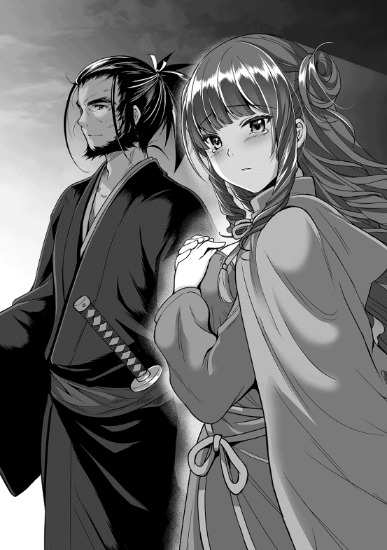

| 夜伽の国の月光姫3 | |
| 青野海鳥 | |
| (2016) | |
『竜の巫女』になって調子に乗ったセレネ（中身はおっさん）は、エルフの里に姉姫アルエと移住して結婚するという壮大な夢を抱く。しかし、欲望のままに行動していたつもりが、周囲の勘違いからいつの間にか人間とエルフの歴史的和解を実現し、国民的英雄『月光姫』に成り上がっていた。そんな折、呪詛吐きが仕込んでいた強大な呪いがイケメン王子を襲撃！ 大国崩壊の危機に直面するセレネだが、そこでかつてない究極の勘違いが発動する！ ――大国の長き歴史の中で、短き時を彗星の如く駆け抜けた月光姫の物語。大感動のクライマックス。
Illustration：miyo.N
Design：5GAS DESIGN STUDIO
プロローグ
「その剣に触れてはならぬと言っただろう！ 馬鹿者っ！」
凄まじい剣幕で怒鳴るシュバーンの目の前で、八歳になったばかりのミラノが頬を腫らして半泣きになっていた。激怒するシュバーンの前に、慌ててアイビスが割って入る。
「あなた！ 何も殴らなくても！」
「お前は黙っていろ。私がミラノと話しているのだ」
普段は愛妻アイビスに甘いシュバーンだが、今日の彼は有無を言わさぬ語調で言い切った。シュバーンの本気の怒りに対し、アイビスは仕方なく一歩退く。
「父さん！ ちょっと剣に触っただけで殴るなんてひどいよ！」
「ちょっと剣に触るだけ、という考えそのものがいかんのだ！ それは凶器だぞ！」
上目遣いで反論するミラノを、上からシュバーンが睨みつける。それでもミラノは怯まず、抗議の視線を送り続ける。
ミラノは五歳の頃から訓練兵に混ざって剣術を学んでいる。それから丸一年が経ち、模擬刀程度なら軽々と扱えるようになった。自分より頭一つ大きな少年兵から一本取った事もある。
自分の剣術に自信を持ち始めたミラノは、ちゃちな模擬刀では満足がいかなくなった。だから、どうしても父の使っている立派な剣を振るってみたくなったのだ。シュバーンが若い頃から使っていた物で、無銘だが、父が最も気に入っている剣である事は、ミラノも知っていた。
ミラノはシュバーンを尊敬している。父としても、国王としても、そして武人としても。その尊敬する父に少しでも近づきたくて、ミラノはこっそりと父の部屋に忍び込み、壁に掛けてあった大剣に手を伸ばした。だが、剣はミラノが想像していたのより遥かに重く、壁掛けから離した途端、持っていられず床に落としてしまったのだ。その音を聞きつけたシュバーンとアイビスが駆けつけ、今に至るというわけだ。
「身の丈に合わない力は身を滅ぼす。ミラノ、お前は一年間何を学んでいたのだ？」
「剣術。僕は前よりずっと強くなった」
「確かにお前の腕は、その年齢にしては見事なものだ。だが、剣術とは単に強くなればいいという物ではない。どれだけ人間が強くなろうが、竜の赤子にすら勝てんのだからな」
「でも、父さんはいつも僕に『強くなれ』って言うじゃないか！ 僕は強くなりたい！ だから、父さんのような立派な剣を振りたいんだ！」
「お前の求めているものはケダモノの強さだ」
「父さんの言ってる事がよく分からないよ！」
ミラノはなおも剣を握りたいと食い下がるが、シュバーンは決して首を縦に振らなかった。結局ミラノのほうが折れ、項垂れながら部屋を出ていこうとする。
「ミラノ」
「......何、父さん？」
ミラノが恨みがましげに頭だけ向けて返事すると、シュバーンが強張った表情でミラノを見つめていた。
「今はこの剣を振るわせる事は出来ないが、いつか、お前が本当の意味で強くなり、そして、本当に必要な時が来たら、この剣をお前に託そう」
それが愛する息子にシュバーンが出来る、最大の譲歩だった。
「それはいつ？ 本当の意味で必要な時って、いつさ？」
「それは、お前次第だな」
「......分かったよ。じゃあ、僕はその時まで待つよ。でも父さん、約束だから、必ず守ってね」
「ああ、ヘリファルテ国王の名において、約束しよう」
ミラノはまだ納得いっていないようだが、それ以上は何も言わず、そのまま部屋を出ていった。
「あなた、少し厳しすぎるんじゃないかしら」
「そうかもしれんが、ミラノはいずれ、この国を背負う者だ。軽はずみに剣を振るう人間に育てる気はない」
「でも......」
アイビスが眉を寄せるが、シュバーンは首を横に振り、そして、アイビスの腹部を見る。
「ミラノに必要なのは『守るための力』なのだ。人を守るための力、その意味を理解してもらいたい。産まれてくるお腹の子のためにもな」
「そうね......本当、お兄ちゃんは大変ね」
アイビスは膨らんだお腹を愛おしそうに撫で、そう呟いた。
確かに、自分が幸せな王妃でいられるのは、シュバーンに庇護の力があるからだ。いずれミラノが大人になった時、自分の大切な物を守れる力が無ければ、不幸になるのはミラノ自身だ。そんな思いを抱きながら、シュバーンとアイビスは、修練場へと向かっていくミラノの後ろ姿を、離れた場所から見守っていた。
獅子王と若獅子
普通に進めば一週間はかかる道程を、四日間の強行軍で帰国したミラノは、転がり込むようにしてシュバーン王に状況を説明した。今、ヘリファルテ王宮の王の間には、表情を強張らせて玉座に座るシュバーンと王妃アイビス。その手前には片膝をついて跪く焦燥したクマハチとミラノが。そして、ミラノ達の後ろに控えるように、マリーとアルエも呼ばれていた。
鬱々とした空気が充満し、誰も、一言も言葉を口にしなかった。誰よりも百合の花園を楽しみにしていたセレネが、その場所に着いた途端に竜に連れ去られる。そんな事など誰が予想出来ようか。
「アルエ姫、この度の件、何と詫びてよいものか......」
最初に沈黙を破ったのはシュバーンだ。あの獅子王シュバーンが、年端もいかない小国の姫に頭を垂れる。他国の王が見たら度肝を抜かれるような状況だ。しかし、それを驚く余裕はこの場の誰にも無い。
「いえ、シュバーン様が詫びる必要などありません。竜に襲われるなど、誰にも予想出来ない事。防ぐ事の出来ない自然災害のようなものです。ヘリファルテの王族にそれほど愛されているというだけで、あの子もきっと満足するでしょう」
アルエは顔面蒼白になりながらも、凛とした声でシュバーンに謝辞を述べた。小国とはいえアルエとて国を背負う第一王女なのだ。それもただの箱入り娘ではない。不遇な妹のため進んで学び、その細腕で知力を磨いてきた姫は、他国の煌びやかなだけの『お姫様』とは格が違う。
「ぐぅぅ......！ 申し訳ございませぬアルエ姫！ 拙者がっ！ 拙者が不甲斐ないばかりにっ！」
アルエの気丈な態度が逆に身に染みたのか、シュバーンの前に跪いていたクマハチは、血が出るほどに拳を握り締め号泣する。セレネの護衛役として付いていたにもかかわらず、結局、竜の鱗の一かけらを削り取っただけで、何一つ責務を果たせなかった。武人として最大の屈辱だ。
「クマハチは悪くないよ！ 私が......私がセレネに百合の花園を見せようなんて言ったからっ！」
クマハチの涙に引きずられるように、今度はマリーがぐすぐすと泣き出す。自分の提案した事で、可愛い妹分のセレネにもう二度と会えなくなる。そう考えただけで、マリーの小さな胸は張り裂けそうになる。
「大丈夫、大丈夫よマリー様......セレネはきっと大丈夫。あの子は運の強い子だもの」
両手で顔を覆うマリーの肩を、アルエがそっと抱き締めた。そう言ってマリーを慰めているアルエは、自分に言い聞かせているようにも見える。現にアルエの声は震え、今にも泣き崩れそうだ。
シュバーンがアイビスに目線を送る。主人の意図を汲み取ったアイビスは無言で頷くと、玉座から立ち上がり、泣きじゃくるマリーとアルエを支えるように退出していった。悲しむ若い娘達を癒す事に関しては、アイビスが一番の手練なのだ。
女性陣が退出し、王の間はシュバーン、クマハチ、そして無言で床を見つめるミラノの三人になる。
「シュバーン王！ 拙者は......拙者は己の無力さにほとほと嫌気がさしたでござる！ 剣の腕を磨きたいと豪語した結果は......なんと無様！ なんと脆弱！ かくなる上は、拙者の命で償いを......！」
「クマハチ、面を上げよ」
赤い絨毯の上で土下座をしながら己を責め続けるクマハチに対し、シュバーンは短く、しかし絶妙に言葉の合間を縫って呼びかけた。顔をくしゃくしゃにしたクマハチが、主君の命に従い顔を上げる。
「失態は己の命をもって償う。それがお前の国の武人の流儀であったな」
「その通りにござる。自ら腹を切り、そして首を落とし介錯を......」
「それが本当に、失敗を償う事になるのか？」
今すぐにでも実行しようとしていたクマハチは、一瞬呆けたような表情になる。それに構わずシュバーンは重々しく言葉を紡いでいく。
「お前の国の風習を否定するわけではないが、それは逃げではないのか？ お前が腹を切る。それでどうなるというのだ？ お前の血と臓物でヘリファルテの王宮を汚し、私はクマハチという優秀な武人を失う。それで一体誰が得をするのだ？」
「............」
「クマハチ、私がお前を重用したのは、部下としてというより、誰よりも責任感のある一人の武人として尊敬したからだ。事実、竜に立ち向かい鱗を切り落とせる人間など、この大陸に一体何人いる事か」
「ならば拙者は、一体どう償えばよいのでござるか？」
「誰もお前を責めはせぬ。お前を責めるのはお前だけだ。それでも償いをしたいと言うのであれば、より一層、我が国のために働いてはもらえぬか。私はもちろんの事、この国の誰もがそう願っている」
「......御意」
クマハチはしばらくの間俯いていたが、しばらくすると着物の袖で顔を拭い、そう答えた。その顔にはまだ涙の跡が残っていたが、彼は心を固めたようだ。
「クマハチ、お前は下がり少し休むがよい。私はミラノと話があるのでな」
「はっ！」
クマハチは立ち上がると、九十度を超える角度でシュバーンに一礼し退出した。後に残されたのは、ミラノとシュバーンの二人きりだ。
「父上......」
「やれやれ、とんでもない事になったものだ」
シュバーンは玉座に身を投げ出すように座り直し、天を仰いだ。彼とてこんな事態など初体験なのだ。女子供や臣下を前に情けない態度を見せては不安を煽る。親子といえど、やはり男同士でしか出来ない話もあるものだ。
「僕は......正しい判断をしたはずです」
「その通りだ。お前は正しい判断をした。アルエ姫の言う通り、竜に連れ去られるなど予測、回避共に不可能であり、自然災害と一緒だ。竜を追って安易に白森に突撃すれば、そこにはただ死が待っている。だが......」
そこで言葉を止め、シュバーンは玉座から立ち上がる。そのままミラノの元まで歩き、人一人分くらいの距離で、ミラノの空色の瞳を真っ直ぐに覗き込む。
「お前は正しい判断をした、そう自分で言っている。だが、その不満げな表情は何故だ？」
「僕は、本当に正しい判断をしたのでしょうか？ 竜に襲われたものの、被害はセレネ一人で済みました。殆ど怪我人もおりません。最小限に抑えたと言ってよいでしょう。ですが......」
「政治的に言えば、セレネ一人で済んだのは幸いと言える」
そう言って、シュバーンは懐から一枚の羊皮紙を取り出した。そこにはこう記されている。
『さほど高貴ではなき身なれど、類稀な才能の片鱗を感じさせる存在である。親愛なるヘリファルテ王国に献上し、才能を開花させ、この娘が貴国に役立つ事を所望するところなり』
「お前がアークイラで結んできた契約書だ。これが今、効力を発揮するというわけだ」
もし竜が連れ去ったのがセレネではなくアルエだった場合、アークイラから留学してきた姫を連れ出した上、ヘリファルテ側の過失となる。責任追及は免れないだろう。しかし、セレネはあくまで『魔力を持った高貴ではない存在』としか記されていない。ヘリファルテ側からすれば、平民一人失った程度の事故で済ませられる。痛手は殆ど無いのだ。
「さらに言えば、クマハチが切り落としてくれた竜の鱗という証拠品もあるのでな。竜に平民が攫われたと言い切れば、アークイラもそれ以上は追及出来ないだろう」
「では父上は、国の体裁が保てればセレネがどうなってもいい、そう言いたいのですか！」
ミラノが一歩前に踏み出し、噛み付かんばかりの勢いでシュバーンに食って掛かるが、シュバーンは険しい表情で睨み返す。
「落ち着かんか。お前は涼しげな顔の割に、意外に短絡的で激情家だ。まったく誰に似たのやら。よいか？ お前はこの国の次期国王であり、いずれはヘリファルテをその身に背負っていく存在だ。その上で、今後の判断をせねばならない。さて、お前は何を望む？」
「私が今望む事はただ一つです」
「何だ？」
「セレネを助けに行きたいのです」
その言葉を聞いた途端、シュバーンは肺の空気を全て吐き出すほどの、長く深いため息を吐いた。
「お前は私の言葉を聞いていたのか？ 第一王子であるお前に対し、国王である私が、そんな馬鹿げた意見を聞くと思っているのか？」
「思っています」
「その通りだ。馬鹿息子」
そう言った瞬間、シュバーンは足元の絨毯を凄まじい勢いで踏みつけた。絨毯の下の大理石すら砕かんばかりの勢いだ。
「たかが空飛ぶトカゲごときが、私達の可愛いセレネを連れ去っただと!? ふざけおって！ 許さん！ 断じて許さんぞ！」
シュバーンは周りに誰もいない事を幸いと、大音声で怒鳴る。壮年となった今でも、獅子王と呼ばれる彼の気迫は全く衰えていない。彼は自国とそして国民を愛していたが、最も大事な存在はやはり自身の家族である。
年頃になった最愛の息子と娘──ミラノとマリーの仲が上手くいっておらず、そのせいで家族の仲自体も上手くいっていない事を、シュバーンは内心で気に病んでいた。
そこにひょっこりと白い少女──セレネが現れ、問題を見事に解決してくれたのだ。それだけではない。彼女を引き取って僅かな時間しか経っていないというのに、息子ミラノは急速に心身共に成長している。
以前の追い詰められていた焦りのような物が消え、代わりに健やかな活力が満ち溢れている。その事はシュバーンだけではなく、母であるアイビスも気付いていた。今のシュバーン──いや、ヘリファルテ王国にとって、セレネはかけがえのない家族になりつつあったのだ。
「父上」
「何だ？」
「僕が激情家というのは、どうやら父上から受け継いだ気性のようです」
「口の減らない奴だ」
シュバーンが苦笑する。ミラノも同じ表情を返す。これで話は纏まった。では次に、具体的にセレネの救出が可能なのか、現実的な話をしなければならない。
「助けに行くとは言うが、何か当てはあるのか？」
「竜が連れ去ったという事は、セレネに対し何らかの興味を持ったからではと予想しています。人間を餌として狙ったなら、もっと大きな獲物を狙ったでしょうし、持ち運んで食い殺すには量が少なすぎます」
「つまり、生きている可能性はゼロではないという事か。だが、それだけではセレネがどこに連れていかれたかまで分からないだろう」
「飛び去った方角から考えると、白森に向かったのは間違いないでしょう。これも推測ですが、赤竜はセレネをエルフと勘違いしたのでは、と」
「エルフか......確か、白い肌に赤い目を持つ種族だったな。あまり情報は無いが、エルフが竜を崇めていると聞いた事はある。そう考えれば、確かに辻褄は合うな」
シュバーンの台詞を肯定するように、ミラノは頷いた。
「総合すると、セレネはエルフ達の元で囚われている可能性があります。確認のため、白森の探索を試みたいのです」
「お前の言っている事は全て憶測だ。竜がセレネを既に食い殺しているかもしれないし、エルフの元に送られたセレネが無事かも分からないのだぞ？ 全くの徒労に終わる場合もある。それどころか、お前も侵入者とみなされ、無事では済まないかもしれん」
「危険は承知しています。ヴァルベールの人間達が白森に入り込み、エルフにひどく痛めつけられる。そういった事はここ最近よく起こっているようです」
「白森に入れるのは魔力を持った人間だけだ。クマハチは連れていけん。我が国の魔力を持った者達は、殆どが要職に就いている。お前の分の悪すぎる賭けに、国力を削ぐ訳にはいかん」
「最低限で構いません。私自ら交渉し、その上で来てくれる者だけで部隊を編成します」
シュバーンは呆れた。はっきり言ってしまえば作戦と呼ぶ事すらおこがましい。自殺ツアーというしかない無謀な計画だ。
「無茶苦茶だな」
「はい。ですが僕はそうしたいのです。以前、セレネが僕にこう言いました。『王子が王子だから、私は不満だ』と。その意味が、今ようやく分かった気がするのです」
「どういう事だ？」
ミラノは目を閉じる。瞼の裏に、笑いながら食事を差し出す純白の少女の姿が浮かんだが、その思いを振り払う。今は過去の思い出に浸っている時間は無いのだ。
「僕は『ミラノ王子』として、その場その場で判断をしてきました。いずれ王になる者として正しい振る舞い、正しい言葉、正しい笑顔......ですが、彼女は僕の本質を見抜いていたのです」
「ふむ......」
「僕は王子である前に、ミラノ＝ヘリファルテという一人の人間なのです。王子という肩書きばかり気にして自分を苦しめていました。それを救ってくれたセレネのために、どうしても戦いたいのです。間違っているかもしれませんが、大切な少女一人救えずして、一国を治める人間になれるでしょうか」
ミラノは覚悟を決めていた。王子というプライドも肩書きも全てかなぐり捨て、セレネを救うため一介の冒険者ミラノとなり、白き森のエルフの元へ辿り着こう、と。
「まったく......お前のような馬鹿息子など、どうとでもなってしまうがいい。お前などいなくても、私はこの通り頑健だ。それにマリー、あれも優秀な愛娘だ。お前など足元にも及ばぬ素晴らしい婿を娶らせる。お前がどこで野垂れ死のうが、この国は安泰だという事を覚えておけ」
「つまり、後顧の憂いなく戦えという事ですね。感謝致します」
「......そういう事だ。少し待っていろ」
急に身を翻し自室へと戻っていくシュバーンの背中を、ミラノは不思議そうな表情で見ていた。少し間を置き、シュバーンは一振りの大剣を携え戻ってきた。柄の部分に魔力を補強する赤い宝石が埋め込まれている以外、何の装飾もないシンプルな鉄の剣である。シュバーンはそれを片手で軽々と一振りし、そのままミラノの目の前に差し出した。
「これは？」
「受け取れ。お前の剣は折れたのであろう？」
「し、しかし！ これは父上の......！」
「そう、私が若い頃に使っていた愛剣だ。お前が使っていた鈍とは訳が違うぞ」
震える手で、ミラノはシュバーンの大剣を受け取った。ミラノの折れた細身の剣と違い、若き日の父と命運を共にしたこの剣は、とても『重い』のだ。
まだ子供の頃、この剣にどうしても触りたくて手を伸ばした時、本気で殴られた事をミラノは未だに覚えている。父が単純な怒りで暴力を振るったのは、後にも先にもそれが最後。それくらい大事な剣。
「いただけるのですか？」
「馬鹿者。貸すのだ。セレネを連れてきた時にも言ったはずだが、私はお前を王子として育てたが、強盗にするつもりはないのでな」
ミラノが笑う、シュバーンも笑う。それだけで十分だった。
「準備が整い次第、行って参ります」
「必ず帰れ。出来ればセレネを連れてな」
「はい！」
シュバーンの激励に対し、ミラノは短く、しかし魂の篭った声でそう答えた。人間の殆ど踏み込めない白森、そこに住むエルフ達の情報は殆ど無い。ヴァルベールの者達が白森を攻略しようと突撃したものの、命からがら逃げ帰ってくる者しかおらず、彼らの集落の漠然とした位置しか分からない。
仮にエルフの住処を見つける事が出来たとしても、そこにセレネがいるかどうかも分からない。単にエルフの怒りを買うだけで、骨折り損のくたびれ儲けで済めばよいところ。下手をすると命を投げ捨てる事になる。
さらにセレネがエルフ達の元にいたとして、現状、人間であるセレネがどう扱われているか分からない。未開の地にたった一人で放り込まれてしまったのだ、もしかしたら奴隷のような扱いを受けているかもしれない。
賭けというにはあまりにも無謀。紙のように薄い奇跡を手繰り寄せねばならない。
「セレネ......今、僕が迎えに行く！」
それでもミラノに引く気は全くない。たとえ自分一人でも、人外魔境に乗り込み戦うつもりだ。セレネは、生まれながらにして過酷な運命を背負いつつも決して腐らず、逆に腐りかけていた自分に光を与えてくれた。今度は自分がセレネに光を当ててやらねばならない。
あの少女を見捨て、一人のうのうと安穏の日々を過ごすなど、どうして出来ようか。深呼吸をし、ミラノは父から借り受けた大剣を背負う。細身のミラノにはまだ幾分重いが、その重みが逆に自分に勇気を与えてくれる。ミラノは堂々とした足取りで、王の間を出ていった。
「巣立ちとは、唐突にやってくるものだな......」
シュバーンはぽつりと一言だけそう呟いたが、ミラノは振り返る事はない。これが今生の別れになるかもしれない。お互いそう理解していたが、それ以上の言葉は、父と子の間には必要無かった。
「よくねた！」
白森に滞在を始めて四日目の朝、セレネはふわふわの羽毛のベッドの上で伸びをした。セレネが今住んでいる場所は、族長であるギィが用意してくれた巨木の頭頂部をくり貫いた特注の部屋だった。
ギィいわく、近くの集落の代表達が話し合いをする際に使われる、いわば謁見の間のような場所らしい。巨大な塔のような場所からの眺めは壮観で、陽光に輝く真っ白な森の景色を一望する事が出来る。
木製の部屋は、心地よいそよ風が流れる作りとなっており、実に快適だ。内部の装飾も毛皮の絨毯が敷かれ、壁面には色艶やかな花々が溢れるほどに植えられている。人間のお城よりは質素ではあるが、好みによっては遥かに贅沢な空間と言える。
セレネは下着一枚のままベッドから降りると、枕元に用意されていたフルーツジュースを一気飲みする。腰に手を当てるのも忘れない。出来ればこれがビールで、つまみのカワハギとかも用意してくれればいいのにと思うのだが、それはわがままというものだ。
爽やかな甘さで喉を潤したセレネは、思わずラジオ体操まで始める始末であった。ここはセレネが捜し求めていた安住の地なのだ。しかし、このまま黙っていては二週間後には人間の世界に戻されてしまう。それだけは何としても避けねばならない。
「にんげん、いや」
自分が人間なのを棚に上げ、セレネはそう呟いた。何が何でもエルフの集落に居座り続け、一生を安穏と暮らすのだ。そのためにも、何とかしてアルエをここに連れてこなければならない。出来ればアイビスとマリーも連れてきたいところだ。そうすればアイビス、アルエ、マリーで大・中・小をコンプリート出来る。
「よくばり、ダメ」
しかしセレネは自らの思考を否定した。現実的に考えて、アイビスとマリーは難しいだろう。あまり欲張りすぎて一石二鳥が虻蜂取らずになるのは避けたい。まずは本命に集中し、余裕があれば勢力を拡大していく、これぞまさに軍師の定石。大戦略だ。
「ぐわっはっは！ かんぺきじゃあ！」
セレネは欲望に振り回されない己の慎重さを自画自賛した。その考え方自体が欲望にまみれている事に、現実でも脳内でもお花畑で暮らしているセレネは気が付いていなかった。
『姫、ただいま偵察より戻りました』
洗濯された白のドレスに身を包むのとほぼ同時に、バトラーが窓から滑り込むように現れた。知らない場所に来た時の恒例行事で、セレネはバトラーに集落の偵察を命じていた。バトラーはセレネの前まで走ってくると恭しく一礼をし、状況を報告する。
『結論から言いますと、この辺り一帯を私と姫だけで抜けるのは無理でしょう。何やらエルフ達もセレネ姫に執着しておりますし、下手に動かずエルフ達の言葉を信じ、数日後の送迎を待つのが最善でしょう』
「なるほど」
『姫、見知らぬ種族の元にたった一人残され、さぞ不安でございましょう。ですが、もう少しの辛抱でございます。万が一、人間の元に送り返さないなどとぬかした場合、今度は容赦なく叩き潰します。油断さえしなければ、私一人でも十分に対応可能でしょう』
「ううん、ぜんぜん、へいき」
興奮気味のバトラーを、セレネは微笑みながら軽く撫でた。たとえ相手がエルフだろうが、極力暴力は振るうべきではないと言っている。セレネのその穏やかな表情を見て、バトラーは自らの粗暴さを恥じた。
『（本当なら、一刻も早く帰りたいでしょうに......）』
自分に密偵を頼んだあたり、セレネが何とかして人間の元に帰りたいと思っているのは明白だ。しかし、現実的にエルフの集落はなかなか警備が厳しく、自分達だけで抜け出す手段は皆無。こればかりはどうする事も出来ない。
今のバトラーに出来るのは、思い人であるミラノ王子に会えない寂しさを、少しでも紛らわせてやるくらいだ。それがバトラーにとっては歯がゆかった。
（よしよし......）
一方で、セレネは報告を聞き、ほくそ笑みながらバトラーを撫でていた。脱出する手段が無いという事は、外部から余計な邪魔が入らないという事だ。アルエ姉様を連れてきた後の最大の懸念は、姉に固執しているあの性王子が、エルフの集落まで殴り込んでくる事である。幸い、どうやらそれはかなり難しいらしい。
「バトラー」
『はい、何でございますか？』
「そうだん、ある」
周囲の状況が分かった以上、早速本題──アルエを連れてくる相談をせねばならない。
『相談、でございますか？』
「うん、とても、だいじ」
セレネの引き締まった表情にただ事でない雰囲気を感じ取ったバトラーは、身を引き締め、主の言葉を待った。
親睦
「アルエ姫を、エルフの里にでございますか？」
「うん」
セレネの発言を聞き、バトラーは前足を組んで考え込んだ。何故、一刻も早く帰りたいはずの主人が、事もあろうに姉をエルフの集落などに連れてくるのだろう。
「姫、大変失礼ではございますが、私には姫の意図する事が理解出来ませぬ。姉君をここに連れてくる事に、一体どのような意味があるのですか？」
「え、えーと......こ、こくさい、こうりゅう？」
いくらセレネでも、姉と結婚したいので人間の世界を捨ててエルフの集落に移住したいなどと伝えるわけにもいかない。それはもう少し後になってからだ。セレネは自分では聡明だと思い込んでいたので、物事には段階があると理解しているつもりだった。だが、いくら準備してもどうにもならない事がある事までは考えていなかった。
「国際交流......でございますか。なるほど。確かに『竜の巫女』と血を分けた姉を呼ぶ。ある意味でミラノ王子より適任でございますな」
「......ぇ？ ちがった、そう、それ！」
セレネの苦し紛れにでっち上げた回答を、バトラーはすっかり信じ込んでしまった。ミラノは大国の王子ではあるが、それは人間の世界での話だ。エルフとの交流を考えるなら、実の姉であるアルエのほうが確かに適任ではある。なるほど、見事な人選である。
「しかし、アルエ姫をここに連れてくるのは難しいでしょう」
「なんで!?」
「赤竜殿はアルエ姫を見た事がありませんからな。セレネ姫ならばともかく、金髪碧眼の女性などヘリファルテには山ほどおりますので」
「でも、てんし！」
セレネはバトラーに反論する。セレネからすれば、アルエほど美しい女性などこの世に存在しないのだから一発で分かるだろう。いい加減にしろというのが論拠である。もちろん超理論であり、いい加減にするのはセレネである。
「アルエ様は確かに天使のようなお心をお持ちの方ですが、外見は美しい女性でございます。姫をエルフと見間違えた赤竜殿が、たった一人のアルエ様を見つけられると思いますか？」
「うぅ......」
セレネはもどかしさに地団太を踏んだ。確かに、あの竜ははっきり言って馬鹿だ。セレネも人の事は言えないが、無理やりヘリファルテに突っ込ませ、全然違う娘を連れてこられた上に、最悪アルエに危害が及ぶ、なんて事になったら地獄だ。
「やはり一度帰らざるを得ないでしょう。姫がエルフ達との交流を望まれているのは理解出来ましたが、我々だけでは出来る事が少なすぎます」
「そんなぁ......」
セレネは出鼻を挫かれて非常に残念がった。折角の計画が始まる前に頓挫してしまったのだから当然だが、バトラーはというと、セレネの思慮深さにいたく感心していた。
最初、アルエ姫を連れてきたいと聞かされた時、それは寂しさゆえのものだと思い込んでいた。だが、セレネはそんな短絡的な考えはしていなかったのだ。
白森は魔力に満ちた空間であり、魔力を帯びた貴重な資材が山ほど眠っている。もしエルフ族と交流を持つ事が出来れば、ヘリファルテに──いや、人間にとってさぞ有意義なものとなるだろう。ピンチであるこの状況をチャンスに変え、エルフと人間の橋渡し役になろうという、常人には考えも付かない発想だったのだ。その考えは、とても八歳の少女の物ではない。
『（私もまだまだ未熟だな......）』
自分もそれなりに従者として実力を磨いてきたつもりだが、主人の深謀遠慮には到底及ばない。しかし、こうして主の考えを理解した以上、自分も出来る限り協力せねばならない。
「分かりました。では、現状で出来る限りの事をしようではありませんか。さしあたり、ギィ殿に交渉をしてみてはいかがでしょう？」
「ギィ、なんで？」
「一度帰った後の再訪問の約束を取っておくのです。私は交渉に参加出来ないので難しいかもしれませぬが、やる価値はあると思います」
「なるほど！」
セレネは表情を輝かせる。確かに今のうちにギィにコネを作っておくくらいは出来るだろう。僅かな可能性であるが、希望の糸が切れたわけではないのだ。
「さっそく、いく！」
善は急げ。いや、ちっとも善ではないのだが、とにかくセレネは勢いよく立ち上がり、壁にぶら下げてあった木の笛を吹いた。以前、エルフの警備隊達が森の中で使っていたのと同じ物だ。澄み渡る空に似つかわしい高い音が響くと、すぐに眼下にエルフの少女──ザナが現れるのが見えた。
「ザナ、ザナ！」
「はーい、今行きますよっと」
ザナは言うが早いか、実に軽快な身のこなしで木の上を跳ねるように昇ってくる。セレネのいる場所は大木の頂上付近なのでかなりの高さなのだが、ザナにとっては命綱すら必要ないらしい。一分もかからず、ザナはセレネの前に颯爽と現れ、恭しく一礼する。
「セレネ様、あたしに何かご用かしら？」
「たまらん」
「えっ？」
敬礼するエルフの美少女を見たセレネは、思わず顔を綻ばせる。こうして美少女を侍らせ、様付けで呼ばれる、何と甘美な響きであろう。そんな下種な考えに気付かず、ザナもご機嫌なセレネに微笑を返す。
「ギィ、あいたい」
「族長に？ 別にいいけど......何の用？」
「いろいろ」
セレネが言葉を話すのが下手な事はザナも理解していたので、とりあえず要求を飲む事にした。
「了解。ちょっと呼んでくるから待ってて」
「まって！ だっこ！」
「はいはい」
セレネがバンザイの姿勢を取ったので、ザナは苦笑しながら抱きかかえる。竜を従える力を持っているとはいえ、セレネはほんの幼子だ。人間が誰もいないこの状況では、甘えたがるのも仕方ないだろう。ザナはそう考えていた。
「ふへへ」
抱きかかえられたセレネはというと、すっかりご満悦である。中身は子供ではないし、セレネの来賓室にはきちんと内部に階段が付けられているので、別に一人でギィのところに行けるのだが、セレネは敢えてザナを呼び、抱っこされながらギィの元へと運ばれていく。
「うん、けんこうてき」
「なにが？」
セレネはザナにお姫さま抱っこをされつつ、腕にあたる胸の感触に酔いしれていた。あまり大きくは無いが、健康的でみずみずしい弾力があって実によい。
「ほめてつかわす」
「よく分かんないけど......ありがとう」
セレネの外見に似合わない、背伸びしたような鷹揚な口ぶりがおかしくて、ザナは思わず噴き出す。ザナはか細いエルフの少女ではあるが、魔力を扱う事に長けている。ザナに限らず、エルフは全体的に体力が無い種族だが、足りない分は魔力で補う事が出来るので、総合的にはかなり力がある。まして、セレネのように華奢な少女など容易に抱きかかえる事が出来るのだから、褒められる事など何もない。
しかし、セレネが褒めたのは行動ではなくザナのおっぱいである。おっぱいソムリエと化したセレネは、現在に成長性を加味し、ザナのおっぱいにA+の評価を下した。一体何様であろうか。
そうして欲望のアクセルをべた踏みしたまま、セレネはギィの元へと連れて行かれた。ギィは以前と同じ族長が住む巨木の根元で、一人で長い木の棒を振り回していた。
「なに？ チャンバラ？」
「ちゃんばらって何だ？ これは修練だよ、修練」
ギィはセレネとザナが来た事で小休止に入り、近くで出っ張っていた樹木の根に腰を下ろす。そして水筒の水を飲み、件のぼこぼこの鉄鍋──彼の王冠を被り直した。その動作が一段落するのを待ち、ザナがセレネを地面に下ろし、口を開く。
「セレネ様があんたに用事があるんだってさ」
「あん？ セレネが俺に？」
「様を付けなさいよ！ 竜の巫女なのよ!?」
「セレネが俺にいいって言ったんだよ、な？」
「うん」
ギィが不敵に笑うと、セレネは何でもないように頷いた。竜の手前、ギィはセレネを様付けで呼んだが、すぐにざっくばらんな態度に戻った。ザナは毎回それを不敬だと言っていたが、セレネは特に気に留めていないらしい。
（こんなに小さいのに、きちんと族長を立てる事を知っているのね）
ザナは、セレネの器の大きさに感服していた。竜の巫女であるセレネなら、ギィに服従を強制する事だって出来るのだ。けれどセレネはそれをしない。異種族に対しても、この人間の少女は、自らの力を誇示せず、エルフを一つの種族として、そしてギィをその代表として敬意を表しているのだろう、と。
もちろんセレネにそんな深い考えがあるわけがない。単に野郎に様付けで呼ばれても嬉しくないので直さないだけである。
「んで、竜の巫女様が俺に何の用だ？ お前は蚊の食い跡一つなく人間の街に返してやるから、心配しなくていいぞ」
「ちがう、しんぼく」
「神木？ これがどうかしたか？」
そう言ってギィは、根のところに突き刺してあった棒切れをセレネに見せた。別に色が真っ白なだけで、単なる一メートルくらいの棒切れにしか見えないが、セレネの疑問に気付かず、ギィは白い歯をむき出して笑う。
「この神木に目を付けるとは、お前、なかなか見所があるな！」
ギィが得意げに棒切れを一振りすると、白い木の棒が蒼い燐光を放つ。何となく、巨大な青いサイリウムのようにも見える。
「人間のくせに神木を知ってるなんて、やっぱりセレネ様って特別なのかしら？」
「ち、ちがう！」
親睦を深めにきた、そう切り出したつもりだったのに。セレネの言語能力ではこれが限界だった。しかし、何故かギィは喜色満面だ。どうやら手に持っている神木とやらを話題に出されたのが余程嬉しかったらしい。
「だよなぁ。人間じゃ俺達の神木を詳しく知ってるはずねぇもんな。よし！ 特別に、このエルフ族一の神木の使い手、ギィ様が講義をしてやろう！」
「あんた......単に自慢したいだけでしょ」
「ち、ちげーよ！ これは......そう！ 異文化交流って奴だ！ 俺は先代までのジジイ族長とは違うからな。これからはエルフだって白森を抜けて広い世界を見ないといけないんだよ、うん」
「はいはい」
恐らくその場で考えたであろうギィの屁理屈を、ザナは軽く流した。
「あ、あの」
「よし、じゃあ神木の使い方を説明するぜ！ まずは......」
セレネは訂正を挟む暇も無く、勝手に生徒にされ、ギィ先生の『神木』の授業を受ける事となった。
新しい風
ギィはセレネとザナを近くの切り株に座らせると、実に楽しそうに神木の講義を始めた。
「神木は俺達にとって、最も貴重な素材の一つなんだぜ」
ギィは真っ白な木の棒──神木をまるで刀のように一振りした。それに呼応するように、木の枝が青い光に包まれ、残光が軌跡を作る。
「どうだ？ すげぇだろ！」
「なにが？」
セレネの回答にギィは腰砕けになった。これが大剣だったりしたらもう少し見た目のインパクトがあったのだが、セレネからしてみれば、巨大な光る棒切れを振り回しているようにしか見えないのだから仕方ない。
「そ、そうだよな。お前人間だしな......よし！ じゃあ、こいつがどれくらいすげぇか見せてやるよ」
ギィは気を取り直し、手近に生えていた木の前に立った。他の巨木に比べれば細い部類に入るが、それでも大人が一抱えするくらいの太さはあった。
「行くぜっ！」
ギィの呼びかけに応じるように、神木の枝がより強い輝きを放つ。青白い光が枝を包み込むように纏わり付き、輝く剣の形に変形する。
「びーむさーべる!?」
「何だそりゃ？ ま、見てな」
ギィは鼻歌まじりに、光の刃を持った神木をバトンのように一回転させ、それから両手で握り直す。
「うおおおおおっ!!」
裂帛の気合を篭め、ギィが横薙ぎに神木を振り抜く。次の瞬間、先ほどの太い幹がすっぱりと切り裂かれた。木はめりめりと悲鳴を上げ、大きな音を立てながら倒れた。
「ま、こんなもんか」
『おお、これは凄い！』
「すげー！」
セレネは思わず拍手をしていた。バトラーも神木の威力に驚嘆する。いかな豪腕を持とうと、こんな木を一撃で切り倒すなど、誰もが出来る業ではない。
「にんげんわざ、ちがう！」
「いや、そりゃ俺はエルフだし......」
人間業ではないと言いたかったのだろうが、ギィはそもそも人間ではないので、その賛辞はいかがな物だろうか。とはいえ、一応褒められている事は伝わったようで、ギィは歯をむき出しに笑った。
「それ、ぼう、けん、ちがう、なんで、きれたの？」
「馬鹿だな、俺達にとって神木は剣だぞ」
「馬鹿はあんたよ。それじゃ説明になってないでしょ」
セレネの隣に腰掛けていたザナが、呆れたように呟いた。
「セレネ様、馬鹿な族長の補足をするわ。白森の木々はみんな魔力を持ってるけど、その中でも特に強く、永い時間を掛けて育った木からだけ取れる枝、それが神木よ」
「はぁ」
ザナの気を利かせた解説にも、セレネは特に関心を持たなかった。別にエルフが棒を使おうが剣を使おうが、セレネには全く関係ない。
「神木はそれ自体が強力な魔力を内包しているから、持ち主が魔力の操作を出来れば強力な武器になるの。さっきギィがやったみたいにね」
「ま、俺は細かい制御は苦手なんだけどな。そういうのはザナのほうが得意だろ」
「まぁね」
ザナは得意げに胸を張る。単純な魔力の保持量と戦闘センスに関してギィは天才といっていい逸材だったが、細かい魔力の制御はザナのほうに分があった。
『それで合点が行きましたぞ。私を拘束したあの珍妙な矢、あれは魔力で硬化させた植物の蔦を放ったのですな』
バトラーは己の身で体験したあの瞬間を思い出す。あれは多分、木の矢ではなく、先ほどの神木とやらの蔓だろう。矢として射る時には魔力で硬化させ、遠隔で魔力を解除する事で、ただの蔦に戻る、そして再び硬化させたのだろう。
「人間は確か鉄の剣を使うんだよな。あんな物、俺達には必要ねぇ。俺にはこいつがあるからな」
そう言い終わると、ギィは手にした神木の魔力を解除する。蒼き燐光は消え、再びただの白い木の枝に戻った。ギィ曰く、この状態でも並の鉄より強度はあるらしい。
『なるほど。これでエルフ達の生活の疑問点がようやく解消されましたぞ』
「どゆこと？」
『彼らの集落を見回りましたが、使われている物は殆どが木製でした。耐水、耐火性に優れる強靭な木材が使えるのであれば、鉄器を使う必要も無いのでしょう』
「そう」
新たな知識を得た事に、バトラーは知的な満足感を得ていたが、セレネはバトラーの解説を適当に流した。セレネは肉体的な快楽を求める事が中心で、知的好奇心を満たす事にあまり興味が無いのだ。そんな事より、今はギィと親睦を深め、自分の未来を作る事のほうが大事だ。
「しんぼく、ほしい」
「あん？ お前も神木が欲しいのか？」
そんな事より親睦深めようぜ、そう言ったつもりだったのだが、ギィもザナもそうは取らなかった。
「うーん......でもなぁ、人間程度の魔力で神木を持ったって、多分使いこなせねぇぞ」
「ちょっとくらいいいじゃない。お守りくらいにはなるわよ」
「仕方ねぇな、ちょっとだけだぞ」
そう言ってギィは懐から何かを取り出し、セレネに手渡した。それは、セレネの小さな手から少しはみ出す程度の、小さな純白の縦笛だった。
「俺が使ってる合図用の笛だ。こいつは予備があるし、神木から作られてる代物だ。お前にやるよ」
「あ、ども」
ギィが差し出した神木の笛を、セレネは受け取った。タダでもらえる物はとりあえずもらっておくのがセレネの流儀だった。
「折角だし少し試してみたらどうかしら？ セレネにも魔力があるんだから、もしかしたら使えるかもしれないわよ？」
「うぃっす」
セレネは白い縦笛を握り、精神を集中する。
「ラーメン、ソーメン、コペンハーゲン......」
最近はもうすっかり止めていたが、セレネは以前唱えていた独自のインチキ詠唱を開始する。
様々な出来事があったせいで、セレネの少ない脳細胞の片隅に追いやられていたが、魔法のある世界に生まれてきたのだから、魔法的な事をしたいという希望があった事を、セレネは今更思い出した。
いくら精神を集中しても魔力が使えないので半ば諦めていたのだが、今はエルフの神木とやらを手にしている。もしかしたら、今ならギィのように、自分もかっこいい魔法の刃が放てるかもしれない。
「でない......」
だが現実は非情だった。セレネが手にした神木の笛はうんともすんとも言わず、ただの白い笛として存在しているだけだ。
「まあ仕方ないわね。エルフと人間じゃ魔力の保持量が違うから......」
「う、うおおーッ！」
ザナの忠告を遮り、セレネは激怒した。この笛野郎、人に期待を持たせておいて突き落とすような真似しやがって。縦笛相手に激昂したセレネは、必死になって白い笛をしごく。
『姫、何もそんなにムキにならずとも......』
「ううううっ！」
興奮しているセレネに対しやんわりと忠告するも、セレネはひたすらに神木の笛を握っていた。棒なんだから、必死にしごいたら何か出るんじゃないか、そんな馬鹿な考えにセレネは脳内を全て支配されていた。
「でたぁ！」
全身全霊を注いだ結果、遂にセレネは魔力の放出に成功した！ 縦笛の先端部分から、まるでロウソクの火のような、蒼い刃がちょっぴり出た。
「......しょっぱい」
何か、しょぼい。セレネは率直な感想を述べた。ギィが一メートルはある棒を発光させ、大木を一撃で真っ二つにした魔力の刃とはえらい差だった。これではビームサーベルではなく、ビームペーパーナイフだ。
「ま、まあ、その、なんだ......得手不得手ってモンがあるからな」
「そ、そうよ。それに神木はそれ自体に邪悪な魔力を払う力があるわ。だから、無理に武器にしなくてもいいと思うわよ」
『姫は武器などという野蛮な物を持つ必要はありませぬぞ。このバトラーが姫の懐刀として常におりますのでな』
「うぅ......」
半泣きになったセレネを慰めるように皆が言葉を紡いだが、セレネにはその優しさが辛かった。
「うわぁん！ ギィのバカ！ しね！」
セレネは泣きながらその場を走り去った。別にギィのせいでは無いのだが、完全な八つ当たりと嫉妬のセリフを吐き捨てながら。
「あ、待ってセレネ様！ ギィ！ あんたが得意げに木なんか切り倒すから！」
「はぁ!? お前がセレネに神木をやれって言ったんだろうが！」
ギィとザナはお互いに責任の擦り付け合いを始め、その騒ぎを聞きつけた他のエルフ達が集まり、辺りは人だかりとなった。そうした混沌とした状況の中、結局、肝心の親睦を深める事に関しては言及出来ず、この場はお開きとなった。
その数時間後、頭を冷やしたセレネは罵声を吐いた事をギィに詫び、長い時間を掛け、何とか「エルフと親睦を深めたい」と伝える事に成功した。ギィとザナはお互い顔を見合わせ、何やらひそひそ言い合っていたが「考えておく」とだけ返された。

神木の笛はそのまま記念品としてもらっておいてよいとの事だが、是非また来てくださいという返答をもらえなかったのがセレネは不満だった。そうして思い悩んだ結果、セレネは脳内で今後の計画を立てた。その内容は以下の通りだ。
①とりあえずヘリファルテに戻り、何とかして赤竜を呼ぶ
②次に、自分自身がアルエに指示し、竜に攫われたフリをして二人でエルフの集落に運んでもらう。赤竜に説明する理由は何とかしてひねり出す。
③その後、何とかしてエルフの集落に居座る。
以上である。肝心要の「何とかして」の部分はまるで考えていなかった。セレネが事前に思いつく計画はいつもこの「何とかして」が大部分を占めているのだが、幸運にも今まで何とかそれで生きてこれたので、本人はあまり気にしていなかった。
ちなみにこういった思考を、世間一般では「運まかせ」とか「行き当たりばったり」などと表現するのだが、セレネとしては計画のつもりであった。
『エルフ達と人間の関係を考えると、向こうの返答も仕方なしというところですな。物事がとんとん拍子に進む事は少ないものです』
エルフから曖昧な返事をもらった事に不服だったセレネに対し、バトラーはそう言って宥めたが、セレネは一刻も早くエルフの集落に戻りたかったので、とにかく既成事実を作ってごり押し作戦を強行するつもりだった。
それから数日は特筆すべき事も無く、相変わらずセレネは贅沢の限りを尽くしていたが、ついにエルフの集落で過ごす最後の夜となってしまった。
エルフ達はセレネの帰還を祈り、盛大なパーティーを開いた。新鮮な果物を中心とした夕餉が用意され、大きな焚き火を中心に、エルフの少女達が部族に伝わる伝統の舞を披露した。バトラーは滅多に見られない異文化の舞踊を興味深く観察していたが、セレネはエルフの娘の乳が揺れる部分しか見ていなかった。
食い入るようにエルフの少女達の舞を見るセレネの様子を窺い、ギィは胸を撫で下ろした。エルフ流の歓待が人間に受け入れられるか族長であるギィは不安で仕方が無かったが、この少女にそんな心配は杞憂であったらしい。
「セレネ、お前、本当にまたここへ来たいのか？」
「うん、ねえさまと」
「ふーん......」
無関心を装いつつ、ギィはあぐらをかいてエルフの少女の舞を見ていたが、彼の頭の中は隣に座る人間の少女で埋め尽くされていた。
（こいつ、本気で俺達と交流を結ぶつもりか？）
再び乳揺れダンスに夢中になったセレネの横顔を、ギィは詮索するような表情で見つめる。
「......竜は、それが目的でこいつをここに連れてきたのか？」
「えっ？」
「いや、なんでもねぇ」
エルフは竜を崇拝している。竜がどう思っているか分からないが、少なくともその事実は向こうも知っているだろう。もちろん、エルフ側が勝手に竜を神の代理と崇めているだけで、竜がそれに対してエルフに何かしてくれるわけではないし、エルフもそれに見返りを求めてなどいない。
（だが、もし竜が俺達に利益をもたらそうと考えていたら？）
ギィは口元に手を当てながら思考を巡らせる。自分達の祈りに対し情が移り、竜が何かしてやろうと考え付いた、そう考えるのはどうだろう。
エルフの族長のギィが望む物、それは「新しい風」だ。エルフの社会は実力社会。それ故に強大な力を持つギィが若くして族長に就いたのだが、それまでの保守的な族長と違い、若きエルフのギィは、白森の外の世界に興味があった。
白森はもちろん広大ではあるが、その外にはエルフの見た事のない、素晴らしい世界が広がっているのではないか、彼は常にそう考えていた。例えば──人間の世界だ。
ギィは頭に被っていたぼこぼこの鉄の鍋──王冠を取り外し、しげしげと眺める。以前撃退した人間の冒険者が落としていったこの物体を見た時、ギィはとても驚いた。
人間達にとっては、使い古したおんぼろの鉄鍋に過ぎないが、殆どを木材に頼っているエルフ達にとって、製鉄技術は必要が無いため発展せず、殆ど目にした事がなかったからだ。
「人間、か......」
ギィはセレネに気付かれぬよう、ぽつりと呟いた。もしかして、あの赤竜は自分の望みを叶えようと、セレネをエルフの元へ遣わしたのではないだろうか。
自分達に極めて近い容姿、白森に耐えられる魔力を持ち、何より、自分達と交流を望むという条件を満たした稀有な人間──それがこの少女ではないのか。
「ま、悪くないかもな」
人間は領土を侵す外敵であり、排除する相手。冒険者達を相手にしてきたエルフ達には、人間はそういう野蛮な連中という固定観念があった。だが、自分達の集落でエルフ相手に悠然と振る舞う少女を見ていると、そんな人間ばかりではないと気付かされた。
セレネを橋渡し役として徐々に人間達と交流をする。それは恐ろしくもあるが、非常に魅力的でもある。新しい世界に踏み出す時は、いつだって恐怖と希望が同居しているのだから。
いずれにせよ、一度この少女を人間達の元へ返さねばならない。そこから先は、きっとこの少女が自分達の事を報告するだろう。セレネに任せておけば大丈夫。ギィにはそんな確信があった。きらきらと目を輝かせながら、自分達の種族が踊るダンスに夢中になっている少女を、ギィは目を細めて見つめる。
竜との約束だけではなく、自分達に新しい世界を見せてくれる小さな可能性──それを何としても守らねば、ギィはそう決意した。
「白森に突入する前に、僕から皆に伝えておきたい事がある」
白き森の入り口の前、ミラノはセレネ捜索隊の面々に向かい合った。ミラノを含めて十人にも満たないが、誰もがみな精鋭である。本当はこの五倍は志願者がいたのだが、妻子や家族を持つ者は極力抜いた。
それに、あまり大人数で動くと統制が取れなくなるし、最悪の場合、エルフ達から侵略行為と見なされる危険性がある。そうした諸々の事情を加味し、最小限の人数で白森突入を敢行する事になった。
ミラノは、彼のわがままに付き合ってくれた勇士達に向き直る。セレネ捜索隊の応募は、あくまで城内だけでひっそりと行われた。王の許しを得たとはいえ、あくまでミラノの独断であり、極端な話、セレネを見捨てたほうが遥かにメリットが大きい話なのだ。
にもかかわらず、数十名を超える志願者が出たのだから驚きである。セレネは城外では殆ど存在を知られていないが、城内では知らぬ者はいないほどに有名になっていた。
ほぼ毎日王子に昼食を提供し、まるで恋人のように寄り添っているのだから無理もない。セレネ本人は全く意識していないが、周りからはそうとしか見えていなかった。
「皆も知っての通り、ここから先は、我々人間にとって未知の領域だ。ヴァルベールの冒険者達は積極的に乗り込んでいるようだが、結果は芳しくない」
ミラノは重々しく口を開く。ここから先は完全に人外魔境。どんな生物が棲んでいるのかも、エルフに関する情報も殆ど無い。
「僕の無謀な計画に付き合ってくれた皆に、心から感謝をしたい。この中には、愛する家族を持ちながら、それでも僕に忠誠を尽くそうとしてくれている者もいる。だが、僕も含めて生きて帰れるという保証は無い」
脅しや恫喝ではなく、ミラノは淡々と事実を伝えていくが、捜索隊の面々の表情は変わらない。
「僕達は冒険者ではない。目的はあくまでセレネの捜索だ。セレネがいる可能性として、最も高いのはエルフの集落だが、我々は恐らく歓迎されないだろう。なるべく戦闘は避けるつもりだが、そういった事もありえる事を覚悟しておいて欲しい」
ヴァルベールの冒険者達がエルフ達から受けた仕打ちと、エルフ達に対するヴァルベールの冒険者の振る舞いはミラノ達全員が知っていた。彼らが人間全体を敵視している可能性は高い。
「危険な旅となるだろう。身に危険を感じた場合、僕を見捨てても構わない。それだけの事を僕は君達に強いてしまっている。引き返すなら今のうちだ」
これはミラノにとって最後の意思確認であり、最終通告であった。極論、ミラノは一人ででも白森に突入する気であったが、ここまで付いてきた勇士達に引き下がる気は毛頭無い。
それを確認し、ミラノは申し訳無さと同時に、頼もしさを感じていた。自分の行く先にセレネがいる可能性は極めて低いが、選りすぐりの精鋭達とならこの難局も乗り越えられる。今はそう信じよう。
「突入！」
ミラノはともすれば湧きあがる不安を振り払うように、大きな声で号令を掛け、白森へと突入した。
邂逅
エルフ達との最後の夜を過ごしたセレネとバトラーは、翌日、ギィとザナ率いるセレネ送迎隊と共に、いよいよ出立する事となった。集落の入り口には、竜の巫女──セレネの姿を一目見ようと、老若男女を問わずエルフ達が集合し、静謐な空気を好むエルフ族には珍しく、お祭り騒ぎとなっていた。
「よし、そろそろ行くとするか」
「やだぁ」
この期に及んでセレネは駄々をこねた。今更残りたいと言ったところでどうにもならないのは理解しているが、この極楽浄土から去るのは嫌だった。とはいえ、一度帰らねば愛しのアルエを連れてこられないのだから、苦渋の選択だった。
「お前が俺達エルフを気に入ってくれた事は嬉しいが、竜にお前を帰せって言われてるからな。ま、縁があればまた会えるさ」
ギィは不満げなセレネを宥めるように、絹糸のような白い髪を乱暴に撫でた。竜の巫女とはいえ、セレネの外見は幼い少女に過ぎない。異種族である自分達を受け入れ、帰りたくない、と歳相応に駄々をこねる様は微笑ましいものだ。実際には年甲斐も無く愚痴っていただけなのだが。
ギィには「いずれ人間と交流をする」という、漠然とした構想しかなかったので、セレネを送り届けた後の事はあまり考えていない。とにかく今は、彼女を無事に人間の元に返す事が先決だ。
「えん、つくる」
だがセレネからすれば、『縁があればまた会える』では駄目なのだ。縁が無ければ作ればいいじゃない。己の欲望に一直線のセレネは、ヘリファルテに帰ったら速攻でここに戻ってくるつもり満々である。
「......そうか、ま、今後もよろしく頼むぜ？ 竜の巫女様」
セレネが熱の篭ったセリフを吐いたので、ギィも真顔になる。運任せでは駄目だ。道は自分で作るもの、そう言いたいのだろう。族長になって以来、ギィは大分保守的になっていたが、その殻を破る時が近づいているのかもしれない。この少女の振る舞いは、ギィにそんな考えをよぎらせた。
「お待たせー！ 準備出来たよー！」
そうこうしているうちに、人垣を割ってザナが現れた。ザナの後ろには、他に三人のエルフの若者達が追従していた。三人とも、エルフ達の中では腕利きと称される者達だ。
ザナを含め、皆が真っ白な外套にすっぽりと身を包んでいた。これは雨風や強い日差しを凌ぐだけではなく、純白の森において保護色を兼ねているらしい。だが、その出で立ちより、セレネはザナ達が跨っている生き物に目を奪われていた。
『なにやら珍妙な生物に乗っておりますな』
「とかげ？」
バトラーもセレネと同感らしく、セレネの肩の上から興味深げに目を向けた。セレネとバトラーの視線に気付いたザナが、その生物の上からセレネを見下ろしながら笑いかける。
「スキンクを見るのは初めてかしら？ ま、白森にしかいない生き物だしね」
ザナはスキンクと呼ばれた、馬並みに巨大なトカゲの首筋を撫でた。全身が真っ白な鱗で覆われており、口元には馬のような手綱や鞍が付けられ、旅の途中で必要な物資を詰めた袋をぶら下げていた。
「見た目はちょっといかついけど、草食でとっても大人しいのよ。尻尾も可愛らしいでしょ？」
セレネがその巨大トカゲの尻尾を見ると、確かに風変わりな形をしていた。根元から先端にかけて徐々に細くなる普通の尻尾とは形が違い、スキンクの尾は、サツマイモのように丸っこく膨らんでいるのだ。
その尾に近づき、セレネは手を伸ばした。尻尾はぷりぷりとして弾力があり、何となく猫の肉球に近い触感だった。
「ぷにぷに」
「そこに栄養や水分を溜め込んでおけるんだ。一ヶ月くらいなら飲まず食わずでも平気なんだぜ。冬場は冬眠しちまうのが玉に瑕だがな」
「へぇ」
愛馬──もとい愛トカゲを自慢げに語るギィの言葉を聞きつつ、セレネはそのトカゲをまじまじと見つめる。どうやらこのトカゲは、エルフ達にとって『馬』にあたる生物らしい。木の根や落ち葉、それに遮蔽物の多い森の中で、彼らの移動力は目を瞠るらしい。
多少の岩ならよじ登れる頑丈な鉤爪を持ち、外敵に襲われても、エルフを乗せたまま樹上に退避する事だって可能なのだとか。
「無駄話はこの辺にして、そろそろ行くとするか」
ザナが連れてきたエルフ達の後ろには、もう一匹のスキンクがいた。体の一番大きなその個体は、どうやら族長であるギィ専用らしい。ギィは身軽にスキンクの背中に飛び乗ると、改めて全員に向き直った。
「では、これから竜の巫女を人間界に送り届ける」
ギィは今までの砕けた口調を止め、同行するエルフ達に今後の予定を説明した。本当ならもっと大人数でセレネを護衛すべきなのだが、スキンクは貴重な生物であり、他のエルフ達も使うので、全てを駆り出すわけにはいかない。
徒歩で進むと移動速度は大幅に落ちるし、他の野獣に襲われる危険性も跳ね上がる。もともとは資材集めのついでにセレネを放り出す予定だったが、今では完全に逆転し、セレネを人間の元へ無事送り届け、余裕があれば帰りがけに資材を回収するという計画に変更されていたため、戦闘力の高い少人数を選んだ結果、このメンバーとなったらしい。
「ま、あたしは戦闘って苦手なんだけどね」
ザナは戦闘に関してはいまいちだが、エルフ達の中でも特に視覚と聴覚に優れ、魔力の扱いにはずば抜けて秀でていた。その力を使い、周囲にいる外敵を探知する能力にも長けている。
「じゃあ出発するが、陣形は崩すなよ。今回は人間の子供を連れているという事を忘れるな」
「あんたこそ、一人で勝手に暴走するんじゃないわよ」
「そのためにお前を連れてきてるんだろうが。ちゃんと探知頼むぜ？」
「分かってるわよ」
エルフの集落から出ると、ギィの指示により、スキンクに乗った五人組で陣形を組み進んでいく事になった。上から見ると丁度十字型となり、先頭を歩くのはギィ、そして残りの三人は中心部のセレネとザナを護るように取り囲む。
ザナが中心にいれば、全方位にすぐに指示を出せるからだ。幸い、女性であるザナと子供のセレネは軽いので、スキンクに二人乗りでも問題は無い。
「ふへへ」
そんな自分のために敷かれた戦略的な配置など気にも留めず、セレネはザナに抱きかかえられてラッキー程度にしか考えていなかった。だが、護衛役のギィ達は、セレネをいかに人間の元に届けるか頭を悩ませていた。
「で、どうやってセレネ様を人間のところに返すのよ？」
「そこなんだよなぁ......」
「あんた、この期に及んでなんにも考えてなかったの!?」
「んな事言われたってよ。俺だって人間の世界なんか知らないんだから仕方ねぇだろ」
「仕方ない、じゃ済まないでしょ！」
「ま、とりあえず白森に出るギリギリまで進んで、そこで竜が通るのを待つつもりだ。俺達の役割はセレネを安全に送り届ける事だからな。白森から出た事のない俺らがその先の護衛まですると、逆に危険って事を竜に伝える」
「それで納得するかしらねぇ......」
ザナは半信半疑だ。一応筋は通っているが、竜がその条件を飲むとは限らない。もちろん、それはギィも理解している。
「駄目な場合は、やっぱり俺達で人間の世界に出向くしかねぇな」
「それって、白森を出るって事？」
「ま、そうなるな」
「簡単に言ってくれるわね......」
「嫌なら来なくていいぜ。臆病者じゃ護衛にならねぇからな」
「行くわよ！」
ザナはしまった、と口に手を当てたがもう遅い。売り言葉に買い言葉で、まんまとギィの口車に乗る形になった。
「あたし、白森から出た事生まれてから一度も無いんだけど」
「俺もねぇよ。ま、俺達が平地に出てもいきなり死んだりしないだろ」
「本当に行き当たりばったりね......何もない事を祈っとくわ」
「おう、期待しないで祈っとけ」
......という会話をしながらも、ギィ率いるエルフ隊は、大きな問題も無く、白き森の中を進んでいった。彼らからすればもう何度も通ったルートだし、ザナの索敵能力も相まって、彼らは二日ほどで道程の七割ほどを進む事に成功した。このまま順調に行けば、明日にでも白森を抜ける事が出来るだろう。
「少し休憩するか」
予定より順調に進んでいたギィ達は、まだ日は高いが、早めの休息を取る事にした。丁度、この付近には小さな泉が湧いており、彼らはいつもそこで小休止をするのだ。
「よいしょっ、と」
スキンクの背からひらりとザナが飛び降り、セレネを抱きかかえて地面に下ろす。スキンクは意外と乗り心地がよく、セレネは背中に感じるザナの柔らかい肉体も相まって、もう少し乗っていたかったのだが、休憩となれば仕方がない。
「じゃ、あたし達は野営の準備をするから、セレネ様は少し待ってて。あんまり遠くに行っちゃ駄目よ」
「うん」
ザナがそう言ったのを合図に、ギィを含めたエルフ達は、スキンクに詰んでいたテントを張り始めた。セレネが手伝おうとしても出来る事などたかが知れているし、エルフ達もセレネに作業をさせる事など、恐れ多くて出来ない。
最初はエルフ達の作業を頬杖をついて眺めていたが、いい加減、暇を持て余したセレネは、こっそりとエルフ達から離れ、茂みの中へと分け入った。
『姫、あまりエルフ達から離れては危険ですぞ？』
「たね、さがす」
『種、でございますか？』
バトラーの問いに、セレネはたどたどしく説明した。最近はすっかりやっていなかったが、セレネはアークイラにいた頃、訳の分からない植物を栽培する事に勤しんでいた。せっかく白森という珍しい場所に来ているのだから、魔法のドングリでも落ちていないかと思いついたのだ。
白森は人間が殆ど入れない領域。貴重な植物の種がごろごろあるに違いない。今のうちに掻き集めておいて、エルフの里に戻ったら栽培して遊ぼう。そう考えていた。
『確かに、彼らには世話になりっぱなしでしたからな。薬や食料となる素材を集め、少しでも恩返しを、というわけでございますな』
「だいたいあってる」
『畏まりました。では、このバトラーもお手伝い致しましょう。何かありましたら、先日ギィ殿からいただいた笛をお吹きください。私の聴覚なら、多少離れていても聞き取れますのでな』
「ありがと」
受けた恩は少しでも返したい。セレネの健気な心に胸を打たれたバトラーは、早速何か役立ちそうな種や植物を探すため駆け出していった。セレネを一人で放置するのは危険だが、すぐ近くにはエルフ達もいるし、自分が駆けつけられる距離であれば問題はないだろう。バトラーはそう判断した。
無論、セレネに恩返しなどという殊勝な心構えはなく、単に自分の趣味だったのだが、とにかく暇だったのだ。セレネは地面の白い落ち葉をなげやりに蹴っ飛ばしながら、エルフ達の領土をせっせと荒らし、資源を漁り出す。
「はー、かえりたくない」
落ち葉を蹴り蹴り、セレネは一人愚痴をこぼす。アルエはもちろんだが、マリーやアイビスはいるものの、あの王子の元へ戻るのは嫌でたまらない。もしヘリファルテに帰ったら、なるべく早く赤竜に会う努力をしよう。
赤竜とて一度くらい、セレネが無事人間の元に帰れたか様子を見にくるだろう。その時に何とかして竜をそそのかし、ヘリファルテ大学を襲撃する。そしてアルエと共にもう一度、人間の手の届かぬ聖域──エルフの楽園へと舞い戻るのだ。
「がんばろう」
セレネは気合を入れ直し、小さく拳を握る。ヘリファルテに帰るといってもほんの僅かな時間だけだ。そう、ポジティブシンキングが大事だ。「数日後にまたあの王子に会わなくてはならない」ではなく「王子に会うまであと数日間はある」と考えよう。
「......セレネ!?」
「えっ？」
不意に後ろから声を掛けられたセレネは振り返り、そのまま気絶しそうになった。何故なら、セレネの目の前に、件の王子が立っていたからだ。普段の彼では身に着けない厚手の旅人用の服に身を包み、大分薄汚れていたが、彫刻のような整った甘いマスクは間違いなくミラノその人だ。
「よかった、まぼろしか......」
「喋った......！ セレネ！ 幻ではなく、お前は本当にセレネなのだな！」
いかん、王子の事が嫌いすぎて幻覚まで見だしたか、とセレネは首を振ったが、無情にも目の前のミラノは消えず、むしろ喋り出した事により、否が応にもこれが現実である事を突きつけられた。
ミラノも、セレネを求めるあまり幻覚を見たのかと思っていたようだが、セレネとは逆に、歓喜に打ち震えていた。今目の前にいるのは、間違いなく本物のセレネなのだと。
そう言えば、初めてセレネを見つけた時もそうだった。幻想的な景色に溶け込むような純白の少女を見た時、ミラノは自分が夢を見ていると思ったものだ。
「おうじ、ナンデ!?」
安堵の表情を浮かべるミラノとは対照的に、セレネは完全に気が動転し、声まで裏返って叫んでいた。一体何故こいつがここにいるんだ。おかしいだろ。影も形も無いのに唐突に現れるとかお前は忍者か。何だこれは、一体どうすればいいのだ。
「驚くのも無理はない。僕がこの場にいるのは不思議だろう」
金魚のように口をぱくぱくさせるセレネを宥めるように、ミラノは笑みを浮かべて優しく囁いた。そして、ここに至るまでの道のりを、ゆっくりと語り始めた。
普通の森を抜ける事すら難しいのに、真っ白な森は余計に感覚を狂わせ、予想より遥かに苦戦した事。凶暴な獣などに出くわす事は無かったが、いかにも強そうな白く巨大なトカゲの群れに出くわし、肝を冷やした事。
「この近くに泉を見つけてな。今日はこの場で休憩をしようという事になった。それで、薪になりそうな物を探しにきたのだが......ああ、まさかお前がいるとは......」
ミラノがセレネに触れようと手を伸ばした次の瞬間、茂みから何かが投擲された。ミラノの顔を的確に狙ったそれを、ミラノは間一髪、首を捻って回避した。頬を少し掠ったようで、うっすらと血が流れた。対象を外した投擲物は、そのまま真っ直ぐに白い樹木へと突き刺さる。
「くっ!? 何だこれは!? 何かの枝か!?」
ミラノが後ろを振り向くと、エルフの青年──族長ギィが立っていた。見た目こそ小柄であるが、このエルフがかなりの使い手である事を、ミラノは一瞬で見抜いた。
「君は、エルフ族か？」
「そいつに近づくんじゃねぇ！ 薄汚いボッケンシャーめ」
ミラノの問いを無視し、ギィは猿のように身軽に跳躍し、手近な樹木の上に飛び乗った。そこを足場に、一足飛びでミラノの頭上を悠々と飛び越えると、セレネとミラノの間に割って入るように、神木を構え、立ちはだかった。
決闘
目の前に立ちはだかる、真っ白な棒切れを構えたエルフの青年を見て、ミラノは怪訝な表情を浮かべた。セレネを守るように割り込んできた理由も分からないし、何より、ぼこぼこの鉄の鍋を被った珍妙な出で立ちであったからだ。
「おい、聞いてんのかボッケンシャー。痛い目見たくなかったら、とっとと消え失せろ」
「ボッケンシャー？ ああ、冒険者か。そうではなく僕は......」
冒険者ではなく王子である、と言いかけて、ミラノは口をつぐんだ。自分が大国ヘリファルテの王子であるという事を主張したとしても、森に住むエルフ達には何の効力も無いだろう。
今の自分は王子ミラノ＝ヘリファルテとして訪問しているのではなく、セレネを探しに来た一人の青年でしかない。危険を冒す者──そういう意味では冒険者と言えなくもなかった。
「いや、何でもない。エルフ殿、勝手に君達の領地に入った非礼は詫びるが、僕は危害を加えに来た訳ではない」
「さあ、どうだかな。ボッケンシャーは自分が危なくなったら、平気で嘘を並べる連中だからな」
「本当だ。僕達はその子、セレネを探しに来た。それだけだ」
「セレネを？」
ギィが後ろを振り返るが、当のセレネは王子登場のショックから立ち直れず、何やらぶつぶつ呟いていた。どう見ても目の前の金髪の人間を歓迎している雰囲気ではない。
（やっぱり、セレネは人間の世界でも有名なのか？）
この冒険者の言葉を信じるなら、セレネを手に入れるためにわざわざ白森に侵入してきたという事になる。そして、エルフの資源が目当てではないとも言っている。つまり、エルフの資源を無視してでも手に入れたい存在という事だ。
「子供一人にずいぶんこだわるな。そんなにこいつが大切か？」
「ああ、僕にとって、とても大切で、かけがえのない存在だ」
「......なるほどな」
ミラノの返答で、ギィの中にあった疑問が確証へと変わった。
セレネは竜を使役する能力を持っている。そんな力を持っている人間に希少価値が無いわけがない。白森の資源を無視し、冒険者が欲するのも無理はない。
ギィは視線でミラノをけん制するが、相手は怯む様子はない。彼は何度も冒険者を撃退してきていたので、刃を交えずとも、雰囲気で大体の能力を把握する事が出来た。この金髪の冒険者は、見た目こそ優男だが、醸し出す雰囲気は今までの雑魚とは格が違う。
（大方、冒険者の大将が出向いてきたってとこか）
今までのコソ泥連中と違い、人間達がセレネという至宝をエルフから取り戻すため、凄腕の刺客を送り込んできたに違いない。ギィはそう判断を下した。
セレネと触れ合った事で、人間も悪党ばかりではない、という考えがギィの中に生まれていた。しかし、それは『人間』という大きな区分であって、『冒険者』というものがエルフにとって憎むべき存在である事に変わりはない。
ヴァルベールから白森に忍び込んできた冒険者は、皆、礼儀を知らない荒くれ者ばかりであった。そのせいで冒険者＝悪人という公式がエルフ達の中に根付いている。そんな冒険者の大将に、か弱い少女を渡したらどうなるかなど、火を見るよりも明らかだ。絶対にセレネを渡すわけにはいかない。
「こいつは俺達にとっても大事でな、はいそうですか、と返すわけにはいかねぇ。とっとと帰れ。俺らが丁重に扱ってやるから心配すんな」
「丁重に扱う......か」
ギィがミラノを薄汚い冒険者と判断した一方、奇妙な鉄の鍋を被り、木の枝を振り回す粗野な口調のエルフは、王族育ちのミラノからしてみれば、ただの野盗にしか見えなかった。そんな輩が、年端もいかない美しい少女をどのように扱うかなど、火を見るよりも明らかだ。「丁重に扱う」という言葉も皮肉にしか聞こえない。絶対にセレネをエルフから奪還しなくてはならない。
「その子は人間で、僕は彼女の保護者だ。我々が責任を持って預かりたいのだが」
「駄目だ。ボッケンシャーは信用出来ねぇ」
「では、どうすれば信用してもらえる」
「そうだな......こうすれば、だなっ！」
ギィは喋りながら、いきなり神木を横薙ぎに一振りした。その勢いは凄まじく、がきん、という硬質な音が森の中に響く。
「くっ！」
ギィの強烈な打撃がミラノの体にめり込む直前、ミラノは一瞬早く、腰に挿していた剣を鞘から抜き、不意打ちを受け止めた。ギィは一瞬目を見開き、相手の腕前に思わず口笛を吹いた。確実に仕留めた、それほどの一撃を回避されたギィは、即座に後ろに跳び、距離を取る。
「ヒュウ！ やるじゃん！」
「先ほどの投擲といい、いきなり攻撃を仕掛けるとは、エルフというのは随分と野蛮なのだな」
正々堂々、騎士道を重んじるミラノからすれば、ギィの戦闘スタイルは噴飯物だ。ミラノは思わずギィの邪道を責めた。
「攻撃はいきなり仕掛けるもんだろうが」
しかし、当のギィは全く悪びれず、からかうように答えた。
「お前みたいな戦い方、知ってるぞ。キシドーとかいう奴だろ？ 我こそはナントカカントカのナニナニであり......とか、戦う前にわざわざ名乗るとか、バッカじゃねぇの？」
「何だと！」
「生き物は、みんな死ねば土に還る。死んだら終わり。負けたら終わりだ。なのに、何でいちいち勝率を下げる真似をしたがるのか、俺にはさっぱり理解出来ねぇな」
ミラノは眉間に皺を寄せた。騎士道という概念を幼い頃から重んじていたミラノからしてみれば、だまし討ちを平気で仕掛けてくるギィの精神は受け入れがたい。
とはいえ、ここは人間ではなくエルフ達の世界である。人間の常識は通用しないのかもしれない。ミラノはそれ以上ギィの振る舞いを追及せず、端的に用件だけを伝える事にした。
「ここで哲学を語り合うつもりはない。もう一度言う、セレネを我々に引き渡してくれないか？」
「嫌だと言ったら？」
「......争いは好まないが、この剣にかけてセレネを取り戻すのみだ」
「いいねぇ。そのほうが分かりやすい」
ミラノの宣戦布告に対し、ギィは表面では余裕を装っていたが、内心では焦りを感じていた。この人間は只者ではない──その直感が正しかった事に、今は舌打ちしたい気分だった。今までと同程度の冒険者なら、先ほどの不意打ち一発で戦闘不能に出来たはずだ。
普通に正面から戦闘になったとしても、神木の一振りで簡単にへし折れたはずだ。ミラノ本人は当然として、彼が所持している大振りの鉄の剣、どちらも油断ならない。
（こいつ、マジでいかないとやべぇな......）
ミラノは表情には出さなかったが、内心では焦りを感じていた。このエルフは並の使い手ではない──その直感が正しかった事に、今は舌打ちしたい気分だった。振る舞いこそ野卑であるが、先ほどの一撃の鋭さからして、今まで自分が相手にしてきた者の中でも、実力は飛び抜けている。
それにあの白い枝、ミラノは全く見た事が無い代物だった。ただの蛮族の武器と高をくくっていたが、父から借り受けた大剣でなければ、やすやすと打ち砕かれていただろう。
（このエルフの青年、油断ならぬ相手だ！）
ミラノとギィは真正面から睨み合う。交渉は決裂した。ならば、決闘においてこの場を切り抜ける。エルフと人間、種族も信条も違えども、お互い武を磨いてきた青年達に共通する感覚だった。
「初めに言っとくが、お仲間は助けにこねぇぞ？ 今頃、俺の仲間達が、お前の部下を全員叩きのめしているだろうからな」
「僕の選んだ精鋭達は、そう簡単にやられる者達ではない。お前のほうこそ、今のうちに投降したほうが身のためだ。なるべく怪我はさせたくない」
「随分と自信があるじゃねぇか。後悔する事になるぜ？」
「そのセリフ、そのままお前に返そう」
ギィとミラノは、お互いに相手を言葉で威嚇するが、それで尻込むような魂をこの二人は持ち合わせていない。何より、二人の青年には引けない理由があった。
（セレネ、待っていろ。野蛮なエルフから今助けてやる！）
（セレネ、待ってな。クソボッケンシャーを叩きのめしてやる！）
そう、彼らはセレネを守らなければならない。そのために彼らはここまで歩んできたのだから。お互いの想いを胸に、人間の王子とエルフの族長、二人の男達の戦いの火蓋は切って落とされた！
「いくぞ人間！ 死んでも知らねぇぞ！」
「来い！ エルフの戦士！」
神木と大剣、両者の激しい打ち合いが繰り広げられる。ギィの天性の才能から放たれる野獣のような攻撃を、ミラノは長年培ってきた剣術で巧みに受け流す。清らかな泉の前、白き森を背景に戦うその様は、命を賭けているにもかかわらず、絵画になりそうな風景であった。
そんな美しくも緊張感溢れる空気の中、セレネは少し離れた場所で、ぼけっと突っ立っていた。何だかよく分からないうちに、ミラノとギィで殺し合いが始まってしまった。一体何をやってるんだあいつらは、とセレネは他人事のように構えていた。
『何やら面倒な事になっておりますな......』
「あ、バトラー」
騒ぎを聞きつけたバトラーが、白い落ち葉を掻き分けてセレネの元に駆け寄ってきた。セレネがしゃがんで手のひらを差し出すと、バトラーはセレネの肩の上に登り、ミラノとギィのほうを見た。
それほど離れた距離ではなかったので、バトラーは優れた聴覚で、二人の会話をある程度聞き取っていた。なので、何故このような流れになったか大体把握していたが、入り込む余地もないまま、血気盛んな若者達の戦いが始まってしまったのだ。
『うむむ、一体どうしたものか......』
「いのろう」
『祈る、でございますか？』
「うん」
そう言うと、セレネは目を閉じ、両手を組んで祈るような姿勢を取った。自分の騎士達に最良の結果が出るように、と。非力なセレネにはそれしか出来ないのだ。両者の無事を祈る健気なセレネの横顔を、バトラーはじっと見つめ、口を開く。
『確かに、両者は姫のために戦っておりますゆえ。ここは様子を見るしかないでしょう』
セレネと違い、高い戦闘力を持つバトラーは二人の達人に割って入る事も出来るのだが、どちらに加担するか悩んだ末、彼は中立の立場を取る事にした。
ミラノもギィもお互いにセレネを守るために戦っており、全力で応戦している。下手にバトラーが加勢してしまうと、拮抗が崩れた一瞬の隙を突き、どちらかが致命傷を受ける危険性がある。
セレネの言う通り、ここは天に祈るしかない。どちらが勝つにせよ決着の時は来るのだ、そして、その時点で興奮した二人が収まらず、互いの命を取ろうとする事態が発生した場合に限り参戦する。バトラーはそう判断を下した。
『とりあえず、私は中立の立場で待機しております。必要とあればいつでも飛び出しますので、ご安心くだされ』
「バトラー、ちゅーりつ......」
鼠だけにチュー立。セレネはくだらないおやじギャグを思いつき、一人で勝手ににやついていたが、ミラノとギィは絶賛殺し合い中であり、バトラーはいつでも飛び出せるよう、セレネの肩で臨戦態勢を取っていたため、誰一人としてセレネの馬鹿な発言に気付く余裕が無かった。渾身のギャグをスルーされたセレネは、ちょっぴり傷ついた。
ミラノとギィ、どちらもセレネにとって大事な存在であり、失うわけにはいかない。自分の責任を果たすためバトラーは極度の緊張状態にあったが、ギャグを無視されたセレネは、ふて腐れながら祈りを捧げる。
──ギィに負けて王子がくたばりますように、と。
自分が消えれば、アルエの枷が外れる事になる。それを恐れたあの王子は、部下を引き連れ、危険を冒して白森にまで乗り込み、自分という重石を回収しにきたのだろう。大天使アルエを逃さないためだろうが、なんという執念。恐ろしい男である。
むしろ異常な執着心を持っているのはセレネであり、恐ろしい男はセレネ本人なのだが、当人はその辺にまるで気付いていなかった。危険である。
「がんばれ、がんばれ」
セレネは思いつく限りの邪神や悪魔に対し、必死に祈りを捧げていた。ギィが勝てば、白森に乱入してきた王子を逆に抹殺する事が出来る。ただでさえ未開の森の上に、魔力がなければ入る事が出来ないこの場所は、王子をこっそり始末するには絶好の場所だった。
王子は白き森で謎の失踪を遂げ、自分とアルエはエルフ達の里でひっそりと心穏やかに暮らす。ギィが勝つ事により、閉ざされかけた眩い未来が自分に開かれるのだ。頑張れギィ、負けるなギィ、お前がやらねば誰が殺る。
「はあああああっ！」
「うおおおおおっ！」
お互いの意地と誇りをかけて戦う二人の若武者を、幼くも美しき姫が無事を祈る。少なくとも、外見上はそのような光景が繰り広げられていた。
和解
「いくぞオラぁっ！」
ギィが神木に魔力を注ぎ込むと、燐光を放つ魔力の刃が解放される。見た事も無い奇妙な武器にミラノは多少驚いたが、すぐにそれが魔力による物であると看破する。
「実体を持たぬ刃で、この剣を折れると思うな」
「それはどうかなっ！」
ギィが跳躍し、空中から猛然とミラノに襲い掛かる。その様は、まるで獲物を狙う鷹。落下の勢いと全体重の加わった一撃をミラノに容赦なく振り下ろす。その鋭い一撃を、ミラノは大剣で何とか受け止めた。
ギィくらいの体格、かつ並の戦闘力の者ならば、ミラノであれば弾き返し、逆に反撃していただろう。しかしギィの攻撃は予想以上に重く、受け止めたミラノの体の芯まで響く。
まばたきするほど短い硬直時間の後、振りかざしたミラノの剣は虚しく宙を切る。ギィは驚異的な速度で着地し、ミラノの攻撃範囲から離れていたのだ。
「確かにその剣、頑丈だ。こいつ喰らってビクともしねぇなんてな」
「この剣はとても『重い』剣だ。そうやすやすと折れたりはしない」
「はっ！ どんだけ重くて硬かろうが、ぶっ壊れるまで殴るだけだ！」
「......そういう意味ではないのだが。まあいい、受けて立ってやろう！」
お互い憎まれ口を叩き合い、再び戦闘が開始される。ミラノは力より速さで勝負するタイプだが、ギィはさらにその上を行く速度で猛襲する。
「おらぁっ!!」
「ぐっ......！」
連撃、連撃、まるで嵐のように魔力の刃が振りかざされる。ギィの動きはでたらめで、滅茶苦茶に棒を振り回しているように見える。事実、ギィに特定の『型』のような物はない。だが、その攻撃は極めて速く、鋭く、そして正確。肉食獣が獲物の急所に喰らいつくように、的確にミラノの急所を狙っている。
「がんばれ！ がんばれ！」
合間にセレネが無責任に檄を飛ばす。状況だけ見れば、圧倒的に優勢なのはギィに見える。いいぞギィ、そのまま王子を喰らいつくせ！ 武術の心得など皆無。戦術性などまるで持ち合わせていないセレネの頭脳では、ギィの勝ちは確定していた。
そんなフィーバー状態のセレネとは対照的に、肩に乗っていたバトラーは、二人の戦いを無言で眺めていたが、おもむろに口を開いた。
『ギィ殿は、少し焦っているようですな』
「えっ？」
『彼は短期決戦が得意のようですが、その割に致命傷を与えられておりませぬ。長引けば長引くほど、体格の良いミラノ王子が優勢になるでしょう』
「そうなの？」
『はい、恐らくですが』
「なんでや！ 勝ってるやろ！」セレネはそう突っ込みたくなったが、バトラーの分析は的を射ていた。
（この野郎！ なんで攻撃が入らねぇ!?）
ギィの呼吸は少しずつ荒くなっている。動きの激しさもあるが、苛立ちによる焦りが余計に体力を消耗させているのだ。先ほどから確実に仕留められる攻撃を仕掛けているはずなのに、この男はその「確実」を見事に回避している、一応当たってはいるが、大きなダメージは入っていない。
何よりも、これだけ打ち込んでいるというのに、この人間に怯えの色は一切無い。むしろ、攻撃すればするほど奮い立つようにも見える。こんな相手はエルフの戦士にだっていやしない。
（このエルフ、なんという強さだ！）
ミラノはミラノで必死だ。凄まじいギィの猛攻を、紙一重で回避していた。一瞬の隙を突いて剣を振り抜いても、このエルフは信じられない身軽さで射程外に逃げてしまう。重厚な父の剣が扱いづらいというのもあるが、それを差し引いても、十分に剣速は出ているはずだ。
（だが、一撃を叩き込む事が出来れば！）
自分の細身の剣と違い、この剣は相手の攻撃を受け止める頑強さと破壊力を持っている。今は耐え、反撃の一撃を叩き込む。ミラノはそれが最適解と判断する。
「父上がこの剣を選んだ理由、分かった気がするな......」
「あぁ？ いきなり何言ってんだ？」
鍔迫り合いの最中だというのに、ミラノは薄笑いを浮かべた。父の剣は相手を打ち倒すものではなく、大切な人を守るための力なのだと。そんなミラノの心情が分からないギィは、ミラノの笑みを余裕と取った。
「余裕こいてんじゃねぇーっ！」
馬鹿にされた。そう誤解したギィは神木を上段から思い切り振り下ろす。先ほどまでの緻密な剣線と違い、力こそ篭っているが雑な攻撃。その好機を逃すミラノではない。
（もらった！）
ミラノは防御の構えを捨て、下段から一気に大剣を振り抜く。お互いの自慢の武器が、激しい音と共に激突する。軍配は──ミラノに上がった。みしりと音を立て、ギィの神木は真っ二つにへし折れる。ギィは舌打ちをして、再び後ろに跳んで距離を取る。
「貴様の武器は折れた。まだ続けるか？」
「......ありがとよ。武器を増やしてくれて」
「何？」
ミラノが疑問を口にした瞬間、ギィは折れた神木を拾い直し、それぞれの手に持った。短く折れた二本の神木から、二つの刃が現れる。
「......二刀流か。エルフとは奇妙な武器を使うものだ」
「人間の剣と違って、神木はこういう使い方も出来るんだぜ？ 勝負はここからだっ！」
ギィは前のめりになり、完全に攻撃特化の姿勢でミラノに再度突撃する。その速度、まさに疾風迅雷。
「そらそらそらそらっ！」
「くっ！」
両手から繰り出される魔刃の雨はさすがのミラノでも防ぎきれない。左の魔力の刃を弾けば右の突きが、右の突きを防げば左から袈裟切り。一撃一撃の重さは減ったが、ダメージは確実にミラノに蓄積していく。彼の持つ魔力──身体強化を全力で使わなければ、もう何本も骨が折れているであろう。
「こんのぉっ......！ いい加減くたばりやがれっ！」
「貴様こそっ......！ もう限界だろうっ！」
どちらも限界が近い。持久戦に持ち込まれた場合、体力の劣るギィが先に参ってしまう。だが、最初の不意打ちを受け止め、そのまま防御に徹していたミラノのほうが、ほんの僅かであるが不利であった。ミラノの意識が遠のき、思わず片膝をつきそうになる。
「まけないで！」
その瞬間、セレネの声が白森に響く。その声はギィを鼓舞した物だったが、残念ながらミラノにも活力を与えてしまう。そうだ、ここで負けてはならない！
「僕は、負けられないっっ!!」
肉を切らせて骨を断つ。ミラノは残された最後の力を振り絞り、両手持ちの大剣を右手で握り、振り抜いた。だが、焦りに任せた雑な攻撃ではギィは捉えられない。胴ががら空きになったミラノは、逆にギィに絶好の機会を与えてしまう。
「終わりだぁっ！」
ギィが吼える。大剣を振るため右手を伸ばしきったミラノの体に、全力を篭めた刃を突き立てる。それで勝負は決する。だが、そうはならない！ ミラノは振り抜いた大剣をそのまま投げ捨てた！
「なんだとォッ!?」
「おおおおおおおおおぉぉおぉおおおおおおっ!!」
剣はそのまま明後日のほうに飛んでいったが、振り抜いた遠心力は残っている。ミラノはその勢いのまま体を捻り、残された左腕に身体強化の魔力をありったけ注ぎ込んだ。そして、渾身の力でギィの顔面に鉄拳を叩き込む！
「ぶはぁっ!?」
強烈な拳により、ギィの体が宙を舞う。きりもみ回転で空を舞い、そのまま後ろの樹木に叩きつけられた。もしも反射的にギィが首を逸らし、少しでも威力を殺さねば首がねじ切れていたかもしれない。手加減なしの一撃である。
無論、ミラノに殺意は無かったが、このエルフ相手に手加減など出来なかった。そんな事をすれば、こちらがやられてしまう。それほどの相手だった。
「て......めぇ......！ キシドーが剣を捨てていいのかよ......！」
「負ければ終わり、死ねば終わり、だったな」
ミラノも満身創痍。立っているのがやっとの状態だが、ギィは立つ事すら出来ない。意識を失わなかったのが不思議なくらいだ。
こうして、ミラノとギィの勝負は決した。
「......殺れよ」
「............何だと？」
「さっさと殺れって言ってんだよ」
ギィは特に気負った風でもなく、淡々とそんな言葉を口にした。これは彼──というかエルフに共通する感覚だ。平地に住まい、凶暴な獣のいない地域に住む人間と違い、白森に住まうエルフ達は、人間達より生と死の距離がずっと近い。敗北する事は、そのまま死を意味する。それ故にギィは勝敗にこだわるのだ。
「先ほども言ったが、僕は、別に君達の領域を荒らしに来たわけではない」
「甘い事言ってんじゃねぇ。お前の目的はセレネだろ？ 俺をここで生かしておけば、仲間達が後で追撃を仕掛けるかもしれねぇぞ」
「............」
ギィの言葉にミラノは押し黙る。確かに、ここでこのエルフの青年を始末しておかねば、白森を抜けるまでに再度襲撃を受けるかもしれない。これほどの使い手がそうそういるとは思えないが、二度目の迎撃はかなり難しいだろう。
答えを先送りにするように、ミラノは地面に大の字になったままのギィをひとまず放置した。そのまま先ほど投げ捨て、大木に突き刺さっていた父の剣を回収する。再びギィに視線を向けると、珍妙な生物がいる事に気が付いた。
「......鼠？」
いつの間にか、ギィを守るように、一匹の小さな鼠がちょこんと白い落ち葉の上に現れていた。白黒の毛皮に赤いリボンを結んだ不思議な鼠は、じっとミラノのほうを見つめている。どう見ても野生の鼠ではないが、このエルフが飼っていたのだろうか。
「やめろー！」
「うわっ......!? っと、セレネか」
ミラノが珍妙な鼠に気を取られていると、後ろからセレネが抱きついてきた。正確には背後から襲い掛かったというほうが正しいのだが、いくら疲弊していても、鍛え上げられたミラノが貧弱なセレネのタックルで倒れるはずもない。
「やめろー！ やめろー！」
「やめろ、とは、このエルフを殺すな、という事か？」
「そう！」
セレネは後ろからミラノに抱きすがり、必死にやめてくれと懇願する。このエルフはセレネに危害を加える可能性があるというのにだ。敵すら慈しむセレネの優しさに、ミラノは心を揺り動かされる。
「このエルフはお前に危害を加えようとしたのだ。僕も気は進まないが、ここで何らかの策をとらねば......」
「ちがう！ ギィ、いいエルフ！」
剣を拾いにいった＝処刑に違いない、という短絡的な思考を持つセレネは、慌ててミラノの仲裁に入ったのだ。戦いには負けたものの、ギィには王子を始末出来るだけのポテンシャルがある事は分かった。絶対に失ってはならない。そもそも、罪も無いエルフ君を殴り飛ばして虐殺するなんて、殺し屋ですかあんたは。
そんな事とは露知らず、セレネの優しさを重視するか、それとも安全を確保するか、どちらを選ぶべきかミラノが逡巡していると、茂みから大人数がやってくる気配を感じた。ギィも同様で、大の字に寝そべったまま、首だけをそちらへ向ける。
「......あんた達、何やってんの？」
茂みから現れたのは、ザナを先頭とした集団であった。エルフだけではなく、ミラノが連れてきた捜索隊も一緒に混じっている。
「ザナ!? お前、人間に負けたのか？」
「お前達、エルフの捕虜になったのか？」
ギィとミラノが、お互いの仲間の安否を確認するが、ザナは口をへの字にするだけだ。
「あー、なんかこの人達ね、ボッケンシャーじゃないみたいよ」
「王子、どうやらこのエルフ達は、セレネ様を護衛していたようです」
「「......は？」」
お互いの従者の報告に、ミラノとギィは間抜けな声を漏らした。
「すまない。我々の早とちりだったようだ」
ミラノは赤面しつつも、深々と頭を下げた。ザナが現れた後、皆で状況の擦り合わせを行った結果、ミラノ達は竜に連れ去られたセレネを探す捜索隊であり、ギィ達は白森でセレネを保護し、人間達の元へ送り届けていた事を、ようやく理解した。
「すまない、じゃねぇよ！ 思いっきりぶん殴りやがって！」
「先に不意打ちをしてきたのはギィ殿だ。正当防衛として扱って欲しいものだ」
「......お互い様って事かよ。クソっ」
ギィも早合点した事を悪く思っているようで、悪態を吐きながらも、それ以上言及はしなかった。
「だが、竜がセレネを選び、エルフの里へ連れてきたというのは本当なのか？ にわかには信じがたい話だが」
「竜がそう言ってたんだから間違いねぇよ。俺達に守らせて、こいつを百年間見守るんだとよ」
「百年、つまり生涯見守るという事か......」
「もしかしたら、竜はこうなる事を予想してたのかもしれねぇな」
「確かに、こんな状況にでもならなければ、人の王子とエルフの族長が出会う事もなかっただろう」
ミラノは、他の人間から餌付けされ、横で食事をしているセレネを一瞥した。セレネは特別な存在であると思っていたが、竜にまで一目置かれるとはさすがに想像していなかった。
「とにかく、人間を代表して礼を言わせてもらいたい。ギィ殿、セレネを守ってくれた事、心より感謝している」
「別に礼なんていらねぇよ。どうせなら何か美味い食い物でも持ってきてくれよ。そっちのほうがよっぽど嬉しいぜ」
歯に衣着せぬ言いっぷりにミラノは笑う。先ほどまで野盗扱いしていたが、こうして腹を割って話してみれば、ギィはなかなかに面白い男だった。戦い方も考え方もまるで違うが、そもそも、様々な角度から物事を考える事を学ぶため、ミラノは大陸で遊学の旅をしていたのだ。思わぬ収穫と言えるだろう。
「では謝罪と礼を兼ね、今度貢物を持ってこよう。次は冒険者と間違って襲撃しないで欲しいものだ」
「ミラノ、とか言ったな。意外と根に持つんだな、お前」
「はは、殺されかけたからな」
悪戯っぽくミラノがそう言うと、ギィも歯をむき出しにして笑った。
ザナを始め、周りにいる従者達も釣られて笑い、エルフと人間達の間は和気藹々とした雰囲気になる。泉のほとりで焚き火を囲み談笑し合うその姿は、種族間のわだかまりなど一切感じさせない。
ただしセレネを除いてだが。一時的とはいえ、これから極楽を離れなければならないのだから無理もない。
「では、我々はこれにて失礼する。ギィ殿、一人の武人として、貴殿と一戦交えられた事を、今は誇りに思う」
「お前も、俺が戦った中じゃ一番強かったぜ」
「それは光栄だ」
そうしてお互いに笑い合うと、ミラノは背を向け、セレネの手を引いて泉から立ち去った。もはや観念し、屠殺場に送られる前の家畜のように大人しくなったセレネだったが、不意にギィのほうを振り向いた。
「ギィ！」
「あん？」
「またくる！ すぐくる！ きっとくる、から！」
セレネの叫びは、「すぐ帰ってくるから、あの豪邸は片付けないでくれ」という嘆願であった。「母ちゃん、すぐ食うから俺のご飯片付けないで残しておいてよ！」という心境に近い。セレネはギィの姿が見えなくなるまで、最後まで手を振っていた。エルフ族に対し、最後まで好意を持ち続けてくれた少女を、ギィ達も最後まで見送った。
「行っちまったな」
「そうねぇ。でも、赤竜から頼まれた依頼はこれで達成ね。あの人達に任せておけば安心でしょ」
「まぁな」
「しっかし、あんたが人間に負けるなんてねぇ」
「負けてねぇよ！ あいつはキシドーを破ったんだぞ！ 反則勝ちだろ！ 次やったら俺が勝つ！」
ギィがむきになって反論したので、ザナはくすくすと笑う。
それが余計にギィの神経を逆撫でする。
「何がおかしいんだよ！」
「だって、『次は勝つ』って事は、あのミラノとかいう人間と勝負したいって事でしょ？ それって、これからも人間と付き合いたいって事じゃない」
「あ......」
ザナの言葉で、ギィは自らの気持ちを再認識させられた。そう、あれほど憎いと思っていた人間、脆弱な魔力で、大した実力者もいないと思っていた種族に対し、ここ数日でギィの認識は完全に塗り替えられていた。セレネやミラノを始め、人間という種族をもっと知りたい。今はその気持ちのほうが強いのだ。
「すぐ来る、か」
セレネが最後に残した言葉を、ギィは反芻するように呟いた。確かに、人間とエルフの交流、時代の変わり目は、すぐ近くまで来ているのかもしれない。その先駆けとして、あのミラノという男は、エルフ達に何か贈り物をしてくれるらしい。
「こいつよりいいモンがあるかねぇ」
ギィは被っている鉄の鍋を一撫でする。王子というのは、エルフ達でいう族長の位らしい。という事は、かなりの物を期待出来る。人間達の宝とは、一体どんな物なのだろう。期待に胸を膨らませ、ついでに殴られた頬も膨らませながら、ギィ達一行は森の中に残しておいたスキンクに跨ると、エルフの集落へと引き返していった。
苦難の末、ミラノは奇跡的にセレネの救出に成功した。凛々しき王子が麗しの姫君を救い出す──ミラノに付き従っていた捜索隊の面々は、まるで御伽噺でも見ているような気分だった。現実には、間抜けな脱獄犯が警察に再逮捕され、刑務所に舞い戻るというほうが正解に近かったのだが。
『色々とありましたが、これで元の鞘に戻った、というわけですな』
もはや姿を隠す事もなく、セレネの肩の上でバトラーがそう呟いた。帰りの道中、バトラーの存在に対し質問するミラノに対し、隠し通せなくなったセレネは、エルフからもらったと答えた。
エルフからの献上品であれば、ないがしろにされないだろうという苦し紛れの言い訳だったが。ミラノはそれ以上バトラーに対し言及する事は無く、一行は無事ヘリファルテへ帰国した。
こうして、エルフと竜を交えたセレネの数奇な体験は、王宮の一部の人間のみが知るままひっそりと幕を閉じた──わけではなかった。
交易
「うおーーーっ！」
セレネは一人、ヘリファルテの自室で、両手両足を振り回し、荒ぶっていた。バトラーがいれば、はしたないと咎めたかもしれないが、あいにく鼠の執事は定期の見回りで外出中だ。
「おちつけ、おちつけ......」
セレネは荒い息を吐きながら、必死に深呼吸を試みる。そうだ、ここは冷静にならねばならない。
「うおーーーっ！」
だがやはり駄目だ！ セレネの辞書に自制という言葉は無いのだ。怒り冷めやらぬセレネは、今度はベッドの上に飛び込み、ごろごろと転がり出した。
「おのれ、ササクレ！」
セレネは仰向けになって親指の爪を噛みながら、四日前から今朝の事件──赤竜との会話までを脳裏に思い浮かべていた。
四日前、ヘリファルテ王宮に無事到着したセレネは、城の皆から歓声と共に迎え入れられた。国王と王妃は柔和な笑みを浮かべ、マリーは、顔をくしゃくしゃにしてセレネに抱きつき、急遽王宮に呼ばれたアルエも、涙を流しながらセレネを抱きとめた。
「......セレネっ！ よかった！ きっと大丈夫だってお姉ちゃん信じてた！」
「ねえさまっ！」
セレネも、アルエに久々に抱きつけた感動でちょっと涙ぐんでしまった。ついでに、どさくさに紛れてアルエの胸に顔を埋める。ああ、やはり我が姉の乳は最高だ。アークイラの国王は若くして亡くなったため、セレネは父の顔を見た事がなかったが、セレネにはこの乳があればよかった。むしろ父はいらなかった。
......と、まあここまでは順調だったのだが、その後で問題が発生した。セレネの計画では、ヘリファルテに帰国直後、再びあの赤竜に姉共々攫われ、エルフの里に移住する手筈になっていた。だが、肝心の赤竜が、何日待っても来なかったのだ。
恐らく一回くらいは様子を見に来るだろう、そう考えていたのだが、竜と人間では時間の感覚が違うのか、三日経っても現れない。セレネは苛立ちつつ、毎日、空を見上げて赤竜の来訪を待った。
そして今朝、ヘリファルテ上空に巨大な赤竜が現れた。人の街では滅多に見ない赤竜の来襲に、王都の人々は恐慌状態に陥ったが、セレネだけは目を輝かせた。待ちに待った竜の宅急便がやってきたのだ。
「きた！ りゅう、きた！」
赤竜の目的はやはりセレネらしく、大きな翼をはためかせ、真っ直ぐに王宮の庭園に降り立った。当然、王宮はかつてない大騒ぎで、兵士達は総出で赤竜を取り囲んだ。人間の力でどうこう出来る相手ではないが、ヘリファルテ王宮に、主君を捨てて逃げ出す弱卒などいないのだ。
「まって！」
張り詰めた空気の中、一人の少女の声が響いた。駆けつけたセレネである。兵士達の隙間を縫うように、セレネは赤竜の前に飛び出した。セレネの足取りに怯えは一切無く、偉大なる赤竜の前にその身を差し出した。
「セレネ殿っ!? 危険でござる！」
「へいき」
今にも赤竜に斬りかかりそうなクマハチを手で制し、セレネは再び赤竜に向き直る。
「まってた」
「うむ、問題なく人間達の巣に帰れたようだな。怪我が無いようで何よりだ」
その瞬間、周りの兵士達がどよめいた。なんと、世界の支配者である竜がセレネに挨拶をしたのだ。クマハチは顎が外れそうなほどに口を開き驚愕したが、他の兵士達も同様である。セレネは圧倒的な存在感を放つ竜を、まるで、よく調教された犬のように従えている。少なくとも外面上はそう見えた。
『偉大なる赤竜様、見ての通り、姫は健康そのものでございます』
『息災なく過ごせているのであれば何よりだ。お前は我の切り札だからな』
セレネの肩に乗ったバトラーに対し、赤竜は鷹揚に頷いた。赤竜にとってセレネは大事な隠し玉だ。少しでも情報を隠蔽しておきたいのか、先ほどと違い、皆に聞き取れる会話ではなく、以前使ったセレネの魔力を通した念話で相槌を打った。
「まさか、セレネ殿が本当に竜を従えるとは......」
クマハチはいつでも刀を抜ける姿勢は崩さなかったが、セレネと赤竜の穏やかな空気を感じ取り、遠巻きに様子を窺っていた。本当はセレネではなくバトラーと会話をしているのだが、クマハチ達にはそれを感じ取る事が出来ない。
「りゅう、おねがい、ある」
『何だ？』
「エルフ、さと、いきたい、ねえさまと」
そう、この時を待っていたのだ。セレネは必死でエルフの里に戻りたいと主張したが、赤竜は目を細め、笑っているような表情になるだけだった。
『一度帰ってきたのに、またエルフの里だと？ 分かったぞ。お前をエルフと間違えた事を、未だに根に持っているな？ それでそんな皮肉を言うのだろう。我を相手に冗談を言うとは、なかなか肝の据わった奴だ』
「ち、ちが......！」
『木を隠すなら森の中、人を隠すなら人の中、確かバトラーがそう言っていたな。お前は百年間健やかに過ごしてもらわねばならぬ。ならば、人間達の元で暮らすのが一番だ』
「ちがう！ エルフ、あいたい！」
「エルフに会いたい......故に森に行きたいと申すか？ ならば問題あるまい。奴ら、人間に対し興味を持ったようだからな。近いうち、奴らから出向いてくる事もあるだろう。お前は人間の巣で、我の栄光のためにその身を大事にするがよい』
「そうじゃなくて」
『もしお前の身を害するものがあれば、我が蹴散らしてやろう。安心するがよい。ではさらばだ』
「ちょ、まって......！」
一方的にそう言い残し、赤竜は再び大空へと舞い上がった。ヘリファルテに来るためには、赤竜の飛空コースからかなり迂回しなければならない。まして竜は寿命が長く、時間の感覚も適当だ。次に来るのが一週間後なのか、一年後なのか見当がつかない。
こうして、セレネが当初思い描いた、ずさんな移住計画は始まる前に終了した。当面はヘリファルテで過ごさざるを得なくなったという訳だ。思い返すたびに、あの態度のでかい赤竜に殺意が湧いてくる。
「ふぁーっきゅー！」
セレネは小さな手を握ると、思い切りベッドに叩きつけた。怒っているなら机の上に握り拳を振り下ろせばいいのではと思うだろうが、そんな事をしたら手が痛い。セレネは手抜きしながら激怒するという、人に自慢出来ない特技を持っているのだ。
ひとしきり暴れて体力を使い果たすと、セレネは寝転んだままぶつぶつと悪態をついた。あの空飛ぶトカゲめ。早とちりしやがって。何が偉大なる赤竜だ、あんな奴はササクレで十分だ。
クマハチに切り落とされた指の鱗が、まるで人間の指のささくれのように見えた事から、セレネは勝手にあの赤竜を『ササクレ』と呼ぶ事にした。一番ささくれ立っていたのはセレネの心なのだが、その事に気付く余裕はセレネに無い。
「もう！ ねる！」
セレネはそのまま布団を被り、不貞寝を決める事にした。こういう時は寝るに限る。別にこういう時じゃなくても寝ていたが、頭が悪いが寝つきは良いセレネは、すぐに眠りという現実逃避の旅へ出発した。
「竜が現れたと聞いたが、大丈夫だったのか？」
「一時はどうなる事かと思ったが、セレネ殿の様子を確認すると飛び去っていったでござる。エルフ達が、セレネ殿は竜を従える事が出来ると言っていたらしいが、まさか本当だとは......」
「僕も驚いたが、怪我人がいないのなら何よりだ。駆けつけられず申し訳なかったな」
「いやいや、むしろ、王子こそ大丈夫でござるか？ 顔色は大分良くなったようでござるが」
「ああ、もう起きていても問題ない。セレネのお陰だ」
そう言って、ミラノはクマハチに笑いかけ、クマハチも頷き返した。一時期は切腹まで考えていたクマハチも、ミラノとセレネが無事帰還した事で、ようやく元の調子を取り戻したらしい。
「しかし、本当に際どかったでござるなぁ。ヘリファルテに着いた時の王子の顔を見たとき、拙者、てっきり死人かと思ったくらいでござる」
「......あの時は本当にきつかった。医師の見立てでは、あと数時間処置が遅ければ、命を落としていたらしい」
今でこそ回復したが、ヘリファルテに到着した直後のミラノは半死半生だった。ギィとの戦いで魔力を使い果たした彼は、白森の魔力に体を蝕まれていたのだ。
森を抜けた時点でとっくに限界は超えていたが、セレネに余計な心配をかけないよう、道中では平然を装っていた。そして、王宮の従者にセレネを預けた後、その場で倒れ昏睡状態に陥った。
「王子が今こうしていられるのも、セレネ殿のお陰でござるな」
「ああ、あの子は本当に先を見通す力を持っている。竜を従えると言われても不思議でないと思えるほどにな」
ミラノが命を取り留める事が出来たのはセレネの功績であった。ヘリファルテは優秀な医師を数多く抱えており、病気や怪我の薬の調合はお手の物だ。
だが、いかに優秀であろうが材料が無ければ作りようがない。ミラノの病状は魔力中毒とでも称すべきもので、単純な薬では効果が無いのだ。体内の魔力を中和するためには、魔力の篭った薬の材料が必要なのだ。しかし、素材そのものが貴重な上に、植物の種は収穫時期を過ぎている。いくらヘリファルテでも右から左に用意出来る物ではない。
「おうじ、びょうき、これ」
そんな困り果てた医師達の元に、ある日、セレネが小袋を持ってきたのだ。中には、アサガオやスズランといった、様々な種が詰まっていた。セレネはそれを医師達に押しつけると、逃げるようにその場を去った。
医師達は吃驚した。種の殆どは毒物であったが、毒は同時に薬になる物が多い。しかも、その種には魔力が篭められている。まさに天の助けと言うしかない。
医師達は早速、セレネの用意してくれた種を素材に薬を調合した。しかし、これだけでは時間稼ぎにしかならない。そこで医師達は、ある決断を下す事にした。それは、ヴァルベールでセレネが買ってきた強壮剤の使用だ。
常用するには強力すぎるので使いどころがなかったが、放置しておけばミラノは衰弱死してしまう。シュバーン王に許可を取り、医師は強壮剤をミラノに飲ませた。一か八かの賭けであったが、薬の効果は劇的で、ミラノはごく短期間のうちに、すっかり元気を取り戻した。
「セレネには、いつも助けられているな」
ミラノはぽつりと呟く。セレネは口数が少なく、一見すると奇行に見える行動も多いが、それは全て考えてやっている事に違いない。適切な食事、肩の力を抜く事、マリーとの関係の修復......自分では対処出来ない本当に必要な物を、彼女は見抜き、先回りしてそっと用意してくれる。
もちろん、セレネがそんなに優しいはずも無く、王子が弱っているうちに追撃で毒物を混入してもらうつもりだったのだが、結果として毒どころか、敵に塩を送ってしまったという間抜けをやらかしただけなのだが。
「あれは良い妻になるでござる。王子、今のうちに正式に許婚にしたほうが良いのでは？」
「......あの子はまだ八歳だと言っただろう」
「しかし、黄金の稲穂を付ける青田を買わないのは、間抜けのする事でござる。あの聡明さ、あの美しさ、セレネ殿に言い寄る輩は、これからどんどん増えていくでござろう」
「............そうだろうな」
「で、どうするのでござる？ 別の男を見つける仲人にでもなるつもりでござるか？」
「そんなつもりはない！」
「ならば、王子の妻にするしかあるまいて」
「お前の話は両極端すぎるんだ。もう少し考えさせてくれ」
などという和やかな会話がされる程、ヘリファルテには再び平穏な日常が訪れていたが、それはそれとして、今のミラノは大事な案件を抱えていた。白森で約束したギィへの贈り物である。
それから数日後、完全に復調したミラノは、大きめの馬車にたっぷりの荷物を積み、先日募った調査隊と共に、再び白森へと足を向けた。先日死闘を繰り広げた泉の所まで、今回は苦労せず辿り着いた。ギィとザナは既に到着し、他にも数名のエルフ達が焚き火を囲んで待機していた。どれも以前見た者達だ。
「おう、元気にしてたか？」
「この通りだ。そちらも怪我は治ったか？」
「怪我？ 知らねぇな」
ミラノは相手を気遣ったつもりなのだが、殴られ、敗北した事をあまり突っ込まれたくないのか、ギィはへらへら笑うだけだった。見れば頬の腫れは殆ど目立たなくなっており、ミラノも完全に回復した。お互いの禍根は消えつつある。
「エルフに気に入ってもらえるか分からないが、我々で用意出来る中では最高品質の物を持ってきた、確認して欲しい」
「ありがとよ。こっちからも一応用意しておいたぜ」
「いや、これはこちらの誠意のつもりなのだが......」
「もらってばっかりじゃ悪いだろ。こっちも不意打ち仕掛けちまったしな。ただ、本当に粗品だぜ？」
そう言ってギィが仲間達を促すと、大きな木箱を二人がかりで運び、ミラノ達の前に降ろした。木箱の蓋を開けると、中には白っぽい石ころや木の枝、それに木の葉がどっさりと詰まっていた。
「これは......!?」
「俺達も人間の好みは分からねぇが、人間は魔力が篭った物が好きなんだろ？ まあ、大したもんじゃねぇけど」
ギィは人差し指で頬を掻きながら、若干申し訳無さそうに答えた。ギィが用意したのは、採掘場で出た石ころの欠片や、神木を集めるついでに拾った二級品の枝だ。人間達が魔力を扱うのが下手な事と、ヴァルベールの冒険者が盗もうとしていた事から推測し、半信半疑ながら適当に掻き集めてきたのだ。
「これは凄いな！ こんなに純度の高い魔石を見たのは初めてだ！」
「......はぁ？」
興奮するミラノとその従者達とは裏腹に、ギィは気の抜けた返事をした。エルフからしてみれば、今回用意したのはただの石ころや木の枝、つまりガラクタだ。なのにミラノ達は、まるで伝説の秘宝でも見つけたかのように、まじまじと木箱を覗き込んでいる。
「そんな物で良ければ、白森に腐るほど落ちてるぜ？」
「こんな素晴らしい物をもらってしまっては、こちらの贈り物が霞んでしまうな」
「そうなのか？」
「ああ、我々の住む土地で、これだけ魔力の篭った物を手に入れるのは、相当に苦労するからな」
ギィとしても、粗品とはいえ自分達が用意した物でこうも無邪気に喜ばれると、何だか自分達自身が褒められているようで嬉しくなってくる。そしてつい、こんな言葉を言ってしまった。
「それよりももっといい物、用意出来るぜ？」
「我々に譲ってくれる、と考えてよいのか？」
「ああ、ただし条件がある」
一体どんな条件なのだろう。ミラノは緊張した面持ちになったが、ギィはにやりと笑うだけだ。
「お前の贈り物、もっと増やせ」
こうしてミラノとギィを筆頭とし、エルフと人間との間で、ささやかな交易が開始された。といっても、あくまで知り合い同士の物々交換程度のものだったが、お互いの環境の違いは、両者にとって非常に有益だった。
白森に生息する生き物は、魔力の影響による白い環境のため、体色が白い者が多い。つまり、装飾品も白を基調とした単調な物が多い。それに、エルフは神木を始めとした、耐火、耐水に優れた魔力を帯びた素材をふんだんに使えたため、鉄器を使う習慣が無かった。
そこに人間達の道具の登場だ。人間の作る衣装は魔力を帯びていないため、強度で言うとエルフ達の衣服とは比べ物にならないが、色とりどりの美しい物が多かった。これは若い女性のエルフ達に人気で、衣服が集落に到着するや否や、争奪戦になった。
エルフの男性陣に人気だったのは、鉄で出来た剣や兜などだ。神木は限りがあるため、鉄がその代用品として使われる事もあるが、どちらかというと男性向けの骨董品として扱われる事が多かった。
余談だが、ミラノはちゃんとした黄金の冠を贈ったのだが、ギィは相変わらず鉄の鍋を被っていた。ギィいわく「こちらのほうが硬くて安心感がある」らしい。
一方で、人間側もまた利益を得ていた。平地では極めて高額で取り扱われる魔力を帯びた素材が、それこそ山のように取れるというのだから、今までの常識をひっくり返す出来事だ。こうして、お互いの優れた資材を交換しつつ、徐々にその規模は膨らんでいった。
「なあ、お前ら、もうちょっと大量に持ってこれねぇのか？ 毎回毎回こんなちまちまやってたら、埒があかねぇ」
そうして何回目かの交易の最中、ギィは不満を漏らした。ミラノが連れてくるのは常に数人程度で、当然荷物もそれ相応だ。旅路の生活用品も考えると、あまり大量には持ってこられない。
「人間で魔力を持つ者は少ないからな。白森に来られる人数は限られてしまう」
ミラノの言い分に、ギィはなるほど、と頷いた。
「だったら、俺達が人間の街に行くってのはどうだ？ 人間は魔力があると弱っちまうが、俺達が白森を出る分には問題ねぇ」
「......ギィ殿が、ヘリファルテに来るというのか？」
「ああ、俺の集落の連中なら、セレネを見てたから人間に対してあんまり偏見はねぇしな。ただ、俺達は人間の街がさっぱり分からない。その辺の案内役をお前に調達してもらいたい。出来るか？」
ミラノはお安いご用だとばかりに、ふっと笑う。
「当然だ。国を挙げて歓迎をしよう。こう見えても、僕は王子なのだからな」
「そんならお前に任せる。ただ、一つ問題がある」
「問題？」
「ああ、今後の事だ。俺達としても人間の物資は欲しいんだが、俺の集落だけじゃ、用意出来る量に限界がある」
ミラノに対し、ギィはエルフの現状を説明した。確かにギィはエルフの族長であり、一番大きな集落の長ではあるが、エルフという種族は小さな集落ごとに白森に点在して暮らしているらしい。最小では、家族単位で暮らしている者もいる。
「そいつらにも取引に乗って欲しいって提案したんだが、あんまりいい返事がもらえねぇ」
「やはり、人間は信用出来ないという事か」
「そういう事だ。俺達は例外みたいなもんだ。白森のエルフはボッケンシャーが大嫌いだからな。仕方ねぇ」
「ふむ......」
ミラノは顎に手を当て、思考を巡らせるが妙案は思いつかない。人間が嫌いと言われてしまえば、人間であるミラノには打つ手が無い。
「では、このまま小規模で進めていくしかないか」
「いいや、一ついい作戦がある」
「作戦？」
「俺達の取引に、セレネを同席させる」
「セレネを？ それに何の意味がある？」
ミラノの疑問に対し、ギィはちっち、と人差し指を振る。
「いいか？ 確かに俺の集落以外のエルフは、人間を殆ど見たことがねぇ。だが、『竜の巫女』が来た事は、白森のエルフなら誰でも知ってる。だから、その竜の巫女を立会人に出せば、あいつらも警戒心が薄れるって訳だ」
「つまり、エルフと人間の和平の象徴として、セレネを担げという事か？」
「そういう事だ」
確かに、竜を神の化身と崇めているエルフ達にとって、セレネは特別な存在なのだろう。そう考えれば、人間側の使者として、セレネ以外に適任はいない。
「概要は理解した。セレネに直接聞いてみよう」
「おう、頼んだぜ」
こうしてその場はお開きとなり、ミラノはヘリファルテに大急ぎで帰国した。
「......という訳なのだが、どうだ、セレネ？」
「えぇー」
ひとしきり事情を説明されたセレネは、案の定渋い顔になる。セレネがあまり表に出たがらない少女である事はミラノも理解していたので、このあたりは彼の想定内だ。
「もちろん強制は出来ないが、これはエルフにも、我が国にとっても利益になる事だ。出来れば協力してもらいたい」
「うっ!?」
ミラノの台詞に、セレネは言葉を詰まらせた。ミラノ個人の利益なら『面倒だから嫌だ』で突っぱねるつもりだったが、エルフとヘリファルテ全体の利益と言われると話は別だ。
今後移住すべきエルフ達に恩は売っておきたいし、王子はさておき、国王や王妃、それにマリーには世話になっている。居候の身としては、去る前に礼代わりの宿賃くらいは払っておきたい。
「セレネに特別な発言を要求する気はない。お前は日の光に弱いから、夕方から夜間にかけての数時間だけ同席してくれればいい。もちろん、報酬も出すつもりだ」
「うぅ......」
面倒臭いなぁと思いつつも、少し考え、セレネは答えを出した。
「すわる、だけなら」
「そうか！ セレネなら、きっとそう言ってくれると信じていた！」
子供であるセレネを交渉に使うのはミラノも気が引けたが、セレネの事だから、きっとエルフと人間のために協力すると言ってくれるのでは。そんな淡い考えを抱いていたが、実際にセレネの返事を聞いたミラノは破顔した。
しかし、セレネはそんな殊勝な考えは持っていなかった。数時間座ってるだけで金がもらえると考えると、まあ悪くはない。生前の会議だの話し合いだのと違い、別に建設的な意見が求められるわけでもない。
こうしてセレネは、割のいい単発のバイトならやろうかなという、とてつもなくいい加減な気持ちで、エルフと人間の未来を決める重大な任務を引き受けたが、本人にその自覚はまるで無かった。
会議
竜の巫女──セレネが交渉の席に着く。その効果は劇的で、取引に応じるというより、竜の巫女に会いたいという理由で、エルフの長達はヘリファルテ行きを了承した。ギィ、ザナの二名を代表とする、各集落から派遣された二十人ほどの使節団を編成し、エルフ達は未知の世界へ向かった。
白森を抜けた先には、熊の様な大男が待っていた。髭だらけで、見た事も無い奇妙な衣装に身を包んだ男を見て、ギィ達は一瞬警戒したが、後ろに控えていた馬車に、大鷲をあしらった紋章があることに気付き安堵した。ミラノが持ってきた貢物の中に、同じ物が描いてあったからだ。
「おお、お主がギィ殿でござるか。お噂はかねがね聞いているでござる」
「お前がミラノの使いか？」
「うむ、拙者クマハチと申す。王子よりエルフ殿の案内役を頼まれておるので、どうぞご安心くだされ」
顔と足の長い、茶色い毛皮の動物から降りたクマハチというその男は、見かけによらず丁寧な振る舞いで、ギィ達に挨拶をした。
「それじゃよろしく頼むぜ。ところで、その動物は何ていう生き物だ？」
「これは馬という動物にござる。ギィ殿が乗っている、スキンクという生き物の人間版でござるな」
「ウマねぇ、そんな変なもん初めて見たぜ」
「それはお互い様でござるよ。さ、では拙者達が先導させていただくでござる」
馬に跨がったクマハチ率いる馬車に、数名のエルフが乗り込んだ。エルフ達はスキンクに乗って移動するつもりだったので、ザナがリーダー格のスキンクを操り、群れを率いる形で平原を進んでいく。
白森しか知らないエルフ達は、警戒は怠っていないものの、緑の草原が一面に広がる景色や、地平線まで咲き誇る白百合の園など、色彩溢れる外の景色に心を奪われていた。
「なあ、人間の街ってのはどんな所なんだ？ ミラノは確か、オーキューとかいうところに住んでるんだよな」
「然様、ギィ殿達を迎え入れるため、ミラノ王子は王都で準備中でござる」
「そのオーキューって場所に、セレネもいるんだろ？」
ギィは馬車から身を乗り出し、クマハチだけに聞こえるように小声で話しかける。
「いいか、俺とザナ以外は人間に対していい感情は持ってねぇ。取引の会議より、竜の巫女に会いたい奴が大半だ。その辺の準備は抜かりないだろうな？」
ギィはどうしても尋ねておきたかった。セレネに特別な行動を求めたりはしないが、やはり最初の印象というものは大事だ。ただの人間の小娘を同席させても効果が薄い。その場に竜を呼んでもらうわけにもいかないし、ある程度、他の人間と違うところを外見で表現しなくてはならない。
ギィの不安に答える代わりに、クマハチは不敵な笑いを浮かべる。
「それは見てのお楽しみでござる。なに、ギィ殿もきっと驚くでござるよ」
「信用していいんだな？ いくら元が良くても、白い葉っぱの服じゃ、あいつらは驚かねぇぞ？」
「ま、見れば分かるでござるよ」
それだけ言って、クマハチは再び歩みを早めた。ギィもそれで一応は納得したらしく、馬車へと引っ込んだ。ミラノが動いているのなら多分問題はないだろうが、竜の巫女との面会を餌に、他の集落のエルフを連れ出したのだ。ここで『なんだ、ただの人間の子供ではないか』と思われては、ギィの面目丸潰れである。
「ま、考えてもしょうがねぇか。しかし、オーキューってのはどんな樹なんだろうな。俺達の集落の一番でっかい樹でも、せいぜい二十人で一杯だからなあ。ミラノ達も含めたら、入りきれんのかね」
「馬鹿ねぇ。白森じゃあるまいし、そんな大きな樹がぽこぽこ生えてるわけ無いじゃない」
王宮というのは何人もの人間が住んでいるらしいが、エルフの集落でも、大人数が住める樹はなかなか生えない。そんなギィの懸念を、ザナは呆れて訂正する。
「きっと人間達のところには、少し細めの樹が沢山生えてるのよ。で、五人ずつくらいに別れて会議をするってわけ。不便そうだけど仕方ないわね」
「そ、そうか！ 人間ってのは樹が少ないところに住んでるんだもんな。そうするしか無いよな。住む場所が無くて可哀想だな......」
「......ま、見れば分かるでござるよ」
クマハチはそれだけ言って、黙々とヘリファルテへの道を進んでいった。五日後、ヘリファルテに到着したエルフ達が、ヘリファルテ王都の石造りの建物を見て、腰を抜かすほど驚いたのは言うまでも無い。
「ギィ殿、よく我が国へ来てくれた」
「おう、来てやったぜ。感謝しろ」
ギィが軽口を叩くと、ミラノも笑って手を差し伸べ、二人は固い握手を交わした。他の仲間を導いていく立場であり、お互いに優れた武人でもあるギィとミラノは種族を越え、友人として認め合いつつあった。
「しっかし、石を組み合わせて家を作るとはな。凄いけど面倒っていうか......人間ってのも大変だな」
「我々の国には、白森のように家代わりになる巨大な樹木など生えないからな」
「ふーん......なんつーか、人間は人間で大変なんだな」
ギィを含めたエルフの長達は、ヘリファルテ王宮の頑健な造りに終始驚いていたが、ザナはもっぱら装飾や調度品に興味があるようで、そこらに飾ってある彫刻を見るたびに触ろうとして、警備の兵士に止められてばかりいた。
「後で父と母、それに妹を紹介したいのだが、その前に、他の長達の警戒を解いておきたい」
「ああ、観光は後でゆっくりやらせてもらう。で、セレネの準備は？」
「問題ない」
ヘリファルテ全体でエルフを迎え入れる雰囲気から、道中よりはエルフの長達の警戒は薄れているようだが、それでも未だ完全に解けたわけではない。まだ敵陣、油断してはならないという空気がひしひしと伝わってくる。
「今日はゆっくり休んでもらい、会議は明日以降に回したいのだが、前倒しで進めたほうが良さそうだな」
「ああ、俺達は構わない」
ミラノとギィは、小休止を取った後、人間達とエルフの長達の会議をすぐ開いたほうが良いと判断した。来賓を迎え入れるための大広間に促されたエルフ達は、物珍しそうにはしていたものの、やはりどこか強張った表情で時間を過ごした。
「では、そろそろ会議に入りたい。エルフの長の皆様、移動をお願いしたい」
ミラノがそう促し、ギィ達は王宮の最奥にある、大きな一室へと連れて行かれた。最高級の来賓をもてなす時だけ使われる部屋で、全体的に落ち着いた色合いだが、質の良い滑らかな真紅の絨毯や、白を基調とした陶器などの飾り物が置かれていた。
今回連れてきたエルフ達は二十名ほどで、取引の席には、ミラノが選定した、優秀な商人や学者なども同席するが、それでも三十人程度だ。この部屋は百人は入れる設計になっているので、かなりゆったりとした空間になる。本来ならもう少し小さな部屋を使うのだが、エルフの使節団に対しては破格の扱いをしているのだ。
既に日は傾きかけていたが、夕方でも暗さを感じさせないよう、灯火が所々に赤々と燈され、中心には、数十人は掛けられる長机が置かれていた。エルフ達はおっかなびっくりといった感じで、まるで未開の洞窟にでも入るように部屋に入り、促されるまま席に着いた。
「皆さんもご存知の通り、お互いの種族の和平の象徴として、我々の会議には竜の巫女セレネに同席してもらう。竜の巫女の名の元に、お互いの繁栄のため、有意義な時間を過ごす事をここに宣言させていただきたい」
ミラノが敢えて仰々しい言い方でセレネを紹介した。これから行われる事は単なる取引ではなく、竜の巫女の元で行われる神聖な行為であるという事を伝えるためである。エルフの神の化身である竜に誓い、不正や暴力はしないという意思の表明のためだ。
「では、竜の巫女セレネ、入場をお願いしたい」
ミラノの合図と共に、閉ざされていた入り口の両開きの扉が、二人の召使達によって開け放たれる。
「......へぇ」
「きれい......」
ギィとザナは現れたセレネの姿に一瞬言葉を失い、小さく嘆息した。他のエルフ達の反応はもっと顕著で、机に前のめりになり、身を乗り出すようにセレネの姿を見ていた。
「こん、にちは」
たどたどしく挨拶をしたセレネは、いつもの着古した白のドレスではなく、荘厳な衣装で着飾っていた。幾重にも織り込まれた薄桃色のドレスを羽織り、全身に巻きつけるような、天女の衣と見間違えるほどの上質なレースの布を纏っていた。
普段は髪飾りを付けないセレネだったが、今日は翡翠をはめ込んだ黄金のティアラを装着していた。黄金の輝きと深緑の宝石が、白磁の肌とルビーのような紅い瞳を持つセレネを、より色鮮やかに飾り立てる。手には小さな鈴の付いた白銀の杖を持っており、セレネが歩くたび、しゃりん、しゃりんと清らかな音色を立てる。
「あれが竜の巫女か......」
エルフの長の一人がそう呟くと、それ以上は皆言葉を口に出来ないようで、押し黙った。今までの人間への警戒心などどこへやら。着飾ったセレネの風貌に、皆が皆見惚れていた。この美しい少女が、我らの神である竜を使役し、そして今日、見守ってくれる。それがエルフ達に与える安心感は、ミラノが想像していた以上のものだった。
ギィがミラノに向かって親指を立てると、ミラノも笑って頷き返す。目論見は見事成功したらしい。人間でありながらエルフに酷似した体色を持つセレネは、まさに人間とエルフの橋渡し役に相応しい。
挨拶が終わると、セレネは長机の端、いわゆるお誕生日席の位置に用意された椅子に向かって歩き出す。背の低いセレネでも登れるように小さな台が付いている特注品で、ゆったりとした動作で、セレネは着席した。
（あるきづらい......）
振る舞いこそ優雅であるが、別にセレネがお淑やかという訳ではなく、単純に着慣れない服を着ていたので動きが鈍っていただけなのだが、小さいながらも全く慌てないセレネの姿を、皆微笑ましげに見守った。
こうして会議の準備は整った。長机の片側には人間達が並んで座り、もう片側にはエルフ達が並んで座る。その二種族の中間に、セレネが座るという位置関係が出来上がる。ぱっと見では、セレネが一番偉そうな位置に座っているが、セレネの仕事は先ほどの「こんにちは」でほぼ終了である。気楽なものだ。
「では早速、今後の取り決めについて話し合いをしたい。エルフの皆さんも長旅でお疲れでしょうし、今日は軽めに済ませたい」
ミラノが音頭を取る形で会議が開始された。セレネの登場で大分和やかなムードになっていたし、ミラノ達が、今まで相手にしてきた冒険者とはまるで違い、こちらを気遣うような態度を示した事と、何より、竜の巫女が鎮座しているという安心感から、エルフ達の態度は徐々に軟化していった。
「魔力を帯びた素材だけではなく、スキンクを譲ってもらいたいのだが」
「スキンク？ お前達にはウマとかいうのがいるだろ？」
「あの生き物は随分と丈夫なのだろう？ 平地を進む際は馬のほうが速いだろうが、乾燥地帯や山岳を進む際、あちらのほうが都合がいい可能性があるとの事だ。これは僕ではなく、商人からの要望だ」
「なるほどねぇ。で、俺達には何を出す？ ウマは魔力が無いから白森じゃ飼えねぇぞ？」
「人里でしか取れない香辛料などはどうだろう。会議後に食事の用意をしているが、人間用の食材を気に入ったら、日持ちする物を提供する。植物なら種の段階から育てれば、白森で育つ物もあるかもしれない」
「あ、それいいかも！ ついでに料理の作り方なんかも教えてもらえると嬉しいわね！」
「飯が美味ければな。条件によっては、スキンクのつがいを何組か譲ってもいい」
ギィとザナを筆頭に、いつも通りミラノは交渉を進めていく。最初は遠慮がちに見ていた他のエルフ達も、しばらくすると「うちのほうがもっと良い物を出せる」などと徐々に意見を出していくようになった。
（どうやら上手くいったようだな）
ミラノは視線だけギィに向けると、ギィも口元を緩めた。話だけ聞いているのと、実際の取引現場を見せるのとではまるで違う。他の集落のエルフ達にとっても、人間達の道具は喉から手が出るほど欲しいのだ。この場に引きずり出し、警戒心さえ解いてしまえば、後は我先にと交渉に乗ってくる。
ミラノは、この場の立役者であるセレネを一瞥した。相変わらずセレネは大人しく椅子に座っていて、自分達の交渉をじっと眺めている。まだ八歳、大人達の交渉の席に着くには早すぎるというのに、彼女は騒ぎもせず、自分達の様子を見守っているように見えた。
（もしかしたら、我々の会議の内容も把握しているかもしれないな）
セレネは聡明な子だ。少なくともミラノの中ではそういう認識だった。無表情のセレネからは読み取れないが、単にお人形さんになっているとも考えづらい。妹のマリーなら何を考えているかは大体想像が付くが、セレネの思考はミラノにも掴む事は出来ないのだ。
（り、りんご......ゴ、ゴリラ......ラクダ......）
その頃、セレネは退屈しのぎに一人脳内しりとりをやっていた。セレネは、座っていればいいと言われたので、本当に座っていただけだった。新しい知識を得ようという向学心などさらさら無いのだ。
さて、他の集落のエルフの長の警戒が解けてきたのは良いが、ここで問題が発生した。討論する人数が増えたため、我先にと自分達の集落の利益を追求し始めた。それに対抗するように、人間側の商人達も口を出す。先ほどまで収まっていた空気が、別の意味で険悪な物になってくる。
「今日はここまでに......」
一度、お互いに頭を冷やす必要がある、ミラノが会議を中断しようとしたその時、しゃりん、しゃりんと鈴の音が会議室に響き渡った。机に身を乗り出すようにして議論していたエルフと人間達が、その音の方向に顔を向ける。
「そこまで」
音源はセレネだった。セレネは特に気負う風でも無く、淡々とそう宣言した。その涼やかな声と鈴の音で、人間もエルフも冷や水を掛けられたような気持ちになり、お互いに謝り合う事で、その日の会議は終了となった。
「セレネ、礼を言う」
「え？」
「彼らの警戒心を解いてくれた事もだが、止めてくれた事もだ」
「あぶなかった」
「そうだな。あのまま議論を続けていては、後々に響く事になっただろう」
セレネは平然と割り込んだが、ミラノからしてみれば、セレネの振る舞いはとても勇気がいるものだ。大人達に混じって、取引の場に立たされるだけでも相当な負担になるだろうに、激論している中に割り込むのは並大抵の事ではない。
だが、セレネは単に空気が読めない上に、定時で上がりたいだけだった。
一日十三時間は眠らないと気がすまないのに、エルフ達を迎えるという事で最近はろくに昼寝も出来ず、メイド達数人がかりで衣装合わせをさせられていたのだ。あれ以上議論が長引いたら、座ったまま寝ていたかもしれない。危ないところであった。
「セレネ、兄さま、お疲れ様！」
「あ、マリー」
セレネが衣装を引きずるように廊下を歩いていると、柱の陰からマリーが現れた。どうやら近くで会議が終わるのを待っていたらしい。
「どうだった？ 上手くいった？」
「うん、まあ」
どうもこうも、セレネはただ椅子に座って一人脳内しりとりをしていただけなので、答えようがない。セレネの返答はどうでも良かったのか、矢継ぎ早にマリーがまくし立てる。
「ね、ね、明日は私も出たいんだけど、一緒に行っていい？」
「駄目だ」
セレネが答える前に、後ろに控えていたミラノが提案を即座に却下した。マリーは頬を膨らませ、不満げな表情でミラノを睨む。
「えー！ だって兄さまとセレネは出てるのに、私だけ出られないって、ずるい！」
「これは遊びではないんだ。それに、お前が出て楽しいものでもない。セレネにも無理を言って頼んでいるんだ」
「それは、分かってるけどぉ......」
マリーとて理解はしているが、それでもいまいち納得がいかないらしい。エルフ達にとって重要なのはセレネであって、マリーを出すメリットは無い。
というか、こんなやかましい妹を出したら会議にならない。長時間あの空気の中で座らされていれば、マリーは絶対に途中で退出したがるだろうが、途中退出は印象が良くない。八歳だというのに物静かに座っていられるセレネのほうが異常なのだ。
「でもでも！ 折角エルフの偉い人が来てるのに、セレネと兄さまだけ顔見知りになって、私は置いてけぼりって、やっぱりつまんない！」
「お前を会議に出すわけにはいかない。食事の時に、お前も顔を出せばいいじゃないか」
「そんなオマケ扱いなんてイヤ！ いいもん！ こっちにも考えがあるから！」
そう言い残し、マリーは大股で廊下を歩き、どこかへ行ってしまった。
「セレネ、お前はもう休むといい。食事は後で部屋に持っていかせる」
「あい」
セレネはミラノに適当に相槌を打つと、すぐに自室に引っ込んだ。自分では着るのも脱ぐのも大変なドレスを召使い達の協力で脱ぎ、寝巻き代わりの薄地の服に着替える。
窓から外の様子を覗くと、空はもう紺色になっており、満月がよく見えた。本来ならこれからがセレネのフィーバータイムなのだが、今日は昼寝をしていないのでかなり眠い。
「ねよう......」
セレネはベッドに身を投げ出した。ミラノは早朝から日中にかけての鍛錬は、合間を縫って続けるとの事なので、また毒殺のための弁当も作らねばならない。しばらくの間、昼前に起きて弁当を作り、仮眠を取って夕方の会議で座っていなければならない事になる。
「つらい」
セレネは今後の労働の事を思うと、ため息が出た。こんな幼女をこき使うなんて、労働基準監督署に訴えても良いのではないだろうかと考えたが、そんなものはこの世界に無い。というか、殆ど仕事などしていない。もし会議の時間が倍に伸びたら、セレネは全身の毛穴から血を噴き出して死んでしまうだろう。
「セレネーっ！」
セレネが座るだけのお仕事にうだうだ文句を言っていると、唐突にマリーが部屋に乱入してきた。近くにいたメイド達も一応は止めたようだが、マリーにはあまり効果が無い。マリーは後ろ手に何かを隠しながら、セレネのベッドへ歩み寄ってくる。
「なに？」
「お疲れのところ悪いんだけど、私のために協力してちょうだい」
「いいけど」
セレネはベッドから半身を起こし、マリーのお願いを待つ。王子の願いだったら寝たふりを決め込んでいただろうが、金髪ロリであるマリーの頼みを聞かないわけにはいかない。
「じゃーん！ これ作ったの！ どう、綺麗でしょ？」
「おぉー」
そう言って、マリーは花で作られた首飾りをセレネの前に突きつけた。ハワイのお祝いに使われるレイによく似ているが、派手好きのマリーらしく、赤や黄色を基調とした明るい色合いになっていた。以前、セレネの髪で指輪を作ったように、マリーはこうした細かい作業が得意らしい。
「これ、私の花壇から取った大事な花なのよ」
「それで？」
「これをエルフのみんなに配ってちょうだい。『高貴なヘリファルテの王女、マリーベル様からの歓迎の気持ちです』って、ちゃんと伝えるのよ」
「わかった」
少しでも自分の印象をエルフのお偉いさんの記憶に留めておきたいのだろう。マリーは目立ちたがり屋なのだ。
「今日来たのは二十人くらいよね。これ試作品だから、明日の夕方までに頑張ってたくさん作らないと！」
「てつだう？」
「......気持ちだけもらっておくわ」
セレネの芸術センスが皆無なのはマリーもよく知っているので、やんわりと断った。用件を聞き入れると、セレネは再度眠りに就き、翌朝、お昼に近い時間に起きた。その後、いつもの日課の弁当を王子に食べさせ、夕刻まで仮眠を取った。
「では、今日の会議を始めたいのだが、その前に皆様に渡したい物があるらしい」
「これ、おくりもの」
昨日と同じく着飾ったセレネは、今日は大量の花束を抱えていた。よくよく見るとそれは花束ではなく、花で作られた首飾りの束であった。セレネはその首飾りを、エルフの長達に掛けていく。特にザナが喜んでいて、セレネを質問攻めにする。
「わぁ！ 綺麗な花！ 竜の巫女様にこんな施しをいただけるなんて、ありがたいわ！」
「それ、マリーの、はな」
セレネは言伝通り、マリーベルが作った飾りであると伝えたつもりだった。
「そう、マリーの花っていうのね......」
首元に掛けられた美しい花輪を、エルフ達は満足げに見つめていた。昨日の会議はお世辞にも穏やかとは言えない雰囲気になってしまった。両者の調停役を担っているこの少女は、責任を感じ、場を和ませるためにこの『マリー』という花を集めてくれたのだろう。
こんなに小さな少女が気を遣っているというのに、一体自分達は何様だ。エルフも人間も、お互いの権利を主張するばかりなのを恥じた。利益だけではなく、相手を思いやる事。それを再認識したお陰で、この日は終始穏やかな空気で会議を進める事が出来た。肝心のセレネはというと、椅子に座って素数を数え、暇を潰していた。
会議が終わり、セレネがまたも衣装を引きずりながら廊下を歩いていると、マリーが駆けるように近寄ってくるのが見えた。
「私の花輪、どうだった!?」
「ウケてた」
「そっか、よかったぁ......」
マリーはほっと胸を撫で下ろした。最高品質の花輪を作ったつもりではあったが、現場の反応を見る事の出来なかったマリーは、やきもきしながら待っていたらしい。
「ちゃんと渡して『マリーベルの花です』って言った？」
「いったー」
「そう、それならいいわ。これで私の名前もエルフ達に広まるわ！ 明日からもどんどん作らなきゃ！」
マリーは、エルフ達に一目置かれる存在になれる事を確信し、スキップしながら作業へと戻っていった。
この『マリーの花』は、後にエルフ達の里で栽培される事になる。マリーの花の語源が、実はマリーベル王女であると判明するのは随分と後になるのだが。それはまた別の話であった。
投資
『姫、報酬の確認が終わりましたぞ』
「おいくら？」
セレネが仕事を始めて早一ヶ月、約束通り、取引で得た利益の一部が支払われる事になった。ミラノは、セレネなら理解出来るだろうと明細書類を手渡したが、残念ながらセレネの頭では内容がさっぱり理解出来なかったので、そのままバトラーに丸投げしていた。
『いやはや......これは凄いですな！』
「なにが？」
バトラーが珍しく興奮しているのを、セレネは不思議そうに見つめていた。単に座っているだけのお仕事だし、どうせ大した金額ではないだろう。そう考えていたのだが、バトラーはベッドに飛び乗ると、大仰な身振りで説明を開始する。
『一流の商人が、五年掛かって稼げるかどうかという額ですぞ！』
「なんとぉー!?」
予想外の回答に、セレネも目を丸くして驚いた。
しかし、これは当然と言えば当然だ。魔力の篭った商品は、人間にとって贅沢品である。セレネがまるで量販店の服のように着ているアークイラの白いドレスでさえ、平屋なら二、三軒買えるほどの値段なのだ。
それと同等以上の高額商品を大量に取り扱っている上、ミラノはセレネに負担をかけている事を気に病み、多少色を付けて支払っていた。
「すごい！」
『まあ、この仕事は姫以外の誰にも出来ず、しかも両種族にとって多大な利益をもたらしているのです。むしろ安いと言っても過言ではないでしょうな』
バトラーは胸を張り、自信満々にそう答えた。自分の主は、人間達にもエルフ達にとっても無くてはならない存在になりつつある。その筆頭執事として仕えられるとは、なんと名誉な事であろう。
「おかね、どうしよ」
感動に打ち震えるバトラーを軽く流し、セレネは早速金の使い道を思案する。検討した結果、大金が入ったのだから速攻で全部使う事にした。
セレネの貯蓄力は、越冬のために地面にドングリを埋め、そのまま忘れて春になるリス並みである。前世でも給料が入ると、その直後に殆ど全部使っていた。当然、今回も使い切る気満々だった。
まず最初に思いついたのは酒だ。莫大な金が手に入ったのだから、最高級の酒を浴びるように飲もうではないか。それに焼肉だ。これも大量に食おう。それから可愛い女の子のいるおっぱいパブに......。
「......ぁああああっ!?」
そこまで考え、セレネはベッドの上で立ち上がり、両手で頭を抱えて叫んだ。バトラーはびくりと身を震わせ、雷光に打たれたように固まったセレネを見上げる。
『ひ、姫!? どうされたのですか!?』
「ば、バトラー、ちず！」
『地図？ でございますか？』
「ちず、ヘリファルテ、おしえて！」
『ヘリファルテの城下町の地図でございますか？』
バトラーの言葉に、セレネは首を縦にぶんぶん振って答える。
『......何やらよく分かりませんが、仰せとあらば』
主の意図が読めぬまま、バトラーはベッドから絨毯の上に跳び降りると、尻尾で絨毯をなぞり、器用にヘリファルテ全体の見取り図を描いた。
バトラーは鼠の情報網を持っているため、ミラノはおろか、シュバーン王ですら知らない大都会特有の暗部まで全て把握している。この大陸において、バトラーほどヘリファルテ王都について詳しい者は存在しないだろう。
『城下町は、王宮から扇状に広がっております。ここが大通りで、市場が開かれ、いつも活気で溢れております。そこから先に進むと工房などがある地域です。そして郊外に行くほど農業地区の割合が多くなり......』
「まった！」
絨毯の上に描いた簡易地図の解説をしていくバトラーに、セレネは待ったをかけた。セレネはしゃがみ込み、バトラーが描いた地図の、ある部分を指差す。
「ここ、なにも、ないよ？」
『その辺りは......まあ、大人向けの施設でございます。姫にはあまり関係ありませんので省略しました』
「おとなむけ!?」
その言葉が聞きたかった。セレネが食い下がるが、バトラーは黙考する。
『（うむむ......姫も背伸びをしたいお年頃か。しかし、これは教えるわけには......）』
大人向け、という言葉に強く反応する主に対し、バトラーはどう返事をすべきか悩んだ。
基本的に隠し事はしないバトラーだが、こればかりは口に出すわけにはいかない。セレネが指差した位置は、賭博や酒場、それに娼館などがある場所だったからだ。
『シュバーン王は優秀なお方です。娯楽をくだらないと切り捨てるのではなく、ある程度、息抜きをする場所が必要だと考えているようでして......この辺りは、そういった施設が多いのです』
「くわしく！」
『娯楽といっても、主に大人の男性達が好む物です。女性の姫が知る必要も無いでしょう』
「......わかった」
『ヘリファルテは美しい街でございます。他に楽しめる場所はごまんとありますからな。さ、この話はこれでお終いにしましょう』
それからバトラーは、ヘリファルテの美しい場所を事細かに説明したが、もうセレネの耳には入っていなかった。
バトラーがはぐらかして答えた事で、セレネはむしろピンときた。ここには、絶対にいかがわしい物があるに違いない。バトラーとしては、幼く高潔な姫を、穢れた場所に近づけたくないという気持ちから配慮したが、セレネは清廉でも潔白でもないので、むしろ彼女の望む物はそこにある。
解説が終わると、セレネはバトラーの喉元を撫でてやり、ベッドの横に置かれた上質な編み籠に彼を戻した。白森から帰還して以来、バトラーはセレネの飼い鼠として正式に受け入れられ、枕元に彼専用の籠を用意されているのだ。
「なんてこった」
セレネはベッドに突っ伏し、歯噛みした。今更ながら、この体には致命的な欠陥がある事に気が付いてしまった。幼女の体では、金の使い道が無いのだ。
以前、マリーと馬車チェイスをし、ヘリファルテ大学で大乱闘をして以来、セレネは一人で王宮の敷地外に出る事を禁止されていた。セレネが城下町へ出かけたい場合、必ず誰かに報告した上で、何人かの護衛をつける事が条件づけられている。
セレネは天性のひきこもり体質だったので、アルエに会いに行く以外、一度も外出した事がなかった。しかし今回は別だ。折角大金が入ったのだから、賭博に大金をぶち込んだり、酒場に行って『この店の高い物から順に、飯を持ってきてくれ』とかやってみたい。
護衛をつけたまま歓楽街に繰り出せるわけが無いし、仮に人目を盗んで脱走したとしても、幼女一人で酒場に突っ込み、酒を浴びるように飲んだ後、あるのか分からないが、おっぱいパブになど行けるわけが無い。
女性しか入場出来ない女性専用の娼館（※八歳から利用可能）を作るという話を持ちかけられれば、セレネは迷わず全額投資しただろう。しかし、そんな意味不明な事業計画があるはずがない。かといって自分から『ここに女性による、女性のための歓楽街を作ろう！』と提案するわけにもいかない。
もっと建設的な金の使い方はごまんとあるはずだが、セレネには快楽を求める以外の金の使い道など思いつかなかった。セレネなので仕方がなかった。
「ねえさまに......ダメだ」
次に思いついたのは、アルエに金を貢ぐという選択だ。しかし、アルエ個人に大量の金を送るのは危険だ。この金は、元を正せばミラノから提供されたものだ。安易にアルエに全額振り込んでしまうと、あの王子に借りを作る事になる。ただでさえ不利な状況なのに、これ以上、奴を有利にさせてなるものか。
「そうだっ！」
『姫、先ほどから何をお悩みなのですか？ 私でよければご相談に乗りますが』
「バトラー、おでかけ」
セレネが突如ベッドから顔を上げ、外出の準備を始めると、呼ばれたバトラーも反射的にセレネの肩に飛び乗った。
『一体どこに向かわれるのですか？』
「おうさま、そうだん」
『シュバーン王に相談？ 姫、一体何をなさろうと言うのです？』
「いいこと」
セレネは笑うだけで、それ以上答えなかった。バトラーは頭脳をフル回転させ、あらゆる方向から主の意図を探ろうと努力する。だが、いくら考えても、セレネの意図を量る事が出来ない。
『燕雀安んぞ、鴻鵠の志を知らんや、か......』
小物には大物の考えが分からない。バトラーはそんな意味の言葉を思い出していた。
バトラーを肩に乗せたまま、セレネは部屋を出て、廊下をとことこと歩いていく。そうして最奥にあるシュバーン王の部屋の前に到着すると、護衛の兵士に王への面会を要望した。
本来なら特別な許可が必要なのだが、今のセレネは、ヘリファルテにおいて事実上の最重要人物である。何より、シュバーンは、今ではマリーと同じくらいセレネを大事に扱うようになっていたため、セレネの面会はあっさりと受理された。
「セレネか。どうした？ 私に何か用かな？」
「おうさま、ていあん、あります」
「提案......一体何だ？」
変な敬語で挨拶するセレネを微笑ましく思いながら、シュバーンはセレネの提案とやらを聞いてみる事にした。この子が自分から何かを望む事は珍しい。シュバーンは出来る限り、セレネの要望を叶えてやろうと考えた。
しかし、セレネの持ちかけた提案は、シュバーン王も、そして肩に乗っていたバトラーすらも度肝を抜かれる事だった。
「アルエ殿、少しお時間よろしいかな？」
ヘリファルテ大学で午前の講義を受け終えたアルエは、次の授業のため廊下を移動中だった。その途中、教授の一人に後ろから呼び止められた。
「はい。私で何かお手伝い出来る事があれば、喜んで」
「いや、そうではないのです。実は、学長がお呼びでして......」
「学長様が私を？ 何かしら？」
アルエは首を傾げたが、理由はどうあれ学長の呼び出しとあれば行かざるを得ない。
「何か粗相でもしたかしら......」
アルエは若干不安を覚えつつも、掃き清められた木造の廊下を歩いて学長室に向かう。編入当初は田舎者と馬鹿にされたが、アルエは今や学校でも指折りの優等生となっていた。最近は褒められる事も多くなったし、問題は特に起こしていないはずだ。
元々が優秀なアルエは、最高の環境を与えられ、めきめきと才能を伸ばしていた。今では馬鹿にする者は誰もいない。しかし、これはセレネを取引材料にして得た地位だ。
「これも、セレネのお陰なのよね......」
最愛の幼い妹は、最近は国政でとても重要な役割を任せられているらしい。自分もそれに応えるよう頑張らねばならない。いくら考えても学長に叱られる事をした記憶は無いが、自分の気付かないうちに何かをしている可能性もある。セレネのためにも、間違いは正さねばならない。
「失礼します。アルエ＝アークイラ、参りました」
「ああ、入ってくれたまえ」
重厚な扉をノックすると、即座に男性の声が返ってくる。アルエが緊張した面持ちでドアを開くと、人の良さそうな表情をした恰幅のよい男性──学長が両手を組み、彼専用の椅子に腰掛けていたが、その横には、何故かセレネがいたので、アルエは幻でも見ているのかと思った。
セレネは学長の横に用意された、大きな椅子に埋もれるように腰掛けていた。膝の上の白黒の鼠にクッキーを分け与えつつ、これも学長が用意してくれたのであろう、上質なハーブティなどを優雅に飲んでいた。
「ねえさま、まってた」
「え!? せ、セレネ!?」
アルエは心底驚き、学長がいるというのに、慌ててセレネのほうに駆け寄った。以前、セレネは敬愛する王子を追いかけ、許可無く大学の敷地に入った事があった。またセレネが何かやらかしたのだろうか。それで、親族であるアルエが呼ばれたのでは、そう推測する。
「セレネ、また何か悪い事をしたの？」
「してないよ？」
セレネはきょとんとした表情でアルエを見上げる。この様子だと、本当にセレネが何かしたという感じではない。学長の表情もとても穏やかだ。
「セレネ嬢は、今日はきちんと許可を得て入室している。安心してくれたまえ」
「はあ......でも、何でセレネが大学に？」
アルエの頭に疑問符がどんどん増えていくが、学長が、それを見透かしたように口を開く。
「出資者がどうしてもアルエ君に会いたいと言っていてね。顔合わせのために呼んだのだよ」
「出資者？ どなたですか？」
アルエは部屋を見回すが、学長とセレネ、あとセレネの飼い鼠以外に誰もいない。アルエの振る舞いが余程面白かったのか、学長はくくっと笑いを噛み殺す。
「君の前にいるじゃないか。可愛らしい投資家がね」
「え......ま、まさか......」
「わたし、がっこう、おかね、いれた」
いつもと同じ、たどたどしい口調で喋るセレネの言葉を、アルエは脳内で反芻する。言葉の意味は分かるが、アルエの脳が状況を整理しきれない。
「え、え？ ええええぇぇー!?」
大分時間を置いてから、貞淑なアルエにしては珍しく、子供のように驚いた。大陸一の学府であるヘリファルテ国立大学、その出資者に名を連ねたのが自分の妹だったのだから、驚くのも無理はない。
「そんな......何で？ 嘘でしょ？」
「ほんと、おうさま、ゆるした」
セレネはにっこりとアルエに笑いかける。アルエは何と言っていいか分からず、ただ目をぱちぱちさせるだけだ。
「ねえさま」
「な、何かしら？」
「また、いっぱい、くるね」
それだけ言って、セレネはぱたぱたと部屋から出ていった。本当はそのままアルエの部屋に泊まっていきたかったのだが、今日もまた、夕方から暇を持て余す仕事を抱えているのだ。
セレネは何度も振り返って手を振り、彼女の飼い鼠も、まるで人間のように会釈をし、学長とアルエだけが部屋に残された。
「あ、あの......学長様、今の話は本当なのですか？」
「本当だとも。私も正直驚いた。突然あの子が従者を従え、国王直筆の書状を持ってきたのだ。何事かと思って目を通したら『セレネ嬢がエルフとの取引で得た利益は、今後、全てヘリファルテ国立大学に寄付する』と記してあった。何かの冗談かと思ったよ」
「はぁ......」
狐につままれたような気分で、アルエは、妹の出ていったドアをずっと眺めていた。あの子は昔から変わった子だったが、まさかこんな事をするとは予想外だ。
「今度、ミラノ王子に確認しておかないと......」
妹が何故こんな事をしたのか、ミラノ王子に尋ねなければ。まるで状況が分からないアルエは、ただただ首を傾げるだけだった。
「父上、それは本当なのですか!?」
「ああ、セレネが直談判しにきたのだ。『私が稼いだお金は、全てヘリファルテ国立大学に投資して欲しい』とな」
「そんな事が......」
セレネがアルエに面会していたのと同時刻、国王の間で、ミラノがシュバーンを詰問していた。セレネの将来のため、かなりの額を手渡したし、今後もそれを続けるつもりだった。だが、事もあろうにセレネ本人があっさりとそれを手放し、ヘリファルテの大学に全額寄付してしまうというのだ。
「セレネの将来のため、貯蓄として残させておくつもりだったのですが」
「......もしかしたら、セレネは自分の事より、国益を重視しているのかもしれん」
「国益？ どういう事ですか？」
「彼女は幼い頃から監禁され、王族として学ぶ機会を得られなかった。そんな彼女だからこそ、学問の重要性を理解しているのだろう」
ヘリファルテ国立大学の運営費は、殆どがシュバーン王の投資によって賄われている。それは、シュバーンが学問を重視し、優秀な頭脳を持つ人材を育てる事が、国の繁栄に繋がると考えているからだ。出資者は多ければ多いほど助かるが、現状だとそれほど多くは無い。
「商人達からすれば、学問への投資は実入りが少ないからな。赤字を垂れ流している先物取引に乗りたがらないのは当然だろう」
学問というものは即効性が薄い。単純に知識だけあっても、実務を担当するとまるで活かせないという場合も多々ある。しかし、単純な実務経験だけではどうしても限界が来てしまう。知識を持ち、同時に経験を積む事が大事なのだ。
だが、殆どの人間が後者のみ優先しているのがヘリファルテの実情だ。実務経験さえあれば、大体の事は何とかなってしまう。確かにそれでも現状維持は出来るだろうが、未来に発展していく国を作る事は難しい。
「セレネは、この国の行く末を案じた結果、教育へ尽力しようとしている。そう考えれば納得出来る」
「まさか、そこまで彼女が考えているわけが......あの子は、まだほんの小さな少女ですよ？」
「では、他に何の理由がある。もしもセレネが少しでも自分の利益を考えているなら、自分の好きな物に金を注ぎ込むだろう。少なくとも、大学に投資をする理由など、私にはそれくらいしか思い浮かばん」
シュバーンもミラノも、セレネの慧眼に頭を垂れる思いだった。優秀な少女であるとは思っていたが、まさか自分達と同じ視点で、この国の未来を考え、投資をするとまでは思いもしなかった。一体、あの少女はどれだけの才覚を持っているのだろう。
「ミラノ」
「はい」
「あの子は、この国に......いや、人間にもエルフにとっても、唯一無二の存在になるかもしれん。悲惨な生い立ちではあるが、辺境のアークイラにいたままでは、彼女は全力を発揮出来なかっただろう。これも、何かの運命なのかもしれんな」
「運命......」
セレネはただの美しい少女ではない。最初は同情心から助けたが、今のセレネはエルフと人間の和平の使者であり、ヘリファルテにも、エルフにも多大な利益をもたらしている。そして何より、自分自身にも。
「彼女と出会うのは、運命か......」
ミラノは父王の言葉を深く心に刻み込んだ。もしもこれが運命ならば、自分は彼女に相応しい存在になれるだろうか。いや、ならねばならない。そんな決意が、ミラノの胸に去来した。
「フリーパス、ゲット」
帰りの馬車に揺られている最中、我ながら名案を思いついたものだと、セレネは終始ご機嫌だった。
自分の欲望を叶えられない以上、第二志望はアルエに貢ぐ事だが、王子に借りを作るのは嫌だった。
ならば、いっその事アルエの属する大学に全額ぶち込んではどうか、とセレネは考えたのだ。公共投資という形なら、アルエへの投資にはならないだろうし、大学の出資者になれば『視察』という目的で、堂々とヘリファルテ大学に入る事が出来る。
プロデューサーになればアイドルとちょっぴりえっちな関係になれたり、監督になればアニメ声優と仲良くなれるに違いないと考えるような、極めて短絡的かつ直接的な思考だった。
「うふふ、うふふ......」
セレネはうふうふと不気味な笑みを浮かべながら、自分の機転に感動していた。さすが私、よくやった。自分で自分を褒めたい気分だった。
こうして、ヘリファルテ国立大学の筆頭出資者として名を連ねたセレネは、暇を見つけては『視察』という名目で大学に足を運ぶ権利を得たが、学園の施設や運営状況はどうでもよかった。
アルエに頭を撫でてもらい、ひとしきり抱きついた後、実に満ち足りた気持ちで城へと戻り、夕方は話の内容すら分からない会議に参加する。当然、王子を毒殺するための弁当作りも行っていたため、セレネは多忙な毎日を送っていた（あくまでセレネ基準での多忙である）。
こうして数ヶ月が経過すると、頻繁に姿を現す謎の美少女の存在は、大学で知らない者はいなくなっていた。外見からして目立つセレネは、学生達の中で自然と噂となる。
最近現れる天使のような純白の少女は、ヘリファルテに現れたエルフ達を呼び込んだ張本人であり、またこの大学の出資者であるらしいが、その正体は謎に包まれている。
分かっている事は、かの聖王子ミラノの寵愛を受けている事。最近頭角を現してきたアークイラ出身のアルエ＝アークイラを『姉さま』と慕っている事から、アークイラの出身であると推測されるが、アルエ本人に聞いても、明確な答えは返ってこない。
何よりも驚きなのは、あのセレネという少女は、王宮で行われるエルフ達との取引において、中心人物として君臨しているという噂である。エルフとの取引は、現在、国において重要な位置付けとなっており、知識人も多数参加している。その中心に据えられているという事は、彼女も卓越した知識を持っているに違いない。
それだけではない、セレネはエルフとの取引で得た莫大な資産を、全てこの大学に寄付しているらしい。頻繁に視察に現れる事から、彼女は余程学問を重視しているのだろう。
彗星のように現れたセレネは、その類稀な外見の美しさ、謎に包まれた神秘性、そして何より、人間とエルフで初めて和平を取り持つという前人未到の功績により、一躍ヘリファルテにて一目置かれる時の人となった。
無論、それだけで済むはずがない。人の口に戸は立てられない。セレネの噂は、徐々に諸外国にも流れていく事になる。
「おっぱい、おっぱい♪」
そんな事は気にも留めず、セレネは今日も馬車に揺られ、鼻歌交じりでアルエの待つ大学へ『視察』に向かっていた。周りの噂がどうであろうと、セレネはどこまでもセレネでしかなかった。
解呪
季節は夏。セレネがヘリファルテ国立大学の出資者となり、早くも数ヶ月が経った。春から夏、陽の光が輝きを増すのに比例するように、セレネの名はヘリファルテはおろか、諸外国にまで知れ渡っていた。
当のセレネはというと、日差しが強くなる夏は苦手であり、日中は自室にひきこもり眠っていた。ちなみに春は、春眠暁を覚えずという感じで眠り、秋は涼しい気候で寝心地がよく、冬は寒さを避けるために毛布にくるまっていた。つまり一年中寝ているわけで、まるで成長していなかった。
『姫！ ご報告にございます！』
「ん〜？」
枕元にやってきたバトラーの声で、セレネは眼を擦り目を覚ました。ちらりと窓に眼を向けると、太陽の高さから、まだ正午ぐらいだろうと推測出来た。起きるには早すぎる。
不機嫌になりながらも、息を切らして駆け寄ってきたバトラーの様子から、何かただ事ではない雰囲気を感じ取り、ベッドから半身を起こす。
「なに？」
『たった今、ミラノ王子とシュバーン王の会談が終わりましたので、このバトラー、全速力で馳せ参じました！』
一体どんな重大事かと身構えていたのだが、それを聞いてセレネは顔をしかめた。今日はミラノが朝から用事があるという事で、鍛錬は休みだった。当然、セレネも殺人弁当を作る必要がなく、今日は思い切り惰眠をむさぼろうと決めていたのだ。
別に王子が会談しようが、怪談しようがセレネには心底どうでもいいが、尻尾と耳をぴんと立てたバトラーは、実に上機嫌だ。
『実はですな、今日の会談相手というのは、アークイラの使者だったのです』
「ほほう？」
セレネはちょっとだけ気を引かれた。全く思い入れはないが、一応は自分の祖国でもあるし、何をしにきたのか興味はある。
『端的に言いますと、今までもらった金に色を付けて返すから、セレネ姫を帰国させて欲しいという内容でございました。エルフとの取引を、アークイラに持ち込みたいのでしょうな』
「えっ!?」
まさか今更になって帰るとは思わなかったので、セレネは眼を瞠った。そんなセレネに対し、バトラーは若干もったいぶった様子で言葉を紡いでいく。
『はは、さぞ驚かれたようですな。しかし、ここからが傑作でございます。シュバーン王が使者に対し、何と答えたか、姫は想像できますかな？』
「なんて？」
セレネが問うと、バトラーは二本足で立ち、咳払いを一つした。どうやらシュバーン王の真似らしい。
『ガラクタを欲しがる珍妙な客がいたので、在庫処分を兼ねて高値で売りつけた。だが、それが最高級の国宝である事が判明した。金は返すからその宝を返して欲しい、と半年近く経ってから言われ、返す客がいるのなら、是非私に見せて欲しいものだな』
シュバーンが若干怒りを篭めてそう言うと、脇に控えていたミラノが、例の契約書を突きつけたらしい。件の、セレネはヘリファルテ発展のために献上されたという文言である。つまり、絶対に返さないという訳だ。
こっそりと会談に忍び込み、現場を目の当たりにしていたバトラーは、飛び出して拍手をしたい衝動を堪えるのに大変だったらしい。
『あの場面を姫に見せられなかったのが、実に残念でございます！ 獅子王と若獅子に睨まれ、あの間抜けども、生まれたての小鹿のように震えて退散していきましたぞ』
「それだけ？」
『......まあ、それだけと言えばそれだけの事でございますが』
「そう」
バトラーの報告を一通り聞いたセレネは、夏用に用意された薄手の毛布を頭から被り、再び横になって目を閉じた。寝なおす気満々である。
『ひ、姫、それだけでございますか!?』
「もういい、おつかれ」
寝つきだけはやたらいいセレネは、それだけ言うと、すぐに夢の世界に旅立っていた。一人取り残されたバトラーは、拍子抜けというか、何とも肩透かしな気分になる。
『ううむ、もういいで済ませてしまうとは......』
バトラーにとって、セレネの反応は予想外だった。あれだけ自分を苦しめていた連中がこてんぱんにされ、もうあの窮屈な国へ帰らなくて済むのだ。もっと「やった！」とか「ざまあみろ！」とか、そういう反応が返ってくると思っていた。
だが、セレネは全く意に介さない。それどころか、そんなくだらない事でわざわざ起こすなと言わんばかりに、すぐに眠ってしまった。すやすやと眠るセレネの顔前に座り込み、主の心中を考えていたバトラーは、やがてある結論に至った。
『ああ！ 私とした事が、こんな事も分からぬとは！』
それは、彼自身も体験した事だった。バトラーも若い頃は、他の鼠達から随分と虐げられたものだ。それが今では大陸一の姫に仕え、最高級の王室に住まいを提供してもらっている。この大陸でバトラーほど優雅な生活をしている鼠はいないだろう。
かつては、力を手にしたら、いつか自分を馬鹿にしていた鼠達を八つ裂きにしてやろうとすら考えていた。だが、今はそんな事は思いもしない。自分は大陸一の鼠の執事となったのだ。下等な連中を蹂躙して、一体何になるだろう。
きっとセレネも同じなのだ。アークイラのちっぽけな連中に今更ちやほやされる事など、もう全く興味が無いのだ。だから、こうして悠然と構えていられるのだろう。
『しかし、姫の事を知れば知るほど、器の違いを感じてしまうな......』
バトラーですら、憎しみを誇りへと昇華させるまでに、それなりの時間が掛かった。セレネはまだ八歳だ。まだまだ幼子と呼んでよい年頃だというのに、すでに大人の精神へと登りつめているという事だ。
『いやはや、セレネ姫は、一体どこまで羽ばたいていくのだろう』
そう、セレネはこれから成長していくのだ。現時点ですら傾国の美姫であり、唯一無二の才覚を持っている。これからこの幼き姫は可憐な少女となり、乙女へと成長していくだろう。
『ふふ、アークイラの連中め、今頃は地団太を踏んで悔しがっているだろう。アヒルと白鳥の区別も付かぬ、節穴の目しか持たぬ者が、姫を連れ帰ろうなど片腹痛いわ』
バトラーはセレネを愛おしそうに見守りながら、アークイラの連中の悔しがる様子を想像し、胸のすく思いだった。あの連中が、みにくいアヒルの子として虐げていた雛鳥は、実は美しき白鳥だったのに。
今になって慌てて捕えようと躍起になっても、成長した白鳥は獅子達に守られ、既に空高く飛び去った。この姫がどこまで高く飛翔するのか、バトラーは楽しみで仕方が無い。
『以前とはまるで違うのだ。ふふふ、これは実に楽しみだ』
そう、確かに以前とはまるで違う。昔のセレネであれば、今すぐベッドから飛び起きて、寝巻きのままアークイラの使者を追いかけ、監獄にぶち込んでくれと懇願しただろう。けれど、今はエルフの里というもっと素晴らしい移住先を見つけたので、帰らなくてもいいやというだけの話であった。
それから数時間後、アークイラの使者を体よく追い払ったミラノは、今日もエルフとの交渉の席に着いた。もはや定例行事と化していたが、今日はセレネの姿は見当たらない。
「よぉ王子、月光姫は今日は来ないのか？」
「月光姫？」
先に席に着いていたギィが、砕けた口調で不可解な言葉を放ったので、ミラノは少し首を傾げた。それから少しして『月光姫』がセレネを指している事に気が付いた。
「セレネなら、体調を崩してしまったらしく、今日は休ませて欲しいとの事だ。エルフの皆には申し訳ないが、彼女はまだ子供。どうか許してやって欲しい」
「別に休ませてやればいいじゃねぇか、なあ」
ギィが同席していたエルフ達を見回して声を掛けると、皆が頷いた。彼らとの取引が開始されてから、既に数ヶ月。人間に対する警戒心も大分薄れており、セレネが同席しなくとも特に問題はない。
「ところで、その月光姫、というのは？」
「ああ、エルフ達はセレネをそう呼んでる。あいつにはぴったりだろ？」
ギィいわく、太陽が沈み、空が紫に染まる頃、月と同時に姿を現すその様から、セレネを信奉するエルフの一人がそう言い出したのが始まりらしく、それ以降、セレネは『月光姫』と呼称されているらしい。
「月光姫、か......」
ミラノも、その呼称は儚げな彼女にぴったりだと思った。自分も初めてセレネを見た時、月光の下で祈りを捧げるその姿から、月の精霊という単語を思い浮かべたものだ、と。
どちらかというと、すぐに頭に血が上る激昂姫とか、瞬間湯沸かし姫とかの呼び方のほうが適切だと思われるのだが、セレネにはもったいない、分不相応な称号が与えられる事になった。
「セレネはさておき、エルフの留学について決めておきてぇんだけど、いいか？」
「ああ、その件か」
セレネの話題を切り上げると、ギィが交渉の口火を切った。実は、物資の取引だけではなく、エルフと人間達で、お互いの知識を共有し合ってはどうかという案が出ていたのだ。
「我々の知識や技術を提供する代わりに、エルフ達は魔力の使い方を伝授してくれる、という事だったな」
「ああ、お前とやり合った時から思ってたが、人間は魔力の扱いが下手糞だ。俺達が見た限りじゃ、鍛錬次第でかなりの奴が魔力を使えるようになるはずだ」
ギィが言うには、潜在的に魔力を持つ人間はかなりいるらしい。だが、その秘められた力を発揮する事なく眠らせたままになっている。エルフは人間に比べ華奢な者が多いが、魔力の扱いに長けた者が多く、非力さを魔力で補う事が出来る。
その技法を提供してもらえれば、人間側にとっても計り知れない恩恵を受ける事が出来る。もちろん、対価として人間も、エルフに製鉄を始めとした、様々な知識や物資、そしてそれらを学べる環境を提供するつもりである。
「より多くの国民が魔力を行使出来るようになれば、この国にとってこれほど喜ばしい事はない」
「いいのか？ 人間で魔力を使える奴は特別なんだろ？ 王族や貴族とやらには不利になるだろ？」
「富は万人が受け取るべきものだし、貴族の役割は国民を幸せにする事だ。そうすれば、結果として皆が幸福になるだろう。父上も母上も、全面的に同意してくれた」
「そっか......ま、お互い幸せになれりゃ、それに越した事はねぇ」
そう言って、ミラノとギィは笑い合った。同席していたエルフと人間達も、醸し出す雰囲気から、その意見に同意しているらしい。
「エルフの留学生の第一期として、まずはザナ殿を始めとする若者を数人だったな。それくらいなら秋には手配出来ると思うが、それでいいか？」
「いや、秋だとすぐに冬になっちまうだろ？ スキンクは寒くなると冬眠しちまうから移動が面倒だし、エルフの里でも冬支度をしなきゃならねぇ。だから、来年の春にしてもらいたい」
「来春か、了解した」
そうして留学の話が纏まると、それから通常の物資の取引の話題となり、その日の会議も滞りなく終了した。
会議を終えたミラノは、エルフ達を見送っている間、笑みが浮かんでくるのを抑え切れなかった。本当は今すぐにでもエルフ達を迎え入れたいが、楽しみは後に取っておこう。他にも進行中の新しい事業がある。そちらも同時に進行しているので、エルフ達の留学は、来年の春で丁度よいのかもしれない。
「来春が楽しみだな」
今まで想像もしていなかった試みが次から次へと現れ、しかもそこには膨大な未来への可能性が含まれている。これも全て、セレネのお陰なのだと考えると、彼女にはより一層愛情を注いでやらねば。ミラノは改めて気合を入れ直し、今日の会議の報告を纏めるため、自室へと急いだ。
「おなか、すいた」
『食欲が出てきたのなら何よりでございます。食堂に何かあればよいのですが』
ミラノ達が会議を終わらせた頃、セレネはバトラーを肩に乗せ、夜でも赤々と照らされた廊下を一人歩いていた。昼間の変な時間に起きたため、二度寝をした後に起きるのが億劫になったので、仮病を使ってセレネは会議をさぼっていたのだ。
夕食の時間はとっくに過ぎているが、睡眠欲を満たした後は食欲である。今から食堂へと忍び込み、適当な残り物でも漁ろうと思っていたのだ。
そうしてしばらく歩いていると、廊下を歩いている少女が目に付いた。真紅のドレスに身を包んだマリーである。彼女は遠目からでもよく目立つが、どうやら王宮の庭園を散歩していたらしい。彼女もセレネに気付いたらしく、小走りに近寄ってきた。
「体調が悪いって聞いたけど、もう大丈夫なの？」
「へいき、ごはん、ほしい」
「今日は一緒に食べられなかったもんね。私も食堂に一緒についてってあげたいけど、ミーアを小屋に戻さないといけないから......」
心配そうにセレネを覗き込むマリーの腕には、ミーアと呼ばれた、猫ほどの大きさの真っ白なトカゲが抱きかかえられていた。それは、今年の夏に生まれたばかりのスキンクの子供だった。
エルフから譲ってもらったスキンクのつがいが先日出産をし、以前の子猫の失敗を繰り返さないという約束で、一匹だけマリーがもらう事を許されたのだ。
スキンクと馬の最大の違いは、スキンクは卵生であり、多産であるという事だ。馬が一年に一頭しか子供を産めないのに対し、スキンクは一度に四、五個ほどの卵を産む。つまり、馬よりも量産に向いている。
大きな体格の割に、温和で丈夫、かつ粗食にも耐えるスキンクは、冬眠してしまうデメリットに目を瞑れば、一度増やしてしまえば、高額な馬を手に入れられない農民にとって大いに助けとなるだろう。これも、ミラノが主導となって企画した事業の一つだ。
「ミーアも心配してたわよ。ね？ ミーア」
マリーが抱きかかえたスキンクに優しく話しかけると、ミーアも彼女のほうを見た。まるでお互いの意思が通じ合っているようだ。
「あのね、信じてもらえないかもしれないけど、私、ミーアの考えてる事が何となく分かるの」
「そうなの？」
「うん。お腹が減ったとか、ちょっと機嫌が悪いとか......何となくなんだけど」
「わかる」
「信じてくれるの？」
「うん」
セレネはあっさりと肯定した、バトラーという喋る鼠を従えているのだから、トカゲの感情が分かっても別に不思議ではないと思ったからだ。セレネの同意はマリーにとって意外だったらしく、彼女はぱっと顔を輝かせる。
「セレネって凄く柔軟な考えが出来るのね！ 皆に話しても、誰も信じてくれないのに。そういえば、セレネの飼ってる鼠も頭が良いわね。やっぱり飼い主に似るのかしら？ ミーアもそんな風になるといいな」
『マリーベル様、お褒めに与り光栄にございます』
話題に出されたバトラーは、セレネの肩の上で、恭しく頭を垂れた。その様子がまるで人間のようでおかしかったらしく、マリーはぷっと吹き出した。
「じゃあ、私はミーアを小屋に戻さないといけないから。また明日ね、セレネ」
「ばいばい」
ミーアを片手で抱きかかえ、マリーは庭園にあるスキンクの小屋に戻っていった。さすがに王女がスキンクと寝食を共にするわけにはいかないので、夜になると小屋に戻す手筈になっている。去っていくマリーの後ろ姿を、バトラーは神妙な様子で見送っていた。
「バトラー、どしたの？」
『いえ、もしかしたら、ミーアも我々と同じようになるかもしれない、と思いましてな』
「どゆこと？」
『マリーベル様は良質な魔力をお持ちです。私もただの鼠でありましたが、長い間姫と過ごしてきた結果、今の自分になれたのです。ミーアとマリーベル様の境遇は、我らに似ている気がしましてな』
「なるほど」
『もっとも、今の感じだとまだまだ先になりそうですがな。何せ生まれたての赤ん坊でございます。もしミーアが知恵ある獣となった場合、私が教育してやらねばなりませんな。姫の友人かつ、やんごとなき身分の方に仕えるのですから、彼も執事見習いとして鍛えねば』
バトラーはそう言って、未来に思いを馳せた。スキンクは二年ほどで成獣になるらしいが、来年の春頃には、人間で言えば少年くらいにはなっているはずである。その時が来たら、ミーアには、自分の持つ知識を授けようと考えていた。
『姫、アークイラで過ごした最後の夜に、私が言った言葉を覚えておりますかな？』
「なんだっけ？」
『姫が幸せになる事が、虐げた者に対する一番の復讐になるという話でございます』
「いったような」
別段アークイラの待遇に不満が無かったので、そんな事言ったような言ってなかったような、くらいの記憶しかセレネには無かった。しかし、バトラーは感極まったように涙声で言葉を続ける。
『本当に、本当に......私は嬉しく思いますぞ。姫が只者ではない事は昔から理解しておりましたが、まさかこれほどの大輪の花を咲かせるとは、私も予想外でございました』
「それより、ごはん」
『はは！ 姫はそうして悠然と構えておられるのが一番でございます。なに、このバトラーがおりますゆえ、何が起ころうと大船に乗ったつもりでご安心くだされ』
人類初の偉業を成し遂げたというのに、セレネはいつもの調子を崩さない。この飾らない部分が、バトラーはとても好きだった。そんな事より、セレネは今、絶賛空腹中であり、名誉より一切れのパンが欲しいのだ。
バトラーは目尻に浮かんだ涙を前足で拭いながら、偉大なるセレネ＝アークイラの将来を思い浮かべていた。アークイラ側からセレネを返せと言ってきた以上、向こうも価値を認めざるを得ない状況となったわけだ。セレネに掛かっていた呪いは、確実に解けつつある。
今はまだその状況ではないが、いずれセレネの本当の身分も明かされる事だろう。謎に包まれたセレネの出自を知りたがっている人間は、今やヘリファルテはおろか、諸外国にもごまんといるのだ。人の探究心や熱意という物は、冷たく硬い秩序を凌駕する場合もあるのだから。
来春には、エルフ達もやってくる。ミーアの教育もせねばなるまい。やるべき事はごまんとあり、そのどれもが黄金の輝きに満ちている。偉大なる主の前に開かれた栄光への道を、真っ直ぐに歩んでいこう。バトラーは実に満足げな表情で、セレネの肩で揺られていた。
──だから、その栄光の道の脇に、小さな黒い影がある事に、バトラーは気付けなかった。セレネの歩む廊下のすぐ外の枝に、一羽のカラスが留まっていた事に。
カラスは、ガァ、と不気味な声で一鳴きすると、夜だというのに何の苦も無く羽ばたき、闇夜に溶け込むように飛び去った。
日除蟲
「セレネがアークイラの王女ですって!?」
例によって『診察』という名目で、エンテの元を訪れた呪詛吐きの報告を聞き、深夜にもかかわらず、部屋中に響く声でエンテが叫んだ。
「私も驚きましたよ。只者ではないと思ってはおりましたが、まさか王族の血を引いているとはねぇ。これは本当にミラノ王子の正妻となる可能性も......」
「おぞましい事言うんじゃないのっ!!」
エンテは再び怒鳴り、備え付けられたテーブルを平手で思い切り叩く。その衝撃で花瓶が転げ落ち、絨毯に水をぶちまけるが、エンテはそれを気に留めないほど頭に血が昇っている。
「おお、怖い怖い」
『オオ、コワイコワイ』
呪詛吐きと、彼女の肩に留まっていたコクマルが、これっぽっちも怖がっていない口調で嘲笑するが、エンテはそれを咎める余裕が無いほど狼狽していた。
「まずい......まずいわ......！」
綺麗に整えた髪が乱れるのも構わず、エンテは髪を掻きむしる。ここ数ヶ月、定期的にコクマルを飛ばしてセレネの監視を命じていたが、日に日に名を上げていくあの小娘の実績を聞くたび、エンテの腸は煮えくり返った。だが、今回は凶報などというレベルではない。エンテにとって、致命的な一撃となる通知だった。
「まさか、あの娘が王族だったなんて......」
一身にミラノの寵愛を受けるセレネを憎憎しく思いながらも、これまでのエンテには余裕があった。確かに、エルフとの交渉を成功させたのは、人類史に残る功績と認めよう。しかし、身分の高い人間が体裁を気にする事に変わりはない。
現ヘリファルテ国王、シュバーンも従者のアイビスと結ばれたが、その道のりは極めて困難であったという。シュバーンが極めて有能であったのと、アイビスがヘリファルテ出身者であり、幼い頃からシュバーンの元で下働きをしてきた事を理由に、何とか婚姻まで辿り着いたのだ。
セレネは特異な才能はあれど、アークイラという辺境の国からやってきた、身分の低い小娘だ。ミラノとセレネの間にそういった感情があったとしても、身分の差が開きすぎている。とはいえ、将来間違いなく恋路の邪魔になるセレネは、若いうちに摘んでおいたほうが良いだろうという考えだった。
しかし、セレネが王族となれば話は別だ。小国とはいえ王族の血を引いているなら、資格としてはアイビスよりも上質だ。今のセレネの功績を考えれば、周囲の理解は十分に得られるであろう。事実、国全体でそういった雰囲気になりつつあるとの噂もある。
「呪詛吐き！ あんたの禁術ってのはまだ完成しないの!? もう何ヶ月も経ったでしょ！」
「九割方完成しておりますよ。次の新月の夜に発動させれば、術式は完成でございます」
「新月って......」
エンテが窓から身を乗り出し夜空を眺めると、輝きを放つ満月がよく見えた。あの忌々しい小娘は、最近は『月光姫』などと呼ばれ調子に乗っているらしい。それを思うと、光り輝くセレネが、遥か高みから自分を見下しているように思えて、エンテは苛立ちながらカーテンを閉めた。
「九割完成してるなら、殆ど完成と同じでしょ。今すぐその禁術とやらを発動させなさい！」
「いや、しかしですな、万全を期すなら新月になるまで待ったほうが......」
「そんなに待ってられるわけないでしょ！ 明日にでも、王子がセレネの婚約者になってもおかしくない状況なのよ!?」
「......分かりました。では、発動させましょう」
ため息を一つ吐き、呪詛吐きはエンテの要求を飲む事にした。いい加減、この小うるさいお嬢様のご機嫌取りにうんざりしていたし、今の状態でも十分に威力は発揮出来る。
呪詛吐きは、ローブの懐に手を突っ込み、厳重にも紐で縛られた小箱を取り出した。箱の大きさは手のひらに載る程度で、中で何かが蠢くような音が聞こえる。呪詛吐きがテーブルの上にその箱を置き、封印を解く。
「ひっ!?」
蓋が開き、這い出してきた得体の知れない生き物に、エンテは小さく悲鳴を上げた。最初は蜘蛛かと思ったが、よく見ると微妙に違う。全身が真っ白で、足には細かい体毛がびっしりと生えており、異常に膨れた頭部には、巨大な顎を持っている。蜘蛛とサソリを混ぜたような、なんとも不気味な生物だ。
「これが我が一族の禁術、日除蟲にございます」
「ヒヨケムシ？」
テーブルの上を這い回る不気味な生き物を、エンテは鳥肌を立て、気持ち悪そうに見つめる。それとは真逆で、呪詛吐きは目をぎらぎらと輝かせながら、自慢の道具を見せ付ける職人のような表情だ。
「この気持ち悪いのをセレネの枕元に投げ込むの？ 前のムカデより小さくて弱そうじゃない」
「いえいえ、これはこうして使うのですよ......っと！」
エンテが止める暇も無く、呪詛吐きが懐から短刀を取り出し、切り札であるはずの蟲を突き殺した。ぶちゅ、という嫌な音と共に体液が漏れ出し、エンテお気に入りのテーブルを汚す。蟲は少しの間、足をぴくぴくと痙攣させていたが、やがて動かなくなった。
「ちょっと！ 何やってんのよ!?」
「さあ、ここからが儀式の幕開けでございますよ！」
依頼の品を潰されたのと、自分のテーブルを汚された怒りで、エンテは呪詛吐きに掴みかかろうとするが、呪詛吐きはすっかり興奮しきっていて、両手を大きく広げて言葉を放つ。
「え......？」
エンテが面食らっていると、蟲の死骸に異変が起こる。漏れ出した体液が徐々にどす黒くなり、重油のような粘液となる。そして何と、その粘液が意思を持っているかのように、ゆっくりと動き出した。
「な、何よこれ!? 蟲の汁が動いて......？」
「ひひ、まだまだ途中でございますぞ」
あまりのおぞましさにエンテは数歩後ろに退いたが、呪詛吐きは嬉々とした表情で、テーブルの上をナメクジのように這い回る黒い液体を眺めていた。その液体は瞬く間に蒸発し、五センチほどの黒い染みだけが残った。その小さな黒い染みは、まるで生きているかのように、テーブルの上をおぼつかなげに滑り始めた。
「脱皮が完了しましたな。さあ、これで準備はほぼ完了ですぞ」
「その黒い影が......禁術？」
「その通りでございます！ 見ての通り、この蟲は影そのものでございます。標的の影に潜み、そこから体内に潜入し、生命力を食らい尽くすのです。この蟲にとり憑かれた者は、寝ているうちに冷たくなっている、というわけです。しかも、それだけではございませんぞ」
そう言って、呪詛吐きは再び短刀を握り直し、日除蟲に振り下ろす。刃を突き立てられた影は、一瞬形を変えただけで、すぐに元の形に戻り、再びテーブルの上をのろのろと這い回る。
「ご覧の通り、日除蟲には物理的な攻撃は効きませぬ。純粋な魔力をぶつけねば傷一つ付けられませんし、体内への侵入を防ぐ事も不可能でございます」
蠱毒がムカデに魔力を染み込ませ、呪いの力を放出していく方式であるのに対し、日除蟲は攻撃能力を持つ魔力の塊だ。誰にも見つからず、傷つけられず、証拠も一切残らない。エンテはその凶悪さに顔をひきつらせたが、すぐに邪悪な笑みへと変わる。
「素晴らしいわ！ 確かにこれならセレネを殺せるわ！」
「本来なら、闇が最も濃くなる新月の夜に脱皮させるのが一番強力なのです。ま、今の時代にこやつに気付き、対処出来る人間はおらんでしょう。あとはこの蟲に触媒を入れて完成でございます」
「触媒？」
エンテは不思議そうに首を傾げる。呪詛吐きから要求された金額を渡した時、同時にセレネの髪の残りは渡してある。そして、それはもう使用済みのはずだ。
「触媒というより生贄でございます。生まれたばかりの日除蟲に、人の魂の味を教えてやる必要があるのです。魔力を持ち、若く生命力に溢れた人間が最適ですな。人間は美味いと感じさせる必要がありますゆえ」
その条件を聞いたエンテは、眉間に皺を寄せた。魔力を持っている人間自体が少ないのに、さらに条件を付けられるとなると、今すぐ探すのは難しい。
「そういう事は早く言いなさいよ！ そんな人間、なかなか見つからないじゃない！」
「いえいえ、もう当てはついておりますぞ」
「本当!? やるじゃない！」
エンテは表情を輝かせたが、ある違和感に気が付いた。今まで顔を伏せながら説明していた呪詛吐きが、自分を真正面に見つめている。それはまるで、獲物を見つけ、舌なめずりする蛇のようだ。
エンテの脳裏に嫌な考えが浮かぶ。魔力を持つ若い人間......それはつまり──。
「ちょっと、あんた！ ま、まさか!?」
「食え」
呪詛吐きは嗤い、枯れ枝のような人差し指をエンテに向けた。その瞬間、影がまるで黒いベッドシーツを広げたかのようにぶわっと広がり、エンテを闇の衣で包み込む。
「誰か！ たすけ......！」
エンテの叫びは最後まで発せられる事なく、黒い塊に飲み込まれてしまった。それから十秒もしないうちに、日除蟲はエンテから離れた。外傷は無いが、その瞳は虚ろで、日除蟲が離れると、糸の切れた操り人形のように床の上に倒れた。
ぴくりとも動かず、目を見開いたまま倒れたエンテの腹を踏みつけ、呪詛吐きはエンテの顔に唾を吐きかけた。
「ふん、だから言ったじゃないか。あまり人を呪いすぎると自分に返るとね。さあコクマル、この眠り姫をベッドに運ぶんだよ」
『エッ？ オレカヨ!?』
呪詛吐きに命じられたコクマルは、しぶしぶ肩から降りると、エンテの髪を無遠慮に咥え、ベッドの上に引きずり上げた。それから呪詛吐きが乱れた髪を整え、開いたままの目を閉じさせる。これで外見上は眠ったように見える。
「さて、この馬鹿娘の魂は、日除蟲の動力源として活用させてもらおうかねぇ」
呪詛吐きはひひっと笑い、最初の犠牲となったエンテを覗き込んだ。エンテは息こそしているものの、決して目覚める事は無い。生命の核そのものを抜き取ったのだ。日除蟲が倒され、魂が解放されない限り、彼女はそう長くないうちに眠りながら衰弱死するだろう。
もちろん呪詛吐きには関係の無い事だ。日除蟲を作るための莫大な予算も、魂すらもしゃぶりつくした。もうこの娘に何の利用価値も無い。
「さて、そろそろ儀式も完成かね」
呪詛吐きが後ろを振り向くと、不規則に形を変えていた日除蟲が、徐々に大きくなっていくのが見て取れた。それから数分が経つと、真っ黒な女性の形となり、地面を滑るようにして、呪詛吐きに近寄ってきた。主の命令を待っているのだ。

「よしよし、成功したようだね。さあ、かわいいかわいい私の怪物、今から呪い殺す相手を伝えるよ」
呪詛吐きの言葉に対し、日除蟲は頷くような動作で応える。その様子を満足げに見つめた後、呪詛吐きは呪い殺す対象の名を告げる。
「ヘリファルテ王国第一王子、ミラノ＝ヘリファルテ！」
標的の名を伝えると、日除蟲は再び平面の影となり、闇の中を泳ぐように、窓の僅かな隙間から出ていった。日除蟲は、影に溶け込み移動する能力を持つ。影から影を伝い、ヘリファルテへと誰にも見つからずに忍び込むだろう。
「くひゃひゃひゃ！ ヘリファルテの小童め、目に物を見せてくれるわ！」
日除蟲の出ていった方向を見つめながら、呪詛吐きは哄笑する。呪詛吐きが小童と称したのはミラノではない。彼の父、シュバーンだ。
ヘリファルテは昔から巨大な国だったが、急激に力を付けたのはシュバーンが即位してからだ。それまでは、各国は覇権を取ろうとし、諍いが絶えなかった。そんな中、呪詛吐き一族の呪いの力は大いに求められ、彼女らの一族は闇の世界で栄華を誇っていた。
だというのに、若き王シュバーンが驚異的な速度でヘリファルテの力を強めたため、他の国々は抵抗するより服従を選び、大陸に平和の時代が来てしまった。それと同時に、呪詛吐きの一族は凋落し、ちりぢりになり、今では薬師や占い師といった愚にもつかない仮の姿で、隠者の如き生活を強いられている。
「私から大事な物を奪った小僧め。今度は、お前から私が奪い返してやる！」
疫病、飢饉、戦争......呪詛吐きにとって愛すべき暗闇を奪った憎きシュバーン王。その王が最も自慢としている一人息子を奪ってやる。いや、それだけで済ませるはずがない。
ミラノ王子を踏み台とし、その死に嘆き悲しむアイビス王妃やマリーベル王女も、弱った心の隙を突かれ、蟲に食い殺されるだろう。そうしてシュバーン王は一人取り残されるが、それで地獄は終わらない。
日除蟲が禁術とされているのは、一度発動してしまうと、呪詛吐きにも制御が出来ないためだ。怒り、憎しみ、妬みといった、負の感情を持った人間を日除蟲は好んで襲う。しかも、単にその人間の魂を喰らい殺すだけではなく、体力や魔力を取り込み、巨大な怪物へと成長する。
一族の記録の中には、数百年前に一度発動させ、大陸は混乱の極みにあったが、偶然竜が現れ、沈静化させられた事があると記されていた。逆に言えば、竜でもない限り、成長しきった日除蟲を止める術はない。
なまじ精神力が強いが故に、日除蟲はシュバーンを喰うのは後回しにするはずだ。かといって、シュバーン王一人残されてどうこう出来る相手ではない。己の築いてきた愛すべき家族、国民達、ヘリファルテという国が崩壊していく様を、最後まで見続ける事になる。
そうして大国ヘリファルテが崩壊すれば、国家間のバランスは大きく崩れる。ヴァルベールを始めとする、今まで静観していた国々が、ここぞとばかりに己の領土拡大を試みるだろう。無論、日除蟲の被害はヘリファルテだけに留まらない。大陸全土を巻き込み、恐るべき時代へと逆戻りするのだ。
「そしてもう一度、我ら呪われし一族の輝かしい時代が来るのさ」
『セレネ、ドウスンダ？』
「ああ、あのお嬢ちゃんかい。放っておいても勝手に死ぬさ。間抜け王女様との約束もちゃんと守ってやったさ。私は優しいからねぇ」
呪詛吐きは眠り続けるエンテに、意地悪く笑いかけた。この小娘からは『セレネを殺せ』という依頼を受けただけだ。エンテを生贄にするなとも言われていないし、大陸を絶望と恐怖で満たすなとも言われていない。
確かにセレネという小娘は、大陸に二人といない傑物なのだろう。だが、肉体的に見れば魔力も平均以下であり、剣も振れぬ幼子に過ぎない。雪崩に巻き込まれるように、ヘリファルテ崩壊に巻き込まれて死んでいくだろう。
全ての準備は整った。呪詛吐きはテーブルの上の小箱を再び懐にしまうと、何食わぬ顔でヴァルベール城を後にした。城の外に出るまでの間、自然と緩む頬を引き締めるのに、なかなか骨が折れた。
明日の朝になれば、意識を失ったエンテは従者に見つかるだろうし、呪詛吐きにも当然質問されるだろう。その際は、昨日の夜会った時は元気だったと言い張ればよいだけだ。
呪詛吐きは普段からエンテの薬師として信頼されているので、それ以上は言及されないだろう。仮にエンテの全身を解剖したとしても、証拠は何も出てこない。病気などという生易しいものではないのだから。
「いやぁ、今日はいい日だ。愉快だねぇ......こんなに愉快なのは何十年ぶりだろうねぇ。イッヒッヒ！」
呪詛吐きが空を見上げると、先ほどまで輝いていた満月が、僅かに欠けているのが見えた。あれが徐々に半月となり、三日月となり、そして新月の夜が来るだろう。
闇が最も濃くなった時、日除蟲はミラノに襲い掛かる。そこからは、坂道を転げ落ちるようにヘリファルテに恐怖と混乱が撒き散らされるのだ。そうしてあの素晴らしき日々、呪われし楽園への扉が開かれるのだ。
その時を楽しみに待とう。呪詛吐きは口元を押さえ、年甲斐も無く小躍りしながら、コクマルと共に闇の中へと消えていった。
ミラノの悩み
ヘリファルテ王国の大通りで開かれる市場は、ここ数ヶ月、建国以来最高と言ってよい賑わいを見せていた。白森で手に入る良質な魔力の素材は、現状ここでしか入手出来ない。その逸品を手に入れようと、各国から商人達が我先にと押しかける。
そして、人が集まる場所こそ、大道芸人や吟遊詩人の最も活躍出来る場だ。その陽気な者達に引き寄せられるように、諸国から人々が集結し、ヘリファルテは連日お祭り状態だ。
他国からヘリファルテにやってきた者達は、この国をこれだけ活性化させる原因となったのが、たった一人の少女であると聞き、みな驚嘆した。
白磁のような肌、絹糸のような白い髪、真紅の瞳を持つ美しきその少女は、たびたび馬車に乗って出かける姿が目撃されていた。噂によると、彼女は学問に力を注いでおり、時間があればヘリファルテ国立大学へ視察に向かっているらしい。
その美貌を見た吟遊詩人の中には、『月光姫セレネは、エルフと人間の仲を取り持つため、天界より遣わされた使者である』などと言い出す者まで出る始末。謎に包まれた出自も相まって、セレネはまるで、現人神のように思われている。
本物のセレネは、ありったけの煩悩を詰め込んだ俗物に過ぎないが、黙っていればその横顔は思慮深く見えるので、余計に性質が悪い。
セレネは三大欲求以外には無頓着で、王宮と大学の往復しかしていなかったので、国民にどう思われているかは全く気に留めていなかった。まさか自分の座るだけのお仕事が、国全体に祝福を与えたなどとは、微塵も考えていない。
自分の馬車が通るたびに道が騒がしくなるが、無愛想なセレネは外をちらりと一瞥するだけで、何かうるさいなあ、くらいにしか感じていなかった。
その媚びへつらわない態度が、逆に高潔な印象を与え、セレネの神秘性をより一層高めていたが、悲しい事にセレネは大体おっぱいの事しか考えていないのだ。
セレネの中身はさておき、今のヘリファルテは、他国から『祝福の国』と呼ばれるほど、理想の地となっていた。
だが、光が強くなるという事は、影も濃さを増すという事だ。浮かれ喜ぶ人々の影も、民を護る屈強な兵士も、堅固な城壁も、日除蟲にとっては足場を提供する存在にしかならない。
光り輝く青空ばかりを眺める人の影を足掛かりに、邪悪なる蟲は、やすやすとヘリファルテ王宮に侵入した。呪詛吐きの命令に従い、最初の標的であるミラノを探し求め、汚れなき王宮を我が物顔で這い回る。
しばらくの間、王宮を嗅ぎ回っていた日除蟲の動きが急に止まる。標的を見つけたのだ。ぴかぴかに磨かれた大理石の隙間に溶け込み、日除蟲はミラノのいる部屋に音もなく侵入した。
そこは謁見の間だった。玉座に腰掛けるシュバーンとアイビスの前で、ミラノは片膝をついて跪いていた。シュバーンの表情は険しく、睨むような視線をミラノに向ける。
「ミラノよ、お前は一体いつまでこの国に留まっているつもりなのだ？」
怒気を孕んだシュバーンの問いに、ミラノは少し間を置いて答える。
「エルフ達との交流はまだ始まったばかりです。彼らとの交渉役として今しばらくは......」
「エルフと人間の親交は、もはや充分に深まっていると判断している。私の出した課題を、よもや忘れてはおるまいな？」
「と、当然です！」
ミラノは慌てて返事をするものの、歯切れは悪い。自分でも、エルフとの交渉という理由が言い訳に過ぎない事は理解しているし、父の言っている課題の事も把握している。
──それは、大陸を練り歩き、己の見聞を深めよという命である。
ミラノはそのためにクマハチを連れ、大陸中を旅していた。その途中で偶然セレネと出会い、彼女を暗闇から救い出した。それから様々な事があり、なし崩し的にヘリファルテに留まっていたが、いい加減それも限界だ。大国を背負う星の下に生まれたミラノは、いつまでも自国でぬくぬくと過ごしてはいられない。
「既にヴァルベールへの訪問は済ませたではないか。他の国々に向かうのに、そう抵抗はないだろう」
「......父上の仰る通りです」
シュバーンが言うように、エンテの存在により先延ばしにしていたヴァルベール訪問は、セレネのお陰で実に簡単に終了した。
その他の国に関しても、これまたセレネの威光が利いてくる。今までは各国に到着するたび、貴族達が自分の娘を是非もらってくれと差し出してきたが、月光姫セレネの輝くばかりの功績の前では、そこいらの貴族の地位など霞んでしまう。
自分にはセレネという伴侶がいると言い張れば、以前より遥かに簡単にあしらえるだろう。つまり、ミラノが最初に求めた、余計な気苦労の無い諸国漫遊の旅が出来る状況になったのだ。だというのに、ミラノの表情は晴れない。その内心を見透かしたように、シュバーンは嘆息した。
「お前が旅に出たがらない理由を当ててやろう。セレネの事だな」
「......その通りです」
ずばり言い当てられ、ミラノは素直に肯定した。ミラノが旅を再開するという事、それはすなわち、セレネをヘリファルテに置いていくという事だ。幼い少女を連れて旅をすれば、それだけ危険も増えるし、旅の進行速度も遅くなる。
「セレネは私達が責任を持って預かろう。よもや、セレネを連れて諸国を旅したい、などと言うのではあるまいな？」
「それは......」
「あら、いいじゃない」
ミラノが答えあぐねていると、シュバーンの横に座っていたアイビスが割って入る。シュバーンはアイビスのほうに顔を向けると、眉間に皺を寄せた。
「何を馬鹿な事を！ 旅行ではないのだぞ！ あんな幼子を連れて旅をするなど、正気の沙汰ではない！」
「あら、あなただって私を連れて大陸中を旅したじゃない。あれは楽しかったわぁ」
「い、いや、あ、あれはだな！ お前は既に十四で、私は二十四だった。ミラノはまだ十八だ。セレネを守るには若すぎる」
「前にセレネちゃんを連れてきた時、ミラノを一人の男として扱うって言ってたじゃない。一国の王がころころ意見を変えるなんて、感心しないわね」
「そ、それは......うぬぬ」
獅子王と呼ばれるシュバーンも、愛妻相手では分が悪い。たじろぐシュバーンを無視し、アイビスはミラノに向き直る。
「人の一生は儚いわ。どれだけお金や力を持った人でも、ある日、階段から足を滑らせて死んでしまう事だってあるのよ。なら、なるべく後悔しない生き方をしたほうが楽しいじゃない」
「お前は楽観的すぎるのだ」
「あなたが悲観的すぎるのよ」
ミラノを差し置き、アイビスとシュバーンがけん制し合う。ミラノがどうしたものかと見守っていると、シュバーンは咳払いをして、ミラノに判決を言い渡した。
「......確かに、私はお前を一人の男として扱うと言ったが、責任を取れとも言ったはずだ。ここで我々が口論していても仕方あるまい。ミラノ、お前が考え、あの子が一番幸せになれる道へ導いてやれ」
「そうねぇ......私達だけで決めるのも駄目よね。セレネちゃんの意思を尊重してあげないと」
「心得ております」
そこで話はひとまず終了となり、ミラノは二人に会釈して、謁見の間を退出した。部屋を出てすぐ横の壁に寄りかかり、クマハチが待機していた。ミラノがシュバーンに呼び出された時点で、クマハチはある程度、話の内容の予測が付いていたらしい。
「状況は大体把握しているでござる。旅立ちの件でござるな？」
「相変わらず察しがいいな。その通りだ」
そうして、ミラノは最も信頼出来る友であり、無二の友でもあるクマハチに、父母との会話を全て伝えた。要約すると、セレネを残して旅に出るか、セレネを連れて旅に出るかの二択から選ばなければならないという事だ。
クマハチはミラノの話を聞き終わると、顎髭に手を当て、しばらく考え込む。その様子に普段のおどけた様子は一切感じられず、表情は真剣そのものだ。
「拙者としては、国王の意見に賛成でござる。幼子を連れて国外を歩くのは、あまり褒められた事ではござらん。無論、諸国を見せる事はセレネ殿にも良い経験になるであろうが、不安要素も同じくらい多いでござる」
「......やはり、そうだろうな」
「しかし、王妃の意見もまた一理ある。朝には紅顔ありて、夕べには白骨となるという言葉もあるように、今日生きられても、明日も平穏に生きられるとは限らんのでござるからな」
「結局、お前はどっちの味方なんだ」
「王子の味方でござるよ」
その言葉に目を丸くするミラノの肩を、クマハチは笑いながら軽く叩く。
「拙者は王子の出した結論に従うでござるよ。拙者の役目は、王子の安寧を守る事でござるからな。では、拙者これにて」
言いたい事は言ったとばかりに、クマハチは踵を返し、その場を後にした。去っていくクマハチの背にミラノは勇気付けられたが、未だ心は揺れ動いている。
「セレネの幸せ、か......」
自分は一体どうすればいいのだろう。ミラノは思い悩む。そんなミラノが見せた心の揺らぎを、日除蟲は決して見逃さない。廊下に備え付けられた調度品の影からミラノの影に滑り込み、そのまま体内へと侵入する。
「うっ!?」
ミラノは不意に眩暈に襲われ、壁に片手をつく。急に背筋が凍りつくような感触を覚えたが、額に手のひらを当てても熱はなく、軽く全身を見回すが、どこにも異常は無い。眩暈も一瞬で去った。
「少し疲れているのかもな......」
セレネと出会って数ヶ月は経つが、これまでの人生で最も密度の濃い期間であった事は間違いない。他国との交渉、マリーとの確執、竜との対決、白森の探索......苦しい事の連続で、疲労が溜まっているのかもしれない。だが、振り返れば、セレネは自分達に数え切れないほど多くの物を与えてくれた。
──そのセレネと、別れの時が近づいていると考えると、ミラノの胸は苦しくなる。
今は気持ちの問題だが、その胸の苦しみが、近いうち物理的なものになりつつある事に、ミラノは気付いていない。体内に侵入した日除蟲は、彼の心臓へと絡みついていた。まだ生まれて間もない怪物は、ヘリファルテまでの移動にかなりの力を使っていた。しばしミラノの体内に留まり、闇の力が最も強くなる新月の夜まで休眠状態となる。
ミラノは、己の体内に恐るべき魔物が潜んでいる事には全く気付かず、今後の事で頭がいっぱいだった。とにかく、この状況をセレネに伝えなくてはならない。重い足を引きずるように、ミラノはセレネの部屋へと足を伸ばした。
「......というわけで、僕はまた諸国を旅しなければならない」
「おうじ、たび？ わたしは？」
近いうちに旅を再開する事を伝えると、セレネは目を丸くして驚いた。そして、自分はどうすればよいのかというセレネの問いに、ミラノは言葉を搾り出すように答える。
「......セレネには悪いが、ここで留守番をしてもらおうと思っている」
「いつ、かえる？」
「僕か？ 数ヶ月に一度は戻ってこられると思うが、確約は出来ない」
事実を告げる自分の声が、驚くほど沈んでいる事に、ミラノは自分でも吃驚した。自分にとって、セレネと会えなくなるという事が、これほどつらいとは思わなかった。
「がんばって！」
「......え？」
だが、さらに驚くべき事に、セレネは今まで見た事が無いほど輝かしい笑顔を自分に向けた。別に追いすがってくれるとは思わなかったが、この反応は少々想定外で、ミラノは少したじろいだ。
「セレネから特に何も要望が無いのであれば、話はそれで終わりなのだが......」
「ばいばい！」
セレネは、それはそれはもう極上の笑顔で、ミラノに手をひらひらと振ると、速攻でドアを閉めた。廊下に一人取り残されたミラノだけが、ぽつんと立ち尽くす。
「これでいいのだが、何だろう、この気持ちは......」
ミラノは何とも空虚な気持ちになり、思わずそう呟いていた。確かに、セレネが自分から残るというのであれば、連れていくより遥かに動きやすくなるのだが、ここまであっさり物事が進んでしまうとは思わなかった。正直ちょっと......いや、かなり落ち込んでいた。
「はは......僕は。こんなにもセレネに依存していたのか」
貴族の女性を数え切れないほど袖にしてきたミラノであるが、女性に袖にされて落ち込んだ事は一度も無い。もしかしたら、これが失恋という奴なのだろうか。まさか、相手はまだ八歳の子供だ。ミラノはそう考え、自嘲した。
「おっと、マリーにも、僕が旅に出る事を伝えないといけないな」
ミラノはマリーの部屋に向かう途中、何度も後ろを振り返った。ひょっとしたら、自分も旅に連れていってくれと、今からでもセレネが追いすがってくるのでは、と。自分でも女々しいと思ったが、そうせずにはいられなかった。
しかし、廊下の角を曲がり、セレネの部屋が見えなくなるまで、彼女は決して出てこなかった。
「うぅ......く、くくく......」
『姫、よくぞ我慢しました。姫の優しき心遣い、このバトラー、誰よりも理解しておりますぞ』
自室のベッドで、セレネは枕に顔を埋め、打ち震えていた。その様子をバトラーは悲しげに見守っていた。
最愛のミラノ王子との別れだというのに、セレネはにっこり笑って送り出したのだ。何と奥ゆかしい事だろう。まだ幼いというのに、いや、幼くも聡明な主だからこそ、体力の無い自分が、ミラノ王子の足手まといになると理解しているのだろう。
自分を救ってくれた救世主と離れ離れになるのに、つらくないわけが無い。その証拠に、ドアを閉めるや否や、セレネはベッドに駆け寄り、突っ伏したままずっと声を殺して泣いているではないか。
そんな主に声を掛けるほど、バトラーは野暮ではない。誰だって泣きたい時はあるものだ。今はただ、そっとしておこう。バトラーはそう考え、自分の籠の中に戻っていった。
（やったぜ！）
当然、セレネは泣いてなどいなかった。唐突に降って湧いた吉報に、爆笑したい気分だった。しかし、どこで従者が聞き耳を立てていて、それがミラノの耳に入るか分からないので、枕に突っ伏し、必死に漏れ出す笑い声を押し殺していただけだった。
あの王子をどう倒そうか思い悩んでいたが、思わぬ機会がやってきたものだ。王子のいる時間が減れば減るほど、それだけ監視の目を逃れ、作戦を立てる時間と行動範囲が増える。
毒入り弁当は毎日せっせと作って食わせているのだが、効果が現れないどころか、むしろ何だか出会った頃より逞しくなってきた気さえする。いい加減、計画を練り直す必要性があったのだ。
ササクレも一度様子を見に来て以来、さっぱり姿を現さない。だが、数ヶ月に一度帰ってくる程度なら、王子がいない間、もう一度くらい来る可能性は十分にある。今度こそアルエを連れ、エルフの里へと移住する事だって出来るかもしれない。
早く王子が旅に出ないかな、とセレネは期待に胸を躍らせていた。
「それ、本当なの!?」
「ああ、セレネが笑って送り出してくれた。だから近いうちに僕は一人で旅に......」
「ばかーーーーっ!!」
マリーに一部始終を話すと、マリーは唐突にウサギのぬいぐるみを掴み、思い切りミラノの顔面に投げつけた。それだけでは済まず、クッションを掴むと、それでミラノをばんばん叩く。痛くはないが、いきなりの妹の攻撃にミラノは目を白黒させる。
「な、何だいきなり!?」
「何だいきなり、じゃないわよっ！ 何でそんなにニブいのよっ！」
訳が分からず混乱するミラノだったが、マリーの目尻に涙が浮かんでいる事に気付き、ミラノはさらに驚いた。マリーは涙声になりながら、クッションを投げ捨て、両手でミラノをぽかぽか叩く。
「兄さまの馬鹿！ いっつもそう！ 遠くの女の子を何人も相手にしてるのに、近くの大事な事は全然気付かないんだから！ 馬鹿、馬鹿、大馬鹿よ！」
「さっきから馬鹿、馬鹿って、一体何だというんだ」
「セレネの事に決まってるでしょ！ なんでそんなにあっさり見捨てちゃうのよ！」
「見捨ててなどいない！ あの子が自分からここに残ると言ったんだ！」
「それが馬鹿だって言ってるの！ あの子一人で残りたいわけないじゃない！」
マリーが泣きながら怒鳴ったその一言で、ミラノは縫い留められたように固まった。
「どうして......どうして気付いてあげられないのよっ！ あの子、お母さんに捨てられて、ずーっと一人ぼっちだったのよ？ お姉さんは学校でなかなか会えないし、助けてくれた兄さまが旅立ったら、あの子、また一人ぼっちになっちゃうのよ!?」
「今のあの子は一人ではない、父上や母上、それにお前もいるだろう」
「私達じゃダメなの！ セレネにとって、兄さまは地獄から助けてくれた特別な人なのよ!? なんでそれが分からないの！」
「だ、だが、それはお前の推測だろう。現にあの子は笑っていたぞ？ 特に変わった様子は無かったが......」
「兄さまが余計な心配しないように笑ったに決まってるでしょ！ 本当にセレネはいつもと同じだったの？」
「......そう言われてみれば」
ミラノはあの場面を思い返す。セレネはもともと口数が少なく、自分と一緒にいる時は特に無口になる。だというのに、旅に出ると伝えた途端、異常なほどに喜んでいた。そう、異常なほどに。あの時は気が回らなかったが、普段のセレネの行動から考えると、あのはしゃぎ方は確かに不自然だ。
ひとしきり感情を爆発させたマリーは、肩で荒い息をしながらミラノを睨む。普段ならマリーの眼光程度で怯むミラノではないが、今日は一歩引いてしまうほどの勢いがあった。マリーにとっても、セレネは大事な妹分なのだ。
「とにかく、もう一度考え直してみて。それで、セレネの気持ちをきちんと考えてあげて」
「......分かった」
「それに、兄さまはそれでいいの？ もうセレネと長い間会えなくなっちゃうのよ？」
「それは......いや、少し考えてみる」
「そうしてちょうだい」
「マリー、すまなかった。そして、感謝する」
ミラノはマリーに向かい、深々と頭を下げた。今まで子供だとばかり思っていたマリーに対し、心の底から尊敬の念を篭めて頭を下げたのは初めてかもしれない。そのままミラノは無言で自室に篭り、今後の道を模索し始めた。セレネを連れていくべきか否かを。
夜まで考え抜いた結果、ミラノは、やはりセレネを置いていく事に決めた。マリーの言っている事も理解出来る。セレネが自分を押し殺しているという説も信憑性がある。だが、セレネを連れ歩くというのは、やはり色々と問題が多い。
セレネは夜型だからこの時間ならまだ起きているだろう。そう考え、ミラノはセレネの部屋の前に立ち、部屋の扉をノックする。昼間より詳細に、セレネに結論を伝えるためだ。
「はーい！」
ノックした直後、セレネはすぐにドアを開けた。いつもなら、かなり時間が経ってから、ゆっくりとした動作でドアを開くというのに、昼間同様、異様なほどに機嫌がよく、動作も機敏だ。
（やはり、様子がおかしいな）
セレネは終始にこにこと笑っていて、いつもの澄ました表情ではない。少なくとも、自分が知っているセレネは、こんなに笑顔を振りまく少女ではない。
「セレネ......」
「なーに？」
セレネの笑顔を、ミラノはまじまじと覗き込む。セレネは子供らしくなく、それが原因で母親から遠ざけられていた。しかし、歳相応に笑うセレネは、神に愛されていると形容されるほどに美しい顔立ちをしている。その無垢な姫を見捨てて、自分は一人旅立とうとしている。その事実を今から伝えねばならない。
「やはり一緒に付いてきてくれないか」
「............は？」
ミラノは、気が付けば言うべき言葉とは全く逆の事を口にしていた。自分でも、喋ってからその意味に気付き、はっとした。それはつまり、彼にとって、それこそが嘘偽りの無い気持ちという事だ。
一度言葉にしてしまえば、後は堰を切ったように感情の流れは止まらない。一国の王子である前に、彼は一人の青年なのだ。
呆けたセレネに構わず、ミラノは己の感情をありのままにぶちまけた。自分にはセレネが必要である事。出来る事なら、ずっと傍にいて欲しいという事を、包み隠さず伝えた。
「父上も、母上を旅に誘った時は、こんな感じだったのかもしれないな」
照れ隠しのようにミラノが笑い、締めくくる。
「で、でも、わたし、あし、おそい、じゃま！」
セレネは必死に、自分がいかに足手まといで、連れていくと後悔するぞ、だからやめようぜと主張するが、それがミラノにはいじらしく見え、より一層、彼の決意を強固なものとする。
「早く歩む者が優れているとは限らない。ゆっくりと、少しずつ歩んでいけばいい。だから、僕と一緒に歩んで欲しい」
自分でも相当恥ずかしかったのか、伝えるべき事を伝えると、ミラノは赤くなった頬を隠すように、慌てて去っていった。何が何だか分からないまま、セレネはただ呆然と、開けっ放しのドアの前で立ち尽くす。
『姫！ おめでとうございます！ やはり神は正しき者の味方なのですな！』
バトラーは籠から飛び出し、セレネの元へと駆け寄った。まるで自分の事のように喜び、セレネに祝福の言葉を掛ける。王子にとって、セレネを連れていくのは間違いなく大きな負担となるだろう。だというのに、王子はセレネを優先したのだ。それがバトラーにとって非常に誇らしかった。
「............アカン」
放心状態のセレネは、それだけ呟くのが精一杯だった。何故か関西弁だった。

夜襲
ミラノがセレネを連れて旅立つ事を決意し、早くも数日が経過したが、当のセレネは浮かれた様子を全く見せず、もともと少ない口数をさらに減らし、頬杖をついて部屋の外を眺める事が多くなった。
『姫、心中お察しします。新しい世界に旅立つ時は、誰だって不安なものです。ですが、姫が想像しているほど世界は残酷なものではありません。一歩勇気を出して踏み出せば、そこに驚くべき光景が広がっている事も多いのです」
「ん......」
バトラーは、セレネに優しく声を掛ける。けれどセレネは上の空で聞き流すだけ。心ここにあらずという状態だ。
『（姫はすっかり放心状態だ......無理もないか）』
ここ数日、セレネは何かを考え込むようにぼんやりとしていて、心の余裕が無くなっているように見える。バトラーとしては、セレネがミラノ王子と旅が出来る事は喜ばしい。けれど、セレネの歩んできた過酷な人生もよく知っている。だからこそ、主の心境を察する事も出来た。
これまでのセレネの人生を振り返ると、その生涯の半分近くを牢獄に閉じ込められ、解放されたその直後、大国ヘリファルテの王宮に移り住む事になった。その次は、竜に連れられエルフの里での暮らしである。
──つまり、セレネの生きてきた環境は、世間一般の人間とはまるで違うのだ。
それこそが主が天に選ばれし者である象徴でもあるのだが、バトラーは、そんな主を哀れにも思うのだ。天才故の孤独であり、人並みの幸せを想像出来ないのだから。
『姫にはささやかな幸せという物が理解出来ぬかもしれませぬが、ヘリファルテの国民達を見た事はあるでしょう。あの者達のような善良な人々は、そこかしこにいるものです。何も恐れる事はありません』
「............」
バトラーは、主の不安を少しでも取り除くよう、穏やかに諭すが、やはりセレネは無反応だ。
ここはひとまずそっとしておき、自分は影のようにセレネに寄り添おう。バトラーはそう考え、セレネの肩に乗り、柔らかな頬を前足でそっと撫でた。それから、自分の籠の中に戻っていった。
主が悩み苦しむ時は、彼女が求めるまで黙って傍に寄り添う。それがバトラーが今までも、そしてこれからも続けていく、最も冴えたやり方だった。
「はぁ......」
バトラーの言葉にろくに反応しなかったセレネが、ようやく硬直を解き、ため息を吐く。
王子がようやく視界から消え失せると思っていたら、自分を引き連れて旅に出るという奇行に走った。自らも頻繁に奇行に走るくせに、セレネは自分を棚に上げ、ミラノの理解不能な行動を分析中だった。ここ数日、その理由を考えていたが、ようやく納得のいく答えを見出した。
「わたし、だいようひん」
セレネは座っていた椅子から降りると、自室に備え付けられている大鏡の前に立つ。前世の姿がちらついてなかなか自覚出来ないが、自分はそこそこ可愛い部類に入るらしい。そこそこどころではないのだが、セレネは巨乳派だったので、幼児体型の自分の容姿がいまいち気に入らない。
そんな性癖はさておき、性王子の目的はあくまでアルエだ。自分は人質として扱われているに過ぎないが、アルエと血の繋がりがある妹なのは間違いない。こうして改めて見直すと、似ている部分もちらほらある。
アルエは賓客として招待されているので旅には連れ出せないが、見切り品として売り出された自分なら問題ない。自分は性王子の慰み物として、アルエの代わりに連れていかれるのだろう。下種の勘繰りしか出来ないセレネには、それしか思いつかなかった。
「い、イヤすぎる！」
アークイラからヘリファルテに拉致される時に妄想した、首輪を付けられたメイド姿の自分を思い出し、セレネは色々な意味で悶絶した。少女にメイド服を着せ、あわよくば脱がすのは大好きだが、自分が着脱する趣味はない。
なにより、男の相手など絶対にしたくない。一億歩譲って、前世の自分を彷彿とさせるクマハチなら、まあ、同情票を投じてやってもいい。だが、あの腹黒王子の慰み物として扱われるのは絶対にお断りだ。
脳裏をよぎるおぞましい妄想に、セレネは自分の身を抱いた。あの王子は数ヶ月に一度しか帰れないと言っていたし、数年がかりの長旅になるのだろう。今の自分は幼女オブ幼女なので、さすがに夜の相手は出来ないが、あと何年か経てば、体もそれなりに女性らしく変化していくだろう。
その時に旅が終わっていなければ、アルエの代用品として真価を発揮する羽目になる。仮に自分がお役御免になった場合、アルエに対し毒牙が剥かれる事になる。どちらにせよ地獄行きコースだ。
何とかしてこの最大の危機を乗り切らねばならない。セレネはここ数日、その事ばかりを考えて暮らしてきた。他にもっと考えるべき事があるのだが、セレネの脳の許容量は少ないのだ。
「......ぼうりょくだ」
セレネは、彼女の持てる知性を総動員した結果、暴力で解決を試みる事にした。セレネは、コンピューターウイルスに感染しないために電源を入れないという解決策を思いつく人間だったので、仕方がなかった。
毒殺だの、他者をけしかけるといった悠長な事態ではない。王子に神風特攻を敢行し、障害を排除する。これがセレネにとって、たった一つの冴えたやり方だった。
「ううぅ......」
しかし、さすがのセレネもこの作戦には二の足を踏む。セレネは粗暴な割に血を見るのが苦手なので、今まで直接的な攻撃は加えようとしなかった。だが、事態は逼迫している。一度国外に連れ出されてしまえば、幼い自分一人では帰ってくる事は出来ない。
現時点で大分越境しているが、セレネにも一応、倫理的に超えてはいけない境界線というものがある。現代日本で暮らしてきたセレネにとって、他人の命を直接奪う事は、その超えてはいけない線であった。
しかし、同時にセレネは、ここ数ヶ月の出来事を思い出す。自分は優しい姉と共に、片田舎の極楽（牢獄）で仲睦まじく暮らしていただけだった。そして、そんな生活がずっと続くものだと信じていた。
そこに大陸中で女を食い散らかしている餓狼のような王子が土足で入り込み、嫌がる自分を引きずり出し、最愛の姉であるアルエまでも自国へ呼び寄せたのだ。
それはまるで、仔ウサギを巣穴から無理やり連れ去り、心配して駆けつけた親ウサギを罠にかけるような卑劣極まりない手段だ。奴はその腹黒さを決して周りに見せない。あの甘いマスクの下には、どす黒いものが渦巻いているというのに。
「わたし、やらなきゃ......」
あの王子の本性に気付いているのは自分だけなのだ。ここで自分が勇気を出して戦わなければ、大陸中の美しき姫達が純潔を散らし、第二、第三の自分達のような被害者が出るだろう。
「......やってやる！」
セレネは拳を握り、自分を鼓舞するように鏡に向かって気合を入れた。ついにあの王子に、断罪の刃を振り下ろす時が来たのだ。その結果、自分も罪人として処刑されるかもしれない。だが、前世でにんにくストーカーであった自分が、アルエや美しき姫君達のために戦って死ねるのなら、漢冥利に尽きるというものだ。このセレネ、ただでは死なん。邪悪なる王子も地獄へ道連れだ。
幸い今夜は新月。夜襲には絶好の機会である。
「うう、こわい......」
セレネは鮮血に染まる王子の姿を想像し、恐怖で身震いした。セレネは体力の温存と、少しでも妄想から逃れるためにベッドに潜り込んだが、彼女にしては珍しく一睡もする事が出来なかった。こうして、セレネは悲壮な思いを胸に、王子に戦いを挑む覚悟を決めたが、その方向性は全力で間違っていた。
「かくご、かんりょう」
月の出ない、全てが闇に塗り尽くされたような夜。セレネはベッドから這い出した。バトラーが籠の中で眠っている事を確認し、王子暗殺のための準備を開始する。
「ええと、ぶき、ぶき」
セレネは強い光の中での行動は苦手だが、その反面、闇の中での行動は慣れている。さほど苦労せず、セレネは目当ての物を、洋服クローゼットの引き出しから取り出した。以前、ギィからもらった神木の笛である。
「ふぁいあっ！」
セレネが力を篭めると、神木の先から五センチほどの長さの、蒼く輝く刃が現れた。相変わらず小さくて頼りないが、セレネはアークイラに監禁されていた頃、自分の頭を丸坊主にした事がある。その事件がヘリファルテにも伝わっているので、部屋にハサミやナイフといった刃物を置かせてもらえない。この魔力の刃だけが、セレネにとっての暗器となる。
「し、しまった！」
だがここで、セレネは重大なミスに気が付いた。この笛を、どうやって隠し持てばいいのだろう。セレネの立てる綿密な計画は、世間一般では杜撰極まりないと表現されるレベルなので、色々と穴だらけだ。王子に夜襲を仕掛けるにしても、片手に笛を持っていたら目立って仕方がない。
「ひ、ひも！ ひもは!?」
何か紐のような物で首からぶら下げ、服の中に隠し持ちたい。だが、裁縫などしないセレネが紐や糸といった物を持っているわけが無い。いつもの事だが、セレネの計画は始まる前に破綻しつつあった。
「......そうだ！」
切羽詰っているせいか、今日のセレネは一味違う。セレネが再びベッドに戻り、枕をそっと裏返すと、マリーから以前もらった、彼女の髪で作った金色の指輪があった。金髪ロリと戯れる夢を見るために、セレネは毎日、枕の下に敷いて寝ているのだ。ちなみにその夢を見られた事はない。
多少もったいないと思いつつも、セレネはその指輪をほぐすと、長く綺麗な金の髪の束へと戻る。セレネは、その髪を何本か不器用な手つきで結び、一本の長い金の糸を作った。
そうして出来た糸を笛の穴に通して輪っかにし、首にぶら下げ、胸元に押し込んだ。短時間ならこれで持つだろう。これで準備は完了だ。
「やみうち！」
セレネは自分の口の中だけで気合を入れ、バトラーを起こさないよう、そっと部屋を後にした。廊下に出ると、いつもは深夜でも煌々と輝いている灯火が、今日は力無く辺りを照らすだけで、城全体がいつもより影が濃く、闇に侵食されてしまいそうに思えた。気のせいだろう、セレネはそう思い直し、ミラノの部屋へ向かう。
「おうじ、おきてる......」
幸い誰にも見つからず、セレネはミラノの部屋の前まで来られた。残念な事に、扉の隙間から漏れる光を見る限り、ミラノはまだ起きているようだった。寝ているうちにこっそりと忍び込み、魔力の短刀で一突きするつもりだったのに。
セレネは自室に帰りそうになったが、恐らく、数日中に旅の準備は完成してしまうだろう。今日を逃せば闇夜に紛れて攻撃する機会は無い。覚悟は既にしたではないか。セレネはやけくそ気味に、ミラノの部屋の扉をノックした。
「誰だ？」
「わたし」
「その声は......セレネか？ すぐ開ける」
部屋から出てきたミラノは、普段の礼服ではなく、白地のシャツという私服姿だった。机の上に大量の書類が置いてあるところから、恐らく、旅に出るために必要な物資や人員などを纏めていたのだろう。
「セレネが僕の部屋に来るなんて珍しいな。こんな夜更けにどうしたんだ？」
無駄口を叩くつもりは無い。セレネは無言で、ミラノの部屋の奥のベッドを指差す。
「おうじ、ねて」
「寝て、というのは、もう休めという事か？ そろそろ休もうかと思っていたが、まだ資料が纏まっていなくてな......もう少し時間が掛かりそうなのだが」
「ねて！」
セレネが凄い剣幕でミラノに迫ったので、訳が分からぬまま、ミラノはベッドに仰向けになる。確かにここ数日、体の中に何か不快な感覚が渦巻いており、疲労が抜けきらないのも事実なのだが、出発までにやるべき事はこなしておきたい。
「気を遣ってくれるのはありがたいが、本当に僕は大丈夫だから......」
「ちがう」
「え？」
ベッドに横たわったミラノが身を起こそうとするが、それをセレネが手で制する。そのままセレネは、ミラノのベッドの上によじ登り、さらに仰向けになったミラノの腹部の上に馬乗りで跨った。
「よいしょっ、と」
「セレネ、一体何をする気だ？」
「............」
ミラノの問いに答えず、セレネは紅い瞳で、ミラノをただじっと覗き込んでいた。その瞳の奥に、いつもの彼女とは違う、何か思いつめた光がある事をミラノは敏感に読み取る。それと同時に、セレネの羽のように軽い体から、小刻みに震えているのが肌を伝って感じられる。
（まさか夜伽の真似事か？）
ミラノの脳裏にそんな考えが浮かぶ。ここ最近、セレネは大学に視察に行く事が多かった。セレネは背伸びをしたい年頃らしく、淑女として扱われたいと思っているらしい。もしかしたら、学生達から変な知識を吹き込まれたのかもしれない。
ただ、いくら早熟とはいえ子供は子供。男女が肌を重ね合う、という程度の性知識があるだけで、具体的なやり方が分からず、怯えているのだろう。これでは単に乗っかっているだけだ。
ミラノは苦笑して、セレネを宥めようと笑いかける。残念ながらセレネが出向いたのは夜伽のためではなく、夜襲だったのだが。
「セレネ、そういう事はもっと大人になってから......」
「おわかれ」
「......何？」
「おわかれ、いいにきた」
そう、今夜が貴様の過ごす最後の夜だ。セレネはおもむろに胸元に手を突っ込み、神木の笛を取り出す。そして即座に魔力の刃を出現させる。その燐光を見て、ミラノは目を瞠る。
「それはエルフの刃か!? セレネっ！ 一体何を!?」
「たああぁーー！」
問答無用！ セレネは目を閉じながら、王子の胸元にありったけの力で魔力の刃を振り下ろす！ ミラノとセレネでは身長差がありすぎるが、こうして馬乗りになれば、小さなセレネでもミラノの心臓部を狙う事が出来るのだ。
「グギャアアアアアアアッッ!!」
セレネが恐怖を押し殺し、ミラノの胸に魔力の刃を突き立てると、世にもおぞましい悲鳴が部屋中に響く。
「やったか!?」
殺った。ついに殺ってしまった。ああ、これで自分もついに罪人だ。だが、たとえこの手を汚しても、アルエや全世界の姫を守れるのなら──。
「あ、あれ？」
そこでセレネは異変に気が付いた。ミラノは気を失っているようだが、その胸にはかすり傷一つ付いていない。その代わり、何か得体の知れない、重油のような黒い物体がミラノの背中から湧き出し、ベッドの上からべちゃりとこぼれ落ちた。
「グァァアァァァアァアァァアアァッッ!!」
「ひえっ!?」
猛獣の断末魔のような奇声にセレネは肝を潰し、バランスを崩してミラノの上から転げ落ち、絨毯の上に尻餅をついた。
「ウガッ！ ガアアアッ!? ガギャアアァッ！」
「えっ？ えっ？」
尻の痛みを堪えながら、セレネは手足を動かし後ずさる。人の影のような謎の怪物は、ぐにゃぐにゃと形を変え、耳を覆いたくなるような叫び声でのた打ち回る。

「な、なに!? なになに？ なんなのなんなの!?」
セレネは目の前の超常現象に、ただ目を丸くするだけだ。王子を刺したと思ったら無傷で、代わりに世にもおぞましい化物が現れ、苦しみもがいている。ありのまま今起こった事を整理したが、訳が分からなかった。ただ、何かとんでもない地雷を踏んでしまった事だけは、直感的に理解出来た。
「ウ、ウギギ......ギギィ!!」
「ひぇーッ!?」
腰を抜かしたセレネは逃げる事も出来ず、ただ狼狽するだけだ。だが、セレネの刃を受けた日除蟲は狼狽どころではない。致命傷だ。日除蟲は、己の身体に付けられた刃の傷を掻きむしり、悶え苦しんでいた。
闇に潜み、人を喰らい、それを糧に成長していく日除蟲は、育ちきってしまえば、竜でもなければ対処出来ない。逆に言えば、まだ弱い段階であれば、魔力を扱える人間なら何とか対処出来るという事だ。口で言うのは簡単だが、それは困難を極める。
少しでも自分に向かう敵意を感じ取ると、負の感情に敏感な日除蟲は、即座に別の影に逃げ込み、姿を掻き消してしまう。今回も日除蟲自身を直接狙ったのなら、即座にミラノの体内から逃げ出していただろう。
だというのに、自分を刺した幼い人間からは、敵意がまるで感じ取れなかった。そのため日除蟲は己の危機を察知出来ず、宿主であるミラノの体内でのうのうと惰眠を貪っていた。セレネはそこに強烈な不意打ちを喰らわせたのだ。
魔力以外の物理的な攻撃を受け付けず、発見も極めて困難。一見無敵に見える日除蟲だが、一つだけ弱点がある。
──それは、日除蟲自体が『日除蟲』という一つの魔術式である事だ。
呪詛吐きの呪いの魔力を練り込み、特別な方法で作り上げたのがこの蟲だ。製法が極めて特殊なだけで、魔力の篭った道具の亜種である事に変わりは無い。
魔術を無効化する手段として、刻まれている刻印や紋様、魔法陣などを削ってしまうというものがある。一箇所でも崩してしまえば、穴の開いた水筒の如く、そこから魔力が漏れ出し使い物にならなくなる！
日除蟲の顔にあたる部分には、清らかな輝きを放つ、一筋の切り傷が出来ていた。そこから黒い蒸気が漏れ出し、邪悪な蟲はみるみる小さくなっていく。
もう少し育っていれば、セレネの魔力程度なら簡単に弾いただろうが、不完全な状態で覚醒させられ、脱皮したばかりの幼体では、エルフの至宝──邪悪を祓う神木の魔力を防ぐ事は出来ない。
「ギギッ！」
日除蟲は苦痛と怒りに悶えながらも、自らの生存を最優先する。今すぐに何か食わねば消滅してしまう。日除蟲は知覚を研ぎ澄まし、捕食に最適な獲物を探る。付近にいる生命体の中で、最も脆弱で穢れた魂を持つ者は......セレネだ！
腰を抜かし、ただ混乱するセレネの影に、日除蟲が最後の力を振り絞って滑り込み、そのままセレネの体内へ侵入する。
「ひぅっ!?」
セレネは、全身に電流を流されたような衝撃に襲われ、短い悲鳴を一つ上げ、床の上に倒れた。
「痛っ！」
頬にちくりとした痛みを感じ、ミラノは意識を取り戻す。ミラノが目を開けると、彼の顔を覗き込むように、赤いリボンを結んだ白黒の鼠が見えた。セレネの飼い鼠だ。どうやらこの鼠が、自分を噛んで起こしてくれたらしい。
「一体何が......」
ミラノは上半身を起こし、意識を失う直前の記憶を辿る。確か、自分に対し、セレネが鬼気迫る表情で刃を振り下ろした。その直後、体の中に凄まじい衝撃が走り、何か黒い怪物が──。
「そうだ！ セレネはっ!?」
爆発的に意識が覚醒し、ミラノはベッドから跳ね起きた。
そして彼は、ベッドのすぐ横に、うつ伏せで倒れるセレネの姿を見た。
「セレネっ!? しっかりしろ！」
ミラノはベッドから弾丸のように飛び出し、倒れたセレネを両手で抱きかかえる。その体はまるで氷のように冷たく、白磁のような薄桃色の肌は、死人のように蒼白になっている。
「......ぁぅ」
「セレネ！ 大丈夫か!? セレネッ！」
ミラノが必死に呼びかけるが、セレネは苦しそうに呻くだけだ。恐らく、あの黒い怪物にやられたのだろう。だが、怪物の姿はどこにも見当たらない。それに、自分の身体から飛び出してきたというのに、ミラノ自身が無傷なのも不可解だ。
状況把握をしようとするミラノの目に、セレネの首元に掛けられ、ひび割れた神木の笛がある事に気が付いた。
「まさか......セレネが倒したのか？」
意識を失う一瞬前、怪物が凄まじい絶叫を上げた事をミラノは覚えている。そこでようやく彼は理解した。セレネは自分を刺そうとしたのではなく、あの怪物を狙って攻撃したのだ。恐怖に震えながらも、自分を助けるために。
「待っていろ！ すぐに医者を......！」
ミラノがセレネを抱きかかえ、ヘリファルテ城に常駐している医師の元へ駆けようとした直後、乱暴にドアが開かれた。
「王子！ 一体何事でござるか!?」
「クマハチ!? 何故ここに!?」
「この鼠が異変を知らせに来たのでござる！ 他の衛兵達もすぐに駆けつけるでござる！」
クマハチの肩には、セレネの飼っていた鼠が乗っていた。その口には、セレネのドレスの切れ端を咥えている。驚いた事に、この賢い鼠は、ミラノがセレネを抱きかかえ狼狽している間、主の危機を他者に伝えて回っていたらしい。
「王子、それで賊は一体どこへ？」
「賊ではない。正体は分からないが、何か恐ろしい怪物だ。だが、それはもう片付いたらしい。セレネが僕を守ってくれた」
「どういう事でござるか？ ......って、セ、セレネ殿!?」
クマハチは、ミラノの腕の中、抱きかかえられているセレネの異変に気が付いた。てっきり不埒な盗賊か何かが現れたと思っていたのだが、どうやら事態は思っている以上に深刻らしい。
クマハチには状況が完全に把握出来ていないが、セレネが極めて危険な状態である事だけは、火を見るよりも明らかだ。
「セレネ殿！ 気を確かに持つでござる！」
「く......ま......」
セレネが弱弱しくクマハチに首を向けるが、その声は掠れ、今にも消え入りそうだ。それから少しもしないうちに、衛兵と共に医師が駆けつけた。クマハチの肩からいつの間にか消えていた鼠は、医師に対しても異変を知らせていたらしい。
老齢だが、極めて有能なその医師は、ミラノのベッドにセレネを寝かせ、セレネの服を脱がし触診を開始する。医師の表情は険しい。原因がさっぱり分からない。ただ、セレネの生命力が刻一刻と失われ、時間だけが過ぎていく。
「セレネ、気をしっかり持つんだ。大丈夫、この医師は名医だ。すぐに元気になるぞ！ そ、そうだ！ 来年の春に、もう一度、百合の花園へ行こう！ 次はエルフの皆や、アルエ姫も誘おう。きっと楽しい思い出になる」
ミラノには、もうセレネが助からない事が何となく理解出来た。それでも、セレネを安心させるべく、彼は泣きたくなる気持ちを堪え、笑いかける。それが功を奏したのか、セレネが僅かに反応する。
「ね、さま......？」
闇に沈んでいく意識の中で、セレネが反応したのは『アルエ』という単語だった。もう殆ど何も見えず、周りの音も、ずっと遠くに聞こえる。混濁する意識の中、王子が薄笑いを浮かべ自分を見下ろし、アルエと呟いたのだけが、うっすらと理解出来た。
「ちくしょう......」
セレネは悪態をついたが、それはもう言葉になっていない。薄れゆく意識の中、セレネは思う。
──畜生、なんでこんな事になってしまったんだ。
自分が死ぬ時は、沢山の美少女を侍らせ、アルエの胸の中で眠るように息を引き取る。そんな美しい臨終を迎える人生設計だった。
だが現実はどうだ。薄笑いを浮かべる王子に抱き寄せられ、熊のような大男と、厳つい兵士が自分を覗き込み、爺さんの医師に体をべたべたと触られている。おっさんカーニバルが開催されていた。何だこれは。こんな事はあってはならない。
「ね......さま、と......いっしょに......」
姉様と一緒に暮らしたいだけの人生だった。セレネは、欲望に塗れた辞世の句を最後まで言い切る事なく、目を閉じた。その直後、医師がかぶりを振る。
「頼む！ 行かないでくれ！ セレネ......セレネーっ！」
今まで堪えていた感情を爆発させ、ミラノは号泣しながら小さな亡骸を抱き締める。しかし、愛らしいセレネの唇からは、もはや何の言葉も紡がれない。
こうしてセレネ＝アークイラは、八歳（プラス三十八歳）という、短いのか長いのかよく分からない中途半端な一生を終えた。
夜伽の国の月光姫
......さて、何から記したものか。身も凍える真冬の季節になると、心まで寒々しくなったようで、なかなか思考が纏まらない。
まあ、これは第一稿だ。このままの状態で公開されるものでもない。どうせ検閲されるのだから、まずは気の向くままに筆を動かす事にしようか。
──これより私が記すのは、数奇な運命を背負った少女、月光姫セレネについてだ。
ん？ 私が誰かって？ 私はヘリファルテの文官の一人。国王より直々の命を受け、彼女の功績をヘリファルテの歴史に刻む、重大な使命を担わされた者さ。まあ、私個人の事などどうでもいいだろう。
月光姫セレネほど話題性に富んだ人物は、現在......いや、未来においても見つからないだろう。芝居の脚本、物語を始め、絵本や大衆紙に至るまで、彼女を題材とした書物の数は、今の時点で日に日に増えている。
だが、その殆どの出版物は、面白おかしく事実を誇張し、歪曲し、セレネ姫の話題性と己の好奇心のみを追求する、愚にも付かない物も多い。
けれど私は違う。私は国家の事業として直々に任命され、一般の人間が知らない事情も全て把握している。彼女に近しい人々に直接話を伺い、自らの眼で見て、耳で聞き、足で歩き、知識を総動員して情報を掻き集めてきたのだ。月光姫セレネについて、私ほど詳しい物書きは、国に二人といないだろう。
だから、これから私が書く事は全て事実であり、何一つ誇張や嘘偽りがないという事を、これを目にする読者諸君は肝に銘じておいてもらいたい。
月光姫セレネの生い立ちは謎に包まれていた。アークイラの出身であろうという事ぐらいは推測されているが、全ては憶測に過ぎなかった。
今ここに、彼女の正体を明かすとしよう。彼女の真の名はセレネ＝アークイラ。月光姫というのはただのあだ名ではなく、本物のアークイラの第二王女なのだ。
彼女は生まれて間もない頃から、その異質さにより気味悪がられ、母親から見捨てられ、牢獄のような部屋に監禁されるという悲惨極まりない生い立ちであった。
にもかかわらず、幼いセレネ姫は泣き言一つ言わず、むしろ姉であるアルエ＝アークイラを気遣うような素振りを見せていたというのだから、その精神力は大人顔負けである。
この情報はまだ一般には公開されていないが、その多大なる功績と、何より、彼女の敬愛するミラノ王子のために命まで投げ出した献身を捨て置いてはならないという、ヘリファルテからの強い要望により、アークイラに情報公開の許可を申請している最中だ。経過は......良好である。
私の書いている文章が公開される頃には、セレネ姫の生い立ちはヘリファルテ国民全てが知る事になるだろう。その日が待ち遠しくて仕方がない。
それにしても、アークイラの女王も非人道的な振る舞いをしたものだ。まあ、セレネ姫という人類史に残る存在を産み落としてしまったのだから、小国の女王には少々荷が重かったのかもしれな......おっと、この部分は削除しなければならないな。
セレネ姫が遺した物は本当に計り知れない。彼女の最も優れた功績として挙げられるものは、断絶状態だったエルフとの交流を結び、上流階級のみが使える高額な魔力の品物を、より多くの人間に提供するきっかけを作った事や、学問への投資のため、私財を全て公共投資に回した事だろう。
だが、我々ヘリファルテ国民からすると、それよりも重大なものがある。それは、我らが聖王子ミラノ＝ヘリファルテを、命を賭して守った事だ。
夏の終わりの新月の夜、呪詛吐きという老婆が作った恐るべき怪物を、セレネ姫は敏感に察知し、誰も巻き込まないよう、ただ一人敢然と立ち向かい、見事撃退した──その若き命と引き換えに。
おぞましき怪物の名は日除蟲。呪詛吐きはこの怪物を使い、大陸全ての人間を絶望と恐怖の渦に投げ込もうとしたのだ。
この計画が明るみに出たのは、ヴァルベールのエンテ王女の自白によるものだ。日除蟲の最初の犠牲者となり、数日間昏睡状態だったエンテ王女は、セレネ姫の死と同時に目を覚まし、涙ながらに自らの過ちを父母に告白したという。
エンテ王女の豹変ぶりは凄まじく、配下の者はもちろんの事、彼女の父母ですら困惑するほどだったらしい。まるで邪悪な感情を何かに吸い取られてしまったかのようで、傲慢さは消え去り、さめざめと泣き崩れる様は、か弱き乙女にしか見えなかったという。
エンテ王女は現在、彼女自身が望んだ事もあり、ヘリファルテに身柄を引き渡され、裁判に掛けられている。彼女の供述によると、この大事件の発端は、ミラノ王子の寵愛を受けたセレネ姫に対する嫉妬心から来たものらしい。
恋焦がれる感情を、邪悪な老婆にまんまと利用されたという情状酌量の余地が無いわけではない。だが、罪を犯したのは事実。エンテ王女への判決がどのようなものになるか、私には判断しかねるが、恐らく来春には彼女の処罰は決まるだろう。
さて、エンテ王女について書くついでに、ヴァルベールのその後についても記しておきたい。そうなると、もう一つ重大な事を併記する事になる。神罰の代行者、世界の支配者である、偉大なる赤竜の怒りと、諸悪の根源、呪詛吐きの哀れなる末路についてだ。
セレネ姫が亡くなってから数日後、赤竜はヘリファルテ城に舞い降りた。竜は、彼の慕うセレネ姫の姿が見られない事と、嘆き悲しむ人間の姿を見て、セレネ姫が何者かによって暗殺された事を知ったのだろう。凄まじい咆哮を上げ、突風を巻き起こしながら飛び去った。
その数日後、ヘリファルテにある一報が届く。ヴァルベールの王都が、突如現れた竜の襲撃を受け、半壊状態に陥ったというものだ。竜が戯れに人の街を破壊するという記録は残されているが、竜が敵意をむき出しに攻め込むという話は聞いた事がない。
それから少しして、私も現地に出向き、聞き込み調査を開始した。その時のヴァルベール中心街の様相は、まさに天の裁きを受けたと表現するに相応しい有様だった。
もっとも、ヴァルベールは貧富の格差が激しく、被害を受けたのはもっぱら成金達で、多くの貧しい国民達は、むしろ胸のすく思いだったようだが......おっと、この部分も後で削除しないとならないな。
人とは比べ物にならないほど魔力を蓄えた竜は、優れた鼻を持つ猟犬のようなものだ。僅かに残された日除蟲の残滓から、呪詛吐きの魔力を探知するなど造作も無かったのだろう。
自らの主を傷つけた者に対し、竜はその強大な力で仇討ちに向かったのだろう。その巨体で呪詛吐きを捜し歩いた結果、ヴァルベールが半壊状態になったというほうが正しいのかもしれない。
いくら呪詛吐きが優れた術師であろうが、竜に睨まれてはどうしようもない。現場を目にした者の証言を聞く事が出来たが、老婆は半狂乱になって逃げ回り、終いにはペットのカラスにまで助けを求めるほど錯乱していたらしい。
当然、鳥に人間の言葉が理解出来るわけがなく、あっさりと飛び去ってしまったのだとか。そのまま呪詛吐きは竜に一飲みにされ、その呪われた生涯を終えた。陰謀を企てた老婆の夢は、見果てぬままで潰えたのだ。
ここで再びセレネ姫の話題に戻ろう。あの夜、ミラノ王子の部屋に向かったセレネ姫は、魔力の刃を怪物に突き立て、ミラノ王子の体内に巣食う呪いを祓った。これは紛れもない事実である。
だが、世の中には、セレネ姫の悲壮な決意を嘲笑う冷笑家も存在する。偉大な人物というものは、いつの時代も、無知な者達にいわれなき誹謗や中傷を受けるものなのだ。
その中で最も侮辱的なものは「セレネ姫がミラノ王子を刺したのは、痴情のもつれによるものではないか」という、下劣極まりない言説だ。
つまり、セレネ姫とミラノ王子の間に何らかの愛憎劇があり、怒り狂ったセレネ姫がミラノ王子に凶刃を振るい、結果として日除蟲が死んだのではという、荒唐無稽な考えだ。
史実を記述する者として、セレネ姫の名誉は守らなければならない。下種の勘繰りを相手にするのも馬鹿馬鹿しいが、この点に関して、私のほうから反論させていただこう。セレネ姫の身の潔白を証明する根拠は、いくつも残されているのだ。
まず一つは、セレネ姫がアークイラで過ごした最後の夜だ。この時、セレネ姫は姉であるアルエ姫に対し、「必ず守る」と宣言をしたという。その言葉通り、セレネ姫は恩人であるミラノ王子を、身を呈して守り抜いたというわけだ。
それだけではない。ミラノ王子に短刀を突き刺す直前、セレネ姫はミラノ王子に「お別れ」を告げたという。これは、自らの最期を覚悟し、今生の別れを告げる宣言に他ならないだろう。
これだけ事実が揃っているのにもかかわらず、前者はまだしも、その「お別れ」こそがミラノ王子に対する殺害宣言ではないかと、執拗に食い下がる輩もいるであろう。ならばもう一つ、だめ押しで証拠を記しておこうではないか。
──それは、マリーベル王女の指輪が解かれていた事だ。
少女達に伝わるおまじないに、「お互いの髪を交換し合い、装飾品を作る事で、永遠の友情を誓う」というものがある事は、有名な話なので皆が知っているであろう。
セレネ姫も、マリーベル王女とこの誓いを交わしていた。にもかかわらず、セレネ姫が亡くなったあの日、彼女はその指輪を解き、枕元に置いていたのだ。当然、少女同士のおまじないの指輪と、ミラノ王子は全く関係性がない。
という事は、これはミラノ王子以外に残された伝言だという事だ。では誰に対する、どんな意味が篭められているのか。それは、マリーベル王女への決別の証であると推測される。
永遠の友情と言えば聞こえはいいが、片方が死んでしまえば、生き残った者を哀しみで縛り続ける呪いとなる。セレネ姫は死を覚悟していた。親友であるマリーベル王女を思うが故に、彼女の髪で出来た指輪──永遠の友情の誓約を解き、自分を忘れるようにというメッセージを残したのだろう。
なんと清廉で高潔な精神であろうか。自らが死地に赴くというのに、死の直前まで、セレネ姫は他者を思い続けたのだ。この精神を愛憎劇と結びつけるなど、言語道断である。
我らが聖王子を守り、ヘリファルテを......いや、大陸の未来を守り抜いたセレネ姫の聖骸は、彼女が愛した百合の花園に建造中の、聖セレネ霊廟の棺の中、静かに眠っている。
あの場所は、セレネ姫がエルフ達と出会うきっかけとなった地でもあり、距離的にも、人間とエルフ、両方が参拝しやすい理想の土地だ。まさに和平の象徴と呼ぶに相応しい場所である。
現在は基礎部分のみの状態だが、それを差し引いても荘厳な建物である。歴史に名を残す建物になる事は間違いない。完成までは相当な歳月が掛かるだろうが、春になり、セレネ姫が満開の花園を誰よりも先に見られるようにというミラノ王子の要望により、一足早く納棺される事になったのだ。
不思議な事に、セレネ姫の聖骸は死後も全く腐る様子が無く、まるで眠っているようで、今にも目を覚ますのではと思うほどだったらしい。月光姫セレネは天から遣わされた使者である、という夢見がちな詩人の歌も、あながち嘘ではないのかもしれない。
まだ建造途中、そして真冬の最中だというのに、連日多くの参拝者が来ている。その参拝者の中には、赤竜もいるというのだから驚きだ。竜は、まるで主人の前で伏せをする犬のように、数時間セレネ姫の棺の前に鎮座し、そして飛び去っていく。これが連日続いているらしい。
やはり、彼女には竜を従える能力があるのだろう。私自身、半信半疑ではあったが、セレネ姫がエルフ達から竜の巫女と呼ばれているのは事実だったというわけだ。
......そういえば、彼女の飼っていた不思議な鼠は、今も棺に寄り添っているのだろうか。白黒の毛皮に、赤いリボンを結んだ執事のような出で立ちの鼠は、主同様、とても賢い鼠であった。
彼女が亡くなった後も、主人の躯の上から微動だにせず、片時も傍を離れようとしない。忠犬という言葉は聞いた事あるが、忠鼠という言葉は聞いた事がない。だが、恐らくは今も、眠るセレネ姫に、影のごとく寄り添っているのだろう。
あまりにも早すぎる、非業の死を遂げたセレネ姫。彼女の死に対し、ヘリファルテの国民、エルフ達、皆が皆、嘆き悲しんだ。
美しく成長したセレネ姫と、麗しのミラノ王子との夜伽の時を迎える前に、「通夜」という意味のほうで夜伽という単語を使わねばならなくなってしまったのは、皮肉としか言いようが無い。
だが、幾ら嘆き悲しもうが、セレネ姫が生き返るわけではない。今は厳寒の冬だが、季節は巡り、いつか暖かな日の差す春がやってくる。
願いを叶える流れ星が一瞬で燃え尽きるように、閃光の如く、しかし燦然と輝く人生を生き抜いたセレネ姫。
死せる彼女が遺した物は、生きる我らが継いでいかねばならない。そして、未来永劫忘れてはならない。我々人間とエルフと奇跡の交流を結び、民草達の未来を守り、今は遠い月へと帰っていった、夜伽の国の月光姫、セレネ＝アークイラを......。
黎明
「では王子、行って参る」
「ああ、しばしのお別れだな」
水平線の向こうに太陽が昇り始める頃、ミラノは、とある港に来ていた。ミラノだけではない。警備の者達に厳重に包囲されたエンテと、その集団を引率するクマハチもだ。少し離れた場所には、その様子を見守るようにアルエも付き添いとして同席していた。
セレネが亡くなってから早半年、季節は早春を迎え、ヘリファルテに拘留されていたエンテへの判決が言い渡された。下された判決は、大陸からの追放である。
流刑先はいくつか候補があったが、エンテは刑期が終わるまでの数年間を、クマハチの母国でもある離島で暮らす事になった。その間、クマハチが監視役として目を光らせる事になる。今日はエンテの刑の執行日なのだ。
「ではエンテ王女、そろそろ出発の時間でござる」
「はい......」
エンテは抵抗する素振りを全く見せず、素直に頷いた。傍若無人な振る舞いは消え去り、ただ己の罪と自責の念に駆られているようで、以前より随分と小さく見える。
大陸中の民に多大な貢献をした、聖女セレネ＝アークイラを殺害したというのに、この判決はあまりに甘い。極刑にすべきだという意見もかなり挙がったが、それを制止したのは、一番の被害者であるミラノであった。
エンテ王女がセレネ殺害のきっかけである事は事実だが、彼女の気持ちを踏み台にし、大陸を混沌に陥れようとした呪詛吐きのほうがより重罪である事。そして、その悪党には我ら人間ではなく、竜による断罪が既になされている。
何より、エンテ王女がセレネの殺害を企てたのは、自分自身がエンテ王女の想いをはぐらかし、国同士の体裁ばかり気にして、上辺だけの付き合いで逃げてきたからだ、というのがミラノの主張であった。
「ミラノ王子、こんな私に情けをかけていただき、ありがとうございます。私、刑期中に、呪いについて学ぼうと思うのです。もう二度と、私のような愚かな者や、被害者を出さないために......それが私に出来る、セレネ姫に対する償いになると思っています」
「そうか......」
「拙者が付いている以上、エンテ王女はしっかりと見張っておく。ご安心くだされ」
「色々手間を掛けさせて申し訳ないが、よろしく頼むぞ。クマハチ」
「御意」
クマハチもミラノも、部下の目の前という事もあり、エンテを罪人扱いしているが、実はそれほど心配はしていなかった。日除蟲に襲われて以来、エンテは、すっかり貞淑な乙女になってしまった。こう言っては何だが、エンテはお芝居を長く続けられるほどの役者ではないのだ。
「なぁに、拙者もそろそろ里帰りをする予定だったのでござる。文字通り、渡りに船でござるよ。王子、拙者がいない間、鍛錬をさぼってはならぬぞ」
「馬鹿な事を言うな。お前がいなくとも、鍛錬相手はギィがしてくれるさ」
「はは、それもそうでござるな。ギィ殿はかなりの手練でござるからなぁ。では、拙者も負けずに修行を続けるとしよう」
数年は会えなくなるだろうが、二人にとって物理的な距離はさほど問題ではない。お互い、そんなに浅い付き合いではないのだから。ミラノとクマハチの会話が終わり、エンテは船に乗り込もうとしていたが、突如ミラノのほうを振り向いた。
「ミラノ王子っ！」
エンテが大声を上げたので、周りの兵士は警戒態勢を取る。だが、ミラノは微動だにせず、泣き出しそうなエンテの瞳を真っ直ぐに見つめる。
「いつか......私の罪が償い終わったら、セレネ姫のお墓参りに行ってもよいでしょうか？」
縋るようなエンテの声に、ミラノは少し間を置き、口を開く。
「ああ、きっと彼女も喜ぶだろう。その時は是非、僕を誘ってもらいたいものだ」
ミラノが柔和な笑みでそう答えると、エンテはほっと安堵のため息を漏らした。
「ありがとうございます。さようなら、私の愛しいお方......」

エンテは小さくそう呟くと、ミラノに背を向け、そのまま船へと乗り込んでいった。その足取りに、もはや迷いは感じられない。自らの罪と真正面から向かい合い、前に向かって歩く決意が、エンテの背中から感じ取れた。
そうして船の錨が上げられ、クマハチとエンテを乗せた船は、徐々に港を離れていく。朝焼けの光を反射し、船は輝く海原へと旅立っていく。他に誰も見送りのいない静寂の港に、ミラノとアルエだけが取り残された。
「王子、エンテ王女を簡単に許してしまっていいのですか？」
「許してなどいないさ」
ミラノは悲しげな瞳で、既に豆粒ほどの大きさになり、徐々に海の向こうへ消えてゆく船を眺め、そう呟く。
ミラノもアルエも、最愛のセレネを殺したエンテを完全に許したわけではない。頭で判断を下しても、人間である以上、感情がそれを納得しないという事もある。
だが、自分達は王族であり、民の模範となるべき存在だ。怒りの感情に駆られるまま、目には目を、歯には歯をではいけない。それは、別の悲劇を生み出す事になってしまう。
「エンテ王女を殺したところで、セレネが生き返るわけではない。彼女を処刑すれば、彼女の家族に我々と同じ気持ちを味わわせる事になる。憎しみの連鎖は、どこかで断ち切らねばならない」
「そう、ですね......きっと、あの子もそう言うと思います」
「はい。セレネなら、きっと許した事でしょう」
ミラノは、ヴァルベールでエンテとセレネが楽しく会話していた事を思い出す。それがたとえ偽りであり、エンテの本性を知ったとしても、あの心優しく聡明な少女なら、きっと許したであろう。
「アルエ姫、僕は今、ここで誓いを立てたい。聞いてもらえるでしょうか？」
「私でよろしければ、喜んで」
「......僕は、太陽のような王になろうと思うのです」
「太陽......ですか？」
ミラノの言わんとする意味がよく分からず、アルエは思わず聞き返す。無論、ミラノは冗談を言っている風ではなく、表情は真剣そのものだ。
「天文学者の話では、月というものは、太陽の光によって輝いているそうです。月光姫セレネの功績を輝かせるため、彼女の愛したこの大陸を、あまねく全てを照らす。そんな王になりたいのです」
ミラノは決意する。王子である自分自身の責務を果たすためだけではなく、遥か月へと帰ってしまったセレネ──彼女の名を永遠に地上に留めるため、自らを磨き、ヘリファルテを、いや、全ての民を光り輝く道へと導くのだ。
「やはり、子供じみた馬鹿げた考えだと笑うでしょうか？」
「いいえ！ 素晴らしいと思います。私も力及ばずながら、精一杯学び、ご協力させていただきます」
「ありがとうございます。アルエ姫にご協力いただけるのならば、これほど心強い事はありません」
「私に出来る事があれば何なりと。それが、あの子の遺言でもありますから......」
「姉様と一緒に......ですね」
姉様と一緒に、それがセレネの残した遺言だ。死にゆく自分の代わりに、血を分けたアルエ姫と、平和な世界を作って欲しい。それこそが、セレネが自分達に託したかった願いなのだろう。
それからしばらくの間、ミラノとアルエは無言で凪いだ海を眺めていた。すると、遥か彼方から、赤竜が飛んでくるのが見えた。赤竜は空中で制止すると、空高くからミラノとアルエに対し、じっと視線を向けていた。
「セレネの使者よ、どうか僕達の行く先を見守っていてくれ」
まるで自分達の様子を窺うかのような赤竜に対し、ミラノは願いを篭めて宣言する。すると、それに呼応するかのように、一枚の布きれが赤竜の背から落ちてくるのが見えた。布切れはミラノの目の前にひらひらと舞い降り、思わずミラノはその布を掴む。
「何だこれは？ 何か書いてあるようだが......？」
布切れには奇妙な模様が描かれており、ミラノは怪訝な表情をする。横からそれを覗き込んだアルエは、驚愕に目を瞠る。
「こ、これ......!? セレネ文字です！」
「セレネ文字？」
聞き慣れない単語にミラノは首を傾げるが、アルエは興奮しながらも、何とかその奇妙な模様について説明をした。セレネが監禁される前、彼女はどこの国の物でもない、恐らくは、自分で考えた文字のようなものを書く事があったらしい。この模様は、それに酷似しているという。つまり、これを書いた人物は......。
「セレネ......なのか!?」
ミラノとアルエが慌てて上空に顔を向けた頃には、赤竜は遥か高みへと上昇し、身を翻して北の空へと飛び去ろうとしていた。
『本当に竜峰に行ってよいのか？ 折角ここまで足を伸ばしてやったというのに』
「うん」
竜の背の上に跨る少女は、絹糸のような純白の髪を肩の辺りで綺麗に揃え、肌は真珠のように滑らか。神の愛を一身に受けたような類稀な美貌には、ルビーをはめ込んだような双眸が輝いている。
──紛れもなく、セレネ＝アークイラであった。
日除蟲に襲われ、命を落としたかに見えたセレネであったが、蟲はセレネを食い尽くす事は出来なかった。蟲自身が弱っていた事もあるが、最大の理由はバトラーにあった。
セレネが棺に入れられ、霊廟に安置された後も、バトラーはセレネの体にずっと寄り添い、主から受け取り、自身に蓄えていた魔力を返し続けていた。
日除蟲の力は、先日食べたムカデに何故か似ており、免疫が出来ていた事も時間を稼ぐ大きな助けとなった。バトラーが放出する魔力を障壁とし、日除蟲がセレネを喰う事を必死に食い止めていたのだ。
だが、それも一時しのぎに過ぎない。ササクレが姿を現さねば、セレネもバトラーも共倒れになっていただろう。とはいえ、事は簡単には進まない。ササクレは破壊力こそ凄まじいが、細かい作業は極めて苦手なのだ。
人間の子供であるセレネに、膨大な竜の魔力を一気に流し込んでしまうと、セレネの身体が壊れてしまう。そのため、ササクレは聖セレネ霊廟に通いつめ、体内に食い込んだガラス片を摘出するように、細心の注意を払い、セレネに巣食う日除蟲を少しずつ取り除いていった。
完全にセレネから蟲を取り除くまでに、数ヶ月も掛かってしまった。そして、昨夜、仮死状態から復活したセレネは、夜中のうちにＢ級ゾンビ映画のように棺から這い出した。
セレネ霊廟は絶賛建て増し中であるが、肝心の棺はもぬけの殻だ。だからセレネの墓前で泣かないでください。そこにセレネはいません。竜に乗って大空を舞っています。
『何故帰らん？ 人が過ごすのは人の中が一番良いと言っていたではないか』
『赤竜様、そう簡単にはいかないのです』
セレネの肩から顔を出したのは、彼女の親友であり、頼れる鼠の執事バトラーだ。連日の疲労により少し痩せていたが、その瞳には生命力が満ち満ちている。バトラーは、よく通るバリトンの声で、人間の事情などまるで分からぬササクレに現状を説明する。
『今、人間達の国々は、姫の死により非常に不安定になっております。もし安易に姫が姿を現せば、ヘリファルテに迷惑が掛かる可能性があるのです』
『つまり......どういう事だ？』
セレネが蘇った事を告げれば、ヘリファルテ国民は多いに歓喜するだろう。だが、他国がそうとは限らない。下手をすると、月光姫セレネの奇跡の力をより高め、ヘリファルテの国力をさらに上げるための自作自演だと難癖を付けてくる国もあるだろう。
『姫とて一刻も早く帰りたいのです。ですが、姫は気高きお方。自分の身よりも、国のためを思い、身を引いているのです。もう少し情勢が落ち着くまでは、身を潜めておいたほうがよいでしょうな』
『ううむ......何だかよく分からんが、人間というものは面倒だな』
バトラーの説明を聞いても、ササクレにはいまいち理解出来なかった。だが、セレネが同属を思い、身を引かざるを得ない状況である事くらいは把握出来た。
『ふぅむ、まだ幼い個体だというのに、なかなか見所のある娘ではないか』
ササクレにとって、セレネはあくまで武器に過ぎない。ヴァルベールの年老いた人間を怒りに任せて襲撃したのも、自分の道具を勝手に壊されて激怒しただけだ。だが、今の話を聞いて、ササクレはセレネという人間そのものに、少しだけ興味を持った。
「かんぱいだ」
『乾杯、か......』
未来の同胞達に乾杯、祝福の言葉を捧げるセレネに、ササクレは敬意の念を持つ。幼体であるにもかかわらず、種族全体の利益を考えられるという事は、群れの長たる風格を既に持っているという事だ。
──無論、セレネがそんな事を考えているわけがない。バトラーとササクレの会話など聞いちゃおらず、セレネは敗北感に打ちひしがれていた。
完敗だ。セレネはミラノに対し、事実上の敗北宣言をせざるを得なかった。確実に仕留めたと思ったのに、罠に絡め取られたのは自分だったのだ。
あの優男、涼しげな見た目とは裏腹に、腹の中は真っ黒だと思っていたが、まさか本当に真っ黒な怪物を飼っているとは誰が予想出来ようか。いや、想像力を働かせるべきだったのだ。
自分とて喋る鼠の執事をこっそり飼っているのだから、優れた能力を持つ大国の王子なら、護身用の化け物の一匹や二匹、体内に飼っていてもおかしくはないではないか。
バトラーとササクレのお陰で何とか一命は取り留めたが、本当に紙一重だった。そして、自分が目覚めた時には、全てが手遅れだった。
ササクレを促し、王子を慌てて追いかけたセレネが目にしたのは、親友であるエンテ王女とクマハチが揃って船に乗せられ、どこかへ送られていく場面だった。
「おそかった......」
セレネは苦渋に満ちた表情で小さく呟く。あの王子は、ついに利用価値のなくなった邪魔な存在を、次から次へと排斥し始めたのだろう。
「おのれぇ......」
本当は今すぐにでも舞い降り、せめてアルエだけでも取り返したい。だが、あんなおぞましい怪物を飼っている輩だ。他にどんな得体の知れない異形や、卑劣な罠を仕掛けているとも限らない。
エルフに助けを求めようにも、彼らは既にヘリファルテに懐柔されている。つまり、自分は今、完全に孤立無援なのだ。今の状態で飛び込むのはあまりにも無謀。セレネはそう認めざるを得なかった。囚われのアルエを救い出すためには、それ相応の力を手にしなければならない。
──そう、竜の力だ。
ミラノ王子がどれだけ策を巡らせようが、どうする事も出来ないほどに圧倒的な力を手にした時、もう一度勝負を挑もう。だから、セレネは布切れにある文字をしたため、騎士が手袋を投げるように宣戦布告をしたのだ。
「あの子、いっつも心配かける子なんだから......」
そう言いながらも、アルエは歓喜の涙を浮かべ、澄み渡る空を飛び去っていく竜を見送った。
常識的に考えれば、死人が生き返るなどありえない。だが、そのありえない事をやってのけるのが、セレネという人間なのだ。ミラノとアルエは、狐につままれたような、だが、同時に今までの鬱屈した空気を吹き飛ばすような、何とも晴れ晴れとした気分で、薄紫から徐々に青く輝いていく空を眺める。
「ところで、その布に書いてある言葉は、何という意味なのですか？ セレネ文字というのだから、何か意味があるのですよね」
「それが......私にもさっぱり。多分、あの子にしか分からないです」
「そうか......」
内容が分からないのが少し残念だ。そもそも、この紙がセレネが書いたものだという確証もない。だが、そこには確かな希望があった。
──その布には、ひらがなでこう記されている。
「あいるびーばっく！」
私は必ず戻ってくる。風を切り、一直線に竜峰を目指すササクレの背の上で、セレネはそう呟いた。
アークイラからヘリファルテに連れて行かれた時も、自分は少しずつ勢力を拡大し、エルフとの交流を結び、王子に刃を突き立てるまでに至ったのだ。
ならば、どれだけ無茶だろうが、竜峰とやらに殴り込み、竜共を従えてやろうではないか。圧倒的な武力を手にして王子を倒し、囚われのアルエを救い出す。そして、セレネによる、セレネのための百合の花園を築くのだ。
『姫、これからしばらく困難な道が続くでしょう。ですが、この私、バトラーは姫の執事にございます。いついかなる時も、私は姫の味方でございますぞ』
「うん！ がんばる！」
『その意気でございます！ 姫に乗り越えられない試練はございませぬ。微力ながら、このバトラーもお力添えさせていただきます。どうぞご安心くだされ！』
肩の上に乗ったバトラーの顎を、セレネは指で軽く撫でると、バトラーは気持ちよさげに目を細めた。
ミラノ王子よ、今は束の間の平和を味わっているがよい。だが、このセレネ＝アークイラは、お前が思っているほど軟弱な存在ではないのだ。地獄の底から這い上がり、再びお前の元へ姿を現す。その時を、首を洗って待っているがよい。
「ねえさま、まってて！」
セレネは一度だけ後ろを振り向いた。もう随分と遠くまで来てしまったので、アルエもミラノも見えない。セレネは迷いを振り切るように、真っ直ぐに前を見る。
黎明の光の中、セレネを乗せた赤竜の姿は、やがて空に吸い込まれるように小さく消えていった。
こうして朝日は昇り、月はその姿を消す事になる。だが、人の目に見えない位置にあるだけで、月そのものが消えたわけではない。明けない夜が無いように、沈まぬ太陽も無い。太陽に再び闇が忍び寄る頃、月は光を増し、再び姿を現すであろう。
太陽王ミラノ＝ヘリファルテと、それと対をなす月光姫セレネ＝アークイラの物語は、この瞬間から幕を開ける。だが、それに気付く者は、まだ誰一人としていなかった。
偉大なる功績を作りつつも、わずか八歳という若さで人生を終えた悲運の月光姫セレネ。彼女の殺害を企てたエンテ王女への最終判決が言い渡されたのは、春を迎える少し前であった。
民衆の間では、エンテ王女は極刑にされても仕方無しと予想されていたが、意外にも、被害者であるミラノ王子が彼女を庇う発言をした事で、状況は様変わりした。
エンテ王女は監視付きで国外追放という、権威ある王家の人間としては、かなり重い判決を言い渡されたが、命まで奪われる事は無く、月光姫セレネ殺害事件にまつわる騒動は、一応の決着が付いた。
──表向きは。
「てめぇ、何だあの発言は？ 何であの馬鹿女を守る真似をした？」
裁判終了後、裏手にある控室には一触即発の空気が流れていた。法廷からミラノが退場するや否や、ギィは飛び掛かるようにミラノの胸倉を掴んだ。相手は大陸一の王子だというのに、全く容赦は無い。
クマハチがギィを止めようと足を踏み出すが、ミラノは視線でそれを制する。
「僕は、あれが最良の判断だったと思っている」
「あぁ!? あんな腑抜けた決着でいいのかよ！」
ギィは握った手にさらに力を籠める。今日の裁判には、セレネに近しい人々が軒並み参加していた。ギィもザナも、人間達の裁判の仕組みは良く知らないが、セレネに対し重大な決定がされると聞いていたので傍聴席に座っていたのだが、ギィはミラノの証言に耳を疑った。もしも横にいたザナが止めなければ、ギィは傍聴席を飛び出し、ミラノに飛びかかっていただろう。
「ちょっと！ やめなさいよ！」
「ザナは黙ってろ！ 俺がミラノと話してんだ！」
殴りかかりそうなギィの肩に、ザナが手を当て止めようとするが、ギィはそれを跳ねのけた。
「あのエンテとかいう女がセレネを殺したんだろ？ 何であいつを殺さねぇ？ それが筋ってもんだろ」
「彼女は利用されていただけだ。実際にセレネを殺したのは呪詛吐きだ」
「そういうことじゃねえだろ！ あの馬鹿女が妖怪ババアの肩棒を担いだのは間違いねぇだろ。悪党が生き伸びて、セレネが死ぬって、おかしいじゃねぇかよ......」
そう叫ぶギィの声は、後半震えていた。自分たちエルフと人間の仲を取り持った神童セレネが、人間の世界で迫害されて生きていたことをギィが知ったのはつい最近だった。
その事実は、ギィを大層驚かせた。そして、自分もセレネに対し、彼女が失った人生を取り戻す手伝いをしてやろうと決意したのだ。無論、ギィだけではない。ザナを始めとしたエルフ達もまた、セレネの将来には深い関心があった。
だというのに、理不尽な運命がセレネの翼を永遠に奪い去ってしまった。なのに、その引き金を引いた首謀者が生き延びているのだから、ギィが納得出来ないのも無理は無い。
「ギィ殿、何も王子は笑って許した訳ではないでござる。その手を離してやってはもらえぬか」
見かねたクマハチが、ミラノの制止命令を無視してギィに声を掛けると、ギィはクマハチを睨みつける。
「お前だって被害者だろ。あの馬鹿女の付き添いで、国外追放に付き添わなきゃならねぇんだぞ」
「別に、拙者はどう思われても構わんが、拙者は王子の従者ゆえ、主の名誉は守らねばならんのでな。ギィ殿に一つ、耳に入れたいことがあるのでござるよ」
一呼吸置いて、クマハチは居住まいを正した。
「かつてセレネ殿が龍に攫われた時、拙者、王の前で腹を切ろうとした事があるのでござる。だがその時、王はこう言われた。『お前が死ぬ事で責任を取ろうとするのは、逃げではないのか』とな」
クマハチは少し離れて状況を見守っている獅子王シュバーンと、王妃アイビスに視線を向けた。シュバーンは黙って頷き、クマハチの言葉を肯定する。
「罪を償うために命を奪う。なるほど、確かに分かりやすいでござるな。しかし、それは本当に償いになるのでござろうか？ エンテ王女はこれから罪を背負いながら、長い人生を歩まねばならぬ。それはとても地道で、死より余程つらい刑でござる」
「だからそれが分かんねぇって言ってんだよ！ 死ぬよりつらいことがあるか！」
クマハチの理屈は、ギィにはあまり理解出来ない。ギィは人間ではなくエルフだ。白森という世界で、独特の文化と価値観を持って暮らす種族である。
エンテが権威を剥奪され、大陸を追放されることが、貴族社会では死に等しい待遇であることなどギィには関係ない。エルフ族にとってもっとも優先すべきは、生か死か、だ。
もしもエルフの里で、セレネ並に優秀な子供が現れたとしたら、エルフ達は一丸となって守る。万が一、それを傷つけたり、殺そうとする不届き者が現れたなら、エルフ族なら容赦はしない。それこそ、その子供に向かうはずの死神を、加害者に差し向けるくらいはする。
「ギィ、ちょっと落ち着きなさいよ」
「お前は黙ってろって言ってるだろ！」
ミラノから手を離し、今度はクマハチに矛先を向けようとしたギィの腕を、ザナが力を込めて掴む。ギィは再び振りほどこうとするが、今度はザナも負けてはいない。
「あたしね、ミラノやクマハチの言いたい事、ちょっと分かる気がするの」
「何だよ？ お前まであのぬるい結論に賛成すんのか？ 被害者が死んで、加害者が生き残る。それに文句を言って何が悪い」
「その先のことよ。例えばよ、あたしが人間に殺されたら、あんたはどうする？」
「んなもん決まってる。そいつを八つ裂きにしてやる」
「うん。そうね、あたしだって、あんたがそんな事されたら、そいつを殺してやりたくなるよ。でもさ、そいつ個人を殺してすっきりしたとして、後に残されたそいつの家族はどう思う？ 今度はその家族が、あんたやあたしを八つ裂きにしたいと思うんじゃない？」
「............」
ギィは無言で、ザナの言葉に耳を傾ける。
「そうやっていくとさ、どうなると思う？ ずーっとその憎しみを誰かに押し付け合うの。それで、最後には誰も幸せにならない。そういうことを、ミラノたちは言ってるんじゃないかな」
ザナがミラノとクマハチに視線を送ると、彼らは同意するように首を縦に振った。
「僕たちとて、エンテ王女を完全に許していないさ。そんな簡単に割り切れるものか。だが、ザナの言うとおり、憎しみというのは歯止めが利かなくなる。もしかしたら、そういう事態になることを、呪詛吐きのような連中が狙っているかもしれない。僕は、この国の王子だ。僕個人の感情で、国に不利益を与えてはならない。もしもセレネなら、そう考えるはずだ」
セレネの名を出され、ギィは逡巡する。人間と大分文化は違うが、ギィとて一族の長だ。長ゆえに苦渋の決断をしなければならないことなら理解出来る。ミラノは、自分よりもはるかに多くの同胞を抱える集団の跡継ぎだ。自分以上に感情を抑えねばならない。
そこまで考え、ギィは大きくため息を吐いた。
「......分かったよ。確かに、セレネはお前を含めたこの国を気に入ってたみたいだしな。ただ、あの馬鹿女が改心しなかった場合は、誰が何と言おうが、俺がぶっ殺すからな」
「安心しろ。もしもエンテ王女の今の振る舞いが演技で、ほとぼりが冷めた頃に以前のような態度を取るなら、ギィの前に、僕がそれなりの対処をするさ」
半分はギィを宥める方便であり、もう半分は本気で処罰をする。ミラノはそう考えていた。セレネを失った悲しみはそう簡単に癒える物ではない。王族としての立場と、何より、心優しいセレネならきっと許すだろう。そう考え、ミラノはエンテの命を助けたのだ。
もっとも、幼少期からエンテを知っているミラノは、エンテが激情型の人間で、あんなに腹芸が上手くない事も理解している。心から悔いている者に追い打ちを掛けるのは、ミラノの趣味ではない。エンテが改心し、罪を償い終え、善き指導者となれるなら、それがヴァルベールの民にとっても良い事なのだから。
「みんな何を勝手にまとめてるのよっ！ 馬鹿みたい！ ほんとに馬鹿みたいっ！」
ギィが鎮まるのと入れ替わるように、血を吐くような叫びを上げる者がいた。セレネの親しい者たちの中で、最もセレネに近い年齢である、ヘリファルテ第一王女のマリーだ。
マリーは、セレネが亡くなってから随分と様変わりしていた。あれほど綺麗に櫛を通していた輝く金髪は枝毛だらけになり、まだ成長期だと言うのに、頬は少しこけている。服装だけは薔薇の蕾のような深紅のドレスを身に纏っているが、その上品なドレスが、みすぼらしくなったマリーと対象的に映り、かえって悲惨に見える。
「マリーベル王女、そこまでセレネを想ってくださり、ありがとうございます。けれど......セレネは、もう帰ってこないのです」
荒ぶるマリーの肩にそっと手を沿えるのは、セレネの実の姉アルエだ。アルエも今日の最終判決に同席していたが、ミラノの心情を理解していたため、これまで口を挟まなかった。
だが、マリーはまだ十歳。将来は国を背負う立場ではあるが、感情と理論を切り離せるほど大人では無い。まして、マリーにとって、セレネはかけがえのない妹のような存在で、同時に唯一の親友だった。純粋さという点を加味すれば、セレネの死が一番堪えているのはマリーかもしれない。
「アルエ姉さまはそれでいいの!? 何よ！ みんなでセレネが死んだ！ セレネが死んだって！ セレネはまだここにいるの！ 今はちょっと疲れて寝てるだけかもしれないけど、もうちょっと待ってたら起きるかもしれないじゃない！」
「マリー......」
半狂乱になって泣き喚くマリーを、ミラノは悲しげに見つめた。他の者も、皆同じ視線をマリーに向けている。確かに、セレネの遺体は死後数カ月経つというのに、不思議と全く腐る様子が無く、穏やかに眠っているように見えた。
けれど、数カ月も眠り続けるなどありえない。体も冷たく、どれだけ生きているように見えても、セレネは死んだと認めざるを得ないのだ。
けれど、マリーだけは、その事実をどうしても認められないようだった。いや、認めたくないらしかった。
ここ数カ月、マリーは毎日、セレネの眠る棺が安置された霊安室に向かい、遺体の横で何時間もじっとしている事が多い。ろくに食事も摂らず、日光にも当たらないため、日に日に痩せ衰えていった。
もちろん、シュバーンやアイビスもそんなマリーを優しく諭したが、一向に効果は無かった。結局、時間が心を癒すのを待つしかないというのが現状だった。
「大体何よ！ あの聖セレネ霊廟とかいう建物！ あれだっておかしいわ！ 霊廟って死んだ人が入る所でしょ？ だったら、セレネじゃなくてエンテが入るべきだわ！ 今からでも遅くないじゃない！ 邪悪エンテ霊廟とかにすればいいのよっ！」
「マリー！ あまりわがままを言うんじゃない！」
過激な発言をミラノが止めようとするが、マリーは大声で怒鳴り返す。
「イヤ！ わがまま言う！ みんな、あんなにセレネに助けてもらったのに、何でそんな平然としてられるの？ 私、わかんない、全然わかんないっ！」
最後の方は殆ど聞き取れない涙声で叫び、マリーは走り去った。後に残された面々も、何とも言えない苦渋の表情をしていた。呪詛吐きは龍によって退治され、エンテは王権剥奪と国外追放により一件落着。それが一番、政治的にも理論的にも正しい結論だった。
だが、いくら理屈で分かっていても、感情がそれを許さないということもある。マリーは、この場に居る全員の本心を一人で背負っている。それは皆分かっていたが、大人たちは誰一人、何も言えなかった。
「......みんな嫌い」
王宮内の裁判所から一人走り去ったマリーは、気が付くと薔薇園に来ていた。吐く息は白く、頬に当たる風はまだ冷たい。自慢の薔薇園も休眠状態で、美麗な薔薇が咲き乱れるのにもう少し時間が掛かるだろう。だが、今年は薔薇だけではなく、少し違う景色になる予定だった。
「せっかく用意したのに、もういらないのかな......」
マリーはへたり込むように枯れ草の上に腰を下ろし、膝を抱えて座り込んだ。そんなマリーの前に広がるのは、まだ何も植えられていない、むき出しの茶色い畑だ。
以前、セレネを薔薇園に誘った時、薔薇は嫌いと頑なに断られた事があった。だからマリーは、自分の大事な薔薇園の一部を削り、今年は百合の花を植える準備を進めさせていた。目の前に広がっているのはセレネ用の百合を植える予定地なのだが、それも不要になりつつある。
「セレネの馬鹿、何で勝手にいなくなっちゃうのよ......」
マリーは膝に顔をうずめ、しくしく泣きだした。この薔薇園は、マリーの自慢であり、宝物だ。それを分け与えるくらい大事に思っていたのに。
マリーとて、セレネが二度と戻ってこない事は理解している。けれど、それを上手く消化できない。唐突に襲ってきた大きな不幸を受け止められるほど、マリーの心の器は成熟しきっていないのだから。
「マリー、やはりここにいたか」
マリーがしばらく泣いていると、不意に後ろから掛けられた。その声に、マリーは涙を拭いもせず振り向いた。
「兄さまに......アルエ姉さま？」
後ろには、外套を羽織ったミラノとアルエが立っていた。ミラノは片手に外套を、アルエは何か小袋のようなものを持っている。
「もうすぐ春とはいえ、まだ寒い。そのままでは風邪をひくぞ」
「風邪引いたって構わないわ。肺炎になって死んじゃえば、セレネに会えるかもしれないし」
マリーはぶっきらぼうな態度を取るが、やはりドレス一枚だけでは痩せた身体には堪えるらしく、小刻みに震えていた。ミラノは何も言わず、外套をやせ衰えた妹の肩にそっと掛けてやった。口では強がっていたマリーも、外套の温もりに、少しだけ表情を緩めたので、マリーを挟みこむようにして、ミラノとアルエは腰掛ける。
「それで、二人して何の用よ？ 私は特に用事は無いわ」
「ねえ、マリーベル王女、一緒に種まきをしませんか？」
「種まき？ いきなり何よ？」
唐突なアルエの提案に、マリーは意味が分からず首を傾げる。そんなマリーを労わるように、アルエは軽く微笑んだ。
「お前がこの土地に百合を植えようとしているのは知っているが、ついでに別の種もまいてみないないか？ アルエ姫の持っている袋には、セレネが残してくれた植物の種が入っている」
ミラノの説明通り、アルエの持つ小袋には、大小様々な種が入っていた。セレネがアークイラから移住する際、対ミラノ用の殺人兵器として持ちこんでいた種だ。薬になるもの、そして毒性のあるものは既に取り除かれていたが、それ以外の種もかなり残っていた。
「セレネの......」
マリーは呆けたようにその袋を眺めていたが、セレネの残した物ということもあり、三人で種まきを開始した。薔薇園の所有者はマリーだが、管理は完全に使用人任せだったので、マリーは種の撒き方すら知らなかった。これに関してはミラノも同様で、田舎育ちのアルエから、上手な種の蒔き方を聞きながらの作業となった。
そうしてミラノとアルエ、そしてマリーの三人は地面に種を撒いていく。しばらく無言で続けていたが、マリーの脳裏にある疑問が浮かぶ。
「ねえ、この種って、どんな花が咲くの？」
「袋には色々な種が入っているけど、今蒔いている種は、マリーゴールドですよ」
「マリーゴールド？」
マリーは薔薇は好きだが、それ以外の植物に特別詳しいわけではない。初めて耳にする自分に良く似た名前を持つ植物に、少しだけ興味が湧いた。
「マリーゴールド......『黄金のマリー』という意味ですか」
ミラノがそう呟くと、アルエは頷いた。
「マリーゴールドは、一つ一つは小さいけれど、とても可憐な黄色い花を咲かせるの。でも、可愛らしいだけじゃないわ。ある効能があるのですよ」
「効能？」
マリーが先を聞きたがると、アルエは微笑みながら説明を続ける。
「マリーゴールドには、虫除けの効果があるのです。害虫が嫌いな成分を出す事で、他の花を守ってくれるのです。マリーベル王女の薔薇園には、ぴったりだと思いません？」
「あ......」
そこでマリーはようやく察した。ミラノとアルエがこの種を撒こうと提案した理由。セレネの忘れ形見が、自分の薔薇園を守る力を秘めた花であるという事に。
「マリー、お前は、お爺様やお婆様を知っているか？」
呆然とするマリーに、ミラノが優しく話しかける。
「知らない。だって、私が生まれる前に亡くなってたんだもの」
「そうだな。僕も知らない」
「兄さまも？」
確かに、あまり祖父や祖母について話す機会は無かったのだが、ミラノの返答にマリーは少し驚いた。自分と違い、優秀な兄は何でも知っている思っていたからだ。ミラノが生まれる前に、祖父も祖母も既に亡くなっていたのだから、知る由も無い。
「僕もお二方の事は知らない。立派な人であったと、父上や母上から少し話を聞いたり、肖像画や、城の記録に軽く目を通した程度だ」
「それで、それがどうしたのよ？」
兄から突然振られた話題の意味が分からず、マリーは不機嫌に答える。
「死んでしまった人間は、本当に死んで終わりなのだろうか？」
「兄さまが何を言いたいのか、全然分からないわ」
本当、兄は何を言いたいのだろう。マリーはもったいぶった兄の言い回しに少しいらいらする。死んでしまえばもう二度と会えない。終わりに決まっている。マリーはそう思ったが、ミラノの表情にふざけた様子は一切感じられず、まっすぐにマリーを見つめた。
「僕もお前も、お爺様とお婆様のことは殆ど知らない。だが、父上と母上のことは良く知っている」
「当たり前でしょ。お父さまとお母さまは生きてるんだから」
「その通りだ。だが、元を辿れば、父上や母上の前には、お爺様やお婆様がいる。だから、僕たちは、今こうしてここに生きている。そして、亡き二人の意志は今もヘリファルテに根付いている。そう考えると、たとえ肉体は滅びても、彼らは今も生きている。僕にはそう思えるんだ」
「死んじゃっても、生きている？」
ミラノの言葉を反芻するように、マリーはそう呟いた。死んでしまえばそこで終わり。何もかもが消えてしまう。マリーはずっとそう考えていた。だから、セレネの死を認めたくなかった。
だが、もしも兄の言うとおり、ヘリファルテの歴史が今後も紡がれ、その中にセレネの功績が刻まれ続けられたなら、人々の記憶の中、永遠に生き続けることが出来る。
「聖セレネ霊廟は、セレネを忘れるために造っている訳ではない。その逆だ。セレネの功績を称え、未来永劫忘れないためだ。それが今の僕に出来る事だ。だから、すぐにでなくて構わないが、お前も受け入れてやってくれないか」
マリーは、手の平のマリーゴールドの種に視線を落とす。小さくて弱弱しい種だが、アルエいわく、この花は、他の草花を守る力があるらしい。春になり、自分の薔薇が花開く時、小さくも可憐な花が寄り添い、自分の大切な物を守ってくれる。そして、その花が枯れても、再び種を残し、次の年、その次の年へと紡がれていく。
その様を想像すると、マリーには、セレネが寄り添い、自分を守ってくれようとしている、そんな風に思えた。
そうして、袋に詰まっていた種を全て撒き終わると、マリーは土を払い、無言で二人に背を向けて城へと戻って行った。去り際、ミラノとアルエのほうを振り向き、ぺこりと軽く頭を下げて。
部屋に戻ったマリーは、慣れない作業で汚れたドレスを着替える事も忘れ、ベッドの上に身を投げ出した。高い天井を見上げながら、今日の出来事をぼんやりと回想する。
「人は死んでも、意志は生き続ける......」
兄の言葉の意味を、マリーはずっと考え続ける。死んだ人間は生き返らない。そんな事は百も承知だ。けれど、それを認めてしまうのが怖かった。あの愛らしい妹のような存在が、忘れ去られてしまうのが嫌だった。
「お爺さまとお婆さま、どんな人だったんだろう......」
マリーにとって、祖母や祖父は遠いどこかの知らない誰かだったが、少しだけ距離が近付いた気がする。確か、肖像画などで見た記憶はあるのだが──。
「......肖像画？」
そこで、マリーはある事を思い出し、ベッドから跳ね起きた。上質な黒檀で作られた机の引き出しを開けると、そこには、落書きが描かれた紙がしまってあった。
以前、セレネを美術の課題に誘った時、セレネが描いてくれた妖精の絵だ。シンプルだが可愛らしい果物を擬人化した絵を描いたりして、セレネの意外な才能に驚いた。同時に、兄からセレネの想像力が巧みなのは、想像上の友達しかいなかったからであり、お前が導いてやれと言われたことがある。
「そうだわ、私、あのとき......」
マリーはさらに記憶を呼び起こす。あの日、自分は兄に対して何と答えただろう。こんな空想の妖精ではなく、親友となり、お姉さんになる。そう誓ったはずだ。
「......っ！ セレネぇっ！」
それを思い出した途端、涙が溢れて溢れて止まらなくなった。マリーはそれを拭う事すらしない。大粒の涙が、セレネの残した妖精の絵にしみ込んでいく。紙を握る手に力が入り、くしゃくしゃになってしまうが、それに気を配ることすらしない。
セレネが殺されてから、マリーは数えきれないくらい泣いた。しかし、それは単に悲しさを紛らわせるだけの涙であり、過ぎ去った思い出に浸るためだけの物だった。
けれど、今度の涙は違う。心に溜まった澱を洗い流すような号泣。プライドの高いマリーは、子供っぽく大泣きする事を嫌ったが、今はもう、そんな事すら気にならない。受け継がれる意志により、人は生き続ける事が出来る。その言葉が、停滞したマリーの背中を後押ししたのだ。
──少しだけ遠回りしたが、こうしてマリーベル＝ヘリファルテは、セレネ＝アークイラの死を受け入れた。
「マリー、本当にいいのね」
「うん、構わないわ」
翌日、マリーはアイビスにある提案をした。それを聞いたアイビスは度肝を抜かれ、何度も確認をしたが、マリーの決意は一向に揺らがなかった。昨日までの淀んだ瞳ではなく、強い意志の籠もる瞳を見て、アイビスはそっと彼女の髪を撫で、願いを叶える事にした。
「父さま、兄さま。どう？ 似合う？」
「ま、マリー!? その姿は!?」
マリーがアイビスを呼び出している間、シュバーンとミラノは戸惑うばかりであった。それから少しして、アイビスと連れ立って戻ってきたマリーの姿に、二人は仰天した。
マリーは、自慢の輝く金色の髪をばっさりと切り、肩の上の辺りで短く切り揃えていた。それは、セレネの髪型と同じものであった。
「短い髪も、意外と悪くないわね」
マリーはそう言って、少し照れくさそうに指で髪を梳く。
「父さま。私、決めたの。セレネがやりたかった事。やり残したことを私が継ぐわ。あの子、学問に随分投資していたでしょ？ だから、私もそれをやりたいの」
「いや、しかしだな......セレネは国庫からではなく、私財を投入していたのだぞ。お前がやるとなると、今までのように贅沢は出来なくなるぞ？」
「構わないわ」
突然の申し出に面食らったのはシュバーンの方だったが、マリーは一瞬たりとも迷わず、父の提案を跳ねのけた。こうなると梃子でも動かないのはシュバーンも知っている。
「そうか......お前がそう決めたのなら、やってみるがいい」
だからシュバーンは、黙ってマリーの申し出を受け入れた。マリーはにっこり笑うと、今度はミラノの方に歩み寄り、上目づかいで兄を見る。
「それとね、兄さま、セレネの移動は近いうちに行われるんでしょ？」
「あ、ああ、その通りだが、それがどうかしたのか？」
「私も一緒に行きたいの。それで、セレネにちゃんとお別れを言いたい」
「一体どういう風の吹きまわしだ？ あれほどセレネ霊廟を嫌っていたじゃないか」
その問いに、マリーは少し間をおいて答える。
「だって、私はマリーベル＝ヘリファルテ。大陸一の王女様で、セレネのお姉ちゃん。お姉ちゃんがいつまでも泣いてたら、かっこ悪いもんね！」
そう言って、マリーはミラノにウィンクをした。
数日後、セレネの聖骸は、数多くの人々に見守られながら、ヘリファルテ王都から出棺された。少しずつ寒さも和らぎ、小春日和の良く晴れた日に、セレネは無事、彼女の名を冠した荘厳なる霊廟に納められた。
納棺の日には、ヘリファルテ王国の人間だけではなく、ミラノとマリーを始め、アルエ、そしてギィとザナを筆頭とするエルフ達も多数参加していた。
「アルエ姉さま、この間はありがとうございました」
そう言って、アルエに対し慇懃に頭を下げたのは、ミラノでは無くマリーであった。今までと違い、マリーの振る舞いは実に大人びていて、その様子を見ていた周りの人々は、見違えるほど成長したマリーの姿に驚きを隠せなかった。
「この間......もしかして種を撒いた事ですか？」
「うん。それで一つ提案があるんだけど。私、もっとあの花を植えようと思うの。アークイラ産の種をもっと取り寄せられないかしら？」
「あの花というと、マリーゴールドでしょうか」
「セレネの残してくれた種だけじゃ、私の敷地には全然足りないもの。だから、もっともっと、たくさん植えるの。もちろん、セレネの好きな百合の花も植えるわ。そうすると、なんだかセレネとずっと一緒にいられる気がするから」
「マリーベル王女、そこまで妹の事を思ってもらえて、本当に何とお礼を言っていいか......」
アルエは涙ぐみながら、マリーの前に跪こうとした。それをマリーが慌てて止める。
「いいのよ。だって私がそうしたいんだから。それに、アルエ姉さまはセレネのお姉さんでしょ。私もセレネのお姉さんだから、お姉さんのお姉さんは、きちんとしてないと駄目なのよ」
そう言って、マリーは笑った。それこそ輝く黄金のように。
マリーゴールド──直訳すると『黄金のマリー』という意味だ。その名の通り、悲しみを乗り越えた彼女は大きく成長し、ミラノ王子に勝るとも劣らない、偉大なる指導者となるであろう。
「セレネ、今は遠くにいっちゃったけど、私はしばらくヘリファルテで頑張るわ。あと何十年かしたら私もそっちに行くから、その時は、たくさんお話ししようね」
マリーは、月光姫セレネの魂は月に帰っていったという、街の詩人が作った歌を思い出し、空を見上げた。まだ弱い冬の日差しの中、空にうっすらと月が浮かんでいるのが見え、マリーは、自分の言葉にセレネが答えてくれたように思えた。
──もっとも、思えただけで、セレネの魂は月に帰るどころか、マリーの半径数十メートル内で絶賛休眠中であり、この納棺からしばらくして目を覚ます事になる。
さらに、「あいるびーばっく」なる判読不能の怪文書を残し、王子への復讐を誓い、王都に舞い戻るのは数年後の事だ。
無論、今のマリーにそんな未来を予想できるはずもなく、数十年もの長い時間を待たずとも、奇跡の再会を果たすのだが、それはまだ少し先の話である。
あとがき
どうも、青野です。このあとがきを書いている時点ではまだ分からないのですが、あなたがこの文章を読んでいるという事は、無事、「夜伽の国の月光姫」の三巻を届けられたのでしょう。だとしたら、これほど嬉しい事はありません。
とはいえ、この物語の書籍化のお話をいただいた時、嬉しさと同じくらい不安もありました。
この物語は、頭のおかしいおっさんが幼女になり、周囲の勘違いだけで成り上がる奇妙な話で、かっこいい主人公が知恵と勇気で強敵を倒したり、燃えるような恋愛をしたり......そういう要素が殆ど無いからです。
個人で好き勝手に書いているならまだしも、商業ルートで出版され、受け入れられるのだろうか？ やっぱ全然駄目。このお話は無かった事に......なんて言われても仕方ない。せめて書籍化を応援してくれた皆様の不利益にならないよう頑張ろう、というのが正直な気持ちでした。
ですが、思っていたより良い結果を出せたようで、こうして無事に本編を完結させる事が出来ました。素晴らしい物語であっても機会に恵まれず、止むにやまれぬ事情で続刊出来ない物が数多くある中、本当に幸運に恵まれました。
もちろん、単なる運ではありません。ＴＯブックスの皆様、担当編集Ｎ様、イラストレーターのｍｉｙｏ．Ｎ様、そして、応援して下さった皆様のお陰です。社交辞令ではなく、本当にそう思っています。誰か一人でも欠けていたら、この作品が世に出る事などありえなかったでしょう。重ね重ね感謝致します。
......とまあ、最後だし謝辞を述べて終わりにしようと思っていたのですが、これまた信じられない事に、何と四巻が出るそうです。嘘だと思いますか？ ええ、僕も思いました。思うに決まってるでしょう。締めに「あいるびーばっく」って書いたからでしょうか。本当にあいるびーばっくになりました（びっくり）。
二巻のあとがきに少し書きましたが、僕は基本的にさっくり読める長さの物語が好きでして、月光姫もカットしたエピソードが割とあるのですが、その辺りを読んでみたいという要望が多かったらしく、「それじゃ、行ける所まで行くぜよ」という感じになったそうです。この作品に書籍化打診をする辺りから薄々感じていたのですが、ＴＯブックス様は開拓者魂に溢れているようです。
というわけで、月光姫はもうちょっとだけ続きます。セレネ達の過ごす珍妙な日々を、もうしばらく見守っていただければ、彼女たちもきっと喜ぶ事でしょう。では、また四巻でお会いできることを楽しみにしております。
二〇一五年十二月 青野海鳥
著者プロフィール
青野 海鳥
Aono Umidori
本作でデビュー。小説も好きですが動物も好きです。
作品を書いていると登場キャラが勝手に喋り出し、奇怪な行動に走る病を患っていますが、作者は比較的正常です。ご安心下さい。
夜伽の国の月光姫３
2016年４月１日発行 ver.1.0
著 者 青野海鳥
発行所 TOブックス
〒150-0045 東京都渋谷区神泉町18-８
松濤ハイツ２Ｆ
03-6452-5678（編集）
0120-933-772（営業フリーダイヤル）
Ⓒ2016 Umidori Aono
※無断で複製・複写・データ配信などをすることは、かたくお断りいたします。
本電子書籍は下記にもとづいて制作しました
夜伽の国の月光姫３
発行日 2016年３月１日 第１刷発行
本作品の全部または一部を無断で複製、転載、配信、送信したり、ホームぺージ上に転載することを禁止します。また、本作品の内容を無断で改変、改ざん等を行うことも禁止します。
本作品購入時にご承諾いただいた規約により、有償・無償にかかわらず本作品を第三者に譲渡することはできません。
本作品を示すサムネイルなどのイメージ画像は、再ダウンロード時に予告なく変更される場合があります。
本作品は縦書きでレイアウトされています。
また、ご覧になるリーディングシステムにより、表示の差が認められることがあります。